生成时间：2026-06-09T12:34:49+08:00
今日保留论文数：10
内容构成：今日新文 10 篇；补充推荐 0 篇；经典旧文精读 0 篇
高能天体物理重点
1. Modelling Galactic neutrino emission: contributions from massive star clusters and interstellar cosmic rays
- 来源：arXiv / astro-ph.HE
- 链接：https://arxiv.org/abs/2606.09604v1
- 作者：Stefano Menchiari, Silvia Celli, Vittoria Vecchiotti, Giovanni Morlino, Giada Peron, Rubén López-Coto
- 评分：novelty 8/10，importance 8/10，relevance 10/10，final 9.70/10
- 推荐理由：High-priority Galactic high-energy neutrino/cosmic-ray paper directly tied to IceCube Galactic emission, hadronic sources, massive star clusters, SNRs, and reusable template maps for future neutrino analyses.
中文题目：银河系中微子辐射建模：大质量星团与星际宇宙线的贡献
做了什么：这篇论文重新计算了银河盘面的甚高能中微子辐射，不只考虑传统的“宇宙线海”与星际气体相互作用，还把大质量星团和超新星遗迹这两类强子源纳入同一套模型。作者用星团合成种群、星风终止激波和超新星激波中的扩散激波加速模型，估计单个星团与整个银河星团族群的中微子产额，并生成可供 IceCube 等实验使用的空间和能谱模板。主要结论是：单个星团通常只在公里级中微子探测器中接近可探测边缘，但其总体贡献会表现为未解析的弥散成分；这一成分的归一化与 IceCube 现有银河模板拟合结果相容，因此星团可能是银河中微子背景中不可忽略的一部分。
为什么重要：IceCube 已经报告了银河中微子信号，但目前主要是通过模板拟合得到的弥散信号，而不是清楚分辨出的单个源。问题在于：这个“弥散”信号究竟只是星际宇宙线海照亮气体，还是还包含大量未解析强子源？这篇文章把大质量星团作为显式的中微子源加入模型，直接触及银河宇宙线起源、极高能质子加速和中微子空间模板解释这三个关键问题。
理论 / 观测 / 仪器方法价值：它的价值不在于宣布发现某个单独星团，而在于提供了更物理化的银河中微子模板：把源项、气体分布、星团种群和强子相互作用连接起来。对理论而言，它检验星团是否能作为极端宇宙线加速器；对观测而言，它给未来 IceCube、KM3NeT 或类似实验提供了可直接比较的空间模板；对方法而言，它提醒我们用单一弥散模板解释银河中微子时，可能把未解析源贡献混入了“宇宙线海”项。
为什么应该关注：如果你关心银河宇宙线从哪里来，这篇文章值得看，因为它把星团从“可能的候选源”推进到可进入中微子模板拟合的量化模型。如果你做中微子观测或多信使分析，它提供了一个需要纳入模型比较的源族群；如果你研究弥散伽马射线，也应关注它，因为同一套强子过程同时产生中微子和伽马射线，二者的模板退化会影响对银河盘面高能辐射的解释。
展开详细解读：文章讲解、背景、理论、重点章节、图表与相关工作
文章详细讲解
科学问题：IceCube 对银河中微子信号的探测说明银河盘面存在高能强子过程，但现有分析多依赖空间和能谱模板，得到的是未解析的弥散通量。传统解释通常把它归因于银河宇宙线海中的质子与星际气体发生强子碰撞，即所谓 \\(pp\\) 过程。然而，这种解释并不唯一。银河盘面还分布着超新星遗迹、大质量星团、恒星风泡和年轻恒星形成区，这些对象都可能在局部产生比平均宇宙线海更硬、更强的强子辐射。论文的核心问题是：大质量星团及其内部或附近的超新星遗迹会不会贡献一部分 IceCube 看到的银河中微子弥散信号？如果会，它们在空间上和能谱上如何表现？
作者怎么做：论文建立了一个包含两部分的理论框架。第一部分是由星际宇宙线海与银河气体相互作用所保证的弥散中微子辐射；第二部分是离散强子源的贡献，其中大质量星团和超新星遗迹被视为银河宇宙线质子的主要源族群。对星团源项，作者考虑成员星共同吹出的集体星风在终止激波处加速粒子，同时考虑星团环境中的超新星激波加速。随后，他们用合成的银河星团种群来模拟真实银河中大质量星团的位置、质量、年龄和数量分布，使模型能同时匹配本地恒星观测约束和银河尺度的源分布。
关键结果：计算显示，单个大质量星团的甚高能中微子通量通常只达到公里级探测器的边缘可探测水平，很难被 IceCube 这类仪器稳定地逐个分辨。但大量星团的累积贡献会自然表现为一种未解析的弥散成分，叠加在宇宙线海照亮星际气体的基线通量之上。作者生成了新的中微子模板图，供未来模板拟合使用。重要的是，这些模型的归一化与 IceCube 现有银河模板最佳拟合相容，说明星团贡献不只是理论上存在，而是可能已经混在当前观测到的银河中微子信号里。
局限和下一步：这类模型不可避免依赖若干尚未完全确定的输入：星团种群统计、星风机械功率、加速效率、扩散系数、气体分布、源年龄分布以及星团内部超新星发生历史。单个源不可分辨也意味着模板之间会有显著退化，尤其是星团模板、气体模板、伽马射线模板和银河盘面经验模板之间的相关性。下一步应把这些模板真正放入 IceCube、KM3NeT 和未来中微子实验的联合似然分析中，并与 \\(\gamma\\) 射线数据同步检验，以区分宇宙线海、星团和超新星遗迹的相对贡献。
背景知识
研究对象是银河盘面的高能中微子辐射。中微子在这里主要来自强子相互作用：高能质子或核子与星际气体碰撞，产生带电和中性介子；带电介子衰变给出中微子，中性介子衰变给出 \\(\gamma\\) 射线。由于中微子几乎不被吸收，它们能直接追踪高能强子过程。但也正因为中微子探测统计有限、角分辨率有限，银河盘面的信号常常不是逐源识别，而是通过大尺度模板拟合提取出来。
历史上，银河宇宙线的主流图像是超新星遗迹提供主要加速功率，宇宙线随后在银河磁场中扩散，形成相对平滑的“宇宙线海”。在这一框架下，银河中微子辐射应近似跟随气体柱密度和宇宙线密度的乘积。然而，过去十多年高能 \\(\gamma\\) 射线观测显示，银河盘面的强子辐射并不一定完全平滑：年轻超新星遗迹、恒星形成区、OB 星协和大质量星团都可能成为局部增强源。
为什么现在值得重新看？原因是 IceCube 已经从统计上探测到银河中微子成分，但尚未分辨出主要单个源。只要信号仍以模板形式出现，模型选择就很关键。不同模板的空间分布相似时，拟合得到的“弥散通量”可能并不等同于真正平滑的宇宙线海；它可能包含大量低于点源探测阈值的星团或超新星遗迹。这篇论文正是在这个节点上，把大质量星团从候选源讨论推进到模板化预测。
该领域常见误区之一是把“弥散”直接理解为“无源的平滑背景”。实际上，在有限角分辨率和有限统计下，许多未解析点源或扩展源也会表现为弥散成分。另一个误区是把 \\(\gamma\\) 射线模板和中微子模板简单等同。二者虽然同源于强子过程，但 \\(\gamma\\) 射线会受吸收、电子辐射污染和仪器背景影响，而中微子则有不同的角分辨率、能量响应和背景构成。因此多信使比较需要源模型、传播模型和探测器响应共同参与。
基础理论 / 方法脉络
基础物理图像从 \\(pp\\) 碰撞开始。银河中的高能质子若在星际介质或星团周围稠密气体中传播，就会与气体核子碰撞并产生 \\(\pi^+\\)、\\(\pi^-\\) 和 \\(\pi^0\\)。\\(\pi^0\\) 很快衰变为两个 \\(\gamma\\) 光子；带电介子通过 \\(\mu\\) 子链产生 \\(\nu_e\\)、\\(\nu_\mu\\) 及其反粒子。对天体物理源而言，经过长距离振荡后，到达地球的三种味道中微子通量通常接近 \\(1:1:1\\)，因此单味通量与总通量之间有近似比例关系。
在宇宙线海模型中，关键量是宇宙线质子谱、气体密度和视线积分。若宇宙线密度在大尺度上由源分布和扩散决定，那么银河盘面中微子亮度大致跟随 \\(n_{\rm gas} q_\nu\\) 的积分，其中 \\(n_{\rm gas}\\) 是气体数密度，\\(q_\nu\\) 是单位体积中微子产生率。这个模型提供了“保证存在”的基线，因为我们已知银河中有宇宙线，也知道盘面有大量气体。
大质量星团的不同之处在于源项更集中，且可能更硬。多个大质量恒星的星风汇合会形成集体风，风在外部介质中产生终止激波，类似一个大尺度加速器。若星团内或附近还发生超新星爆发，超新星激波可进一步注入或重新加速粒子。论文使用扩散激波加速的思想，假设一部分机械功率转化为非热质子，再通过扩散和相互作用产生中微子。
观测与统计逻辑上，最终不是只问某个源亮不亮，而是问模型预测的全天或银河盘面模板能否解释中微子事件的方向和能量分布。模板包括空间图和能谱归一化。由于星团主要集中在银河盘面和恒星形成区，它们的模板会与气体模板、红外星形成模板、Fermi-LAT 弥散 \\(\gamma\\) 射线模板发生相关，这带来显著退化。论文的实际意义正是提供一个物理动机明确的替代模板，让未来分析能把“宇宙线海”和“未解析星团源”分开检验。
公式与推导
第一步是写出强子源中的中微子产生率。若宇宙线质子微分数密度为 \\(n_p(E_p,\mathbf{r})\\)，气体数密度为 \\(n_{\rm gas}(\mathbf{r})\\)，则单位体积、单位能量的中微子产生率可表示为
这里 \\(c\\) 是光速，\\(d\sigma_{pp\rightarrow \nu}/dE_\nu\\) 是产生中微子的微分截面。这个式子说明中微子发射同时取决于靶物质和高能质子。
第二步是把源内质子谱参数化。对扩散激波加速，常用注入谱为
其中 \\(Q_0\\) 是归一化，\\(s\\) 是谱指数，\\(E_{p,\max}\\) 是最大质子能量。星风终止激波和超新星激波都可用类似形式描述，但它们的 \\(Q_0\\)、\\(s\\) 和 \\(E_{p,\max}\\) 可不同。
第三步是由能量预算确定归一化。若星团机械功率为 \\(L_{\rm w}\\)，质子加速效率为 \\(\eta_{\rm CR}\\)，则非热质子注入功率满足
这里 \\(E_{p,\min}\\) 和 \\(E_{p,\max}\\) 是积分上下限。这个关系把可观测或可估计的星风机械功率连接到宇宙线源项。
第四步是估计最大能量。若加速时间 \\(t_{\rm acc}\\) 不能超过逃逸时间 \\(t_{\rm esc}\\) 或源年龄 \\(t_{\rm age}\\)，则
这里 \\(D(E_p)\\) 是扩散系数，\\(u_s\\) 是激波速度。该式决定星团或超新星遗迹能否把质子加速到产生甚高能中微子所需的能量。
第五步是考虑传播与相互作用竞争。源区的 \\(pp\\) 损失时间可写为
其中 \\(\kappa_{pp}\\) 是非弹性能量损失比例，\\(\sigma_{pp}\\) 是 \\(pp\\) 截面。若 \\(t_{pp}\\) 小于逃逸时间，源区更接近强子量热器；若 \\(t_{pp}\\) 大于逃逸时间，多数质子逃逸后才在更大尺度上发光。
第六步是把体发射率投影为观测通量。沿视线方向 \\(l\\) 积分得到单位立体角强度
其中 \\(l\\) 和 \\(b\\) 是银经与银纬，\\(s\\) 是视线距离。这个式子对应宇宙线海照亮气体的连续模板。
第七步是离散星团的通量叠加。若第 \\(i\\) 个星团的中微子光度谱为 \\(L_{\nu,i}(E_\nu)\\)，距离为 \\(d_i\\)，则其到达地球的通量为
银河星团族群的未解析贡献可近似写作
这说明单个源即使低于探测阈值，总和也可能形成显著弥散通量。
第八步是把模板放进事件似然。对中微子事件 \\(j\\)，其方向和能量为 \\(\Omega_j\\) 与 \\(E_j\\)，模型强度可写为
这里 \\(T_k\\) 是第 \\(k\\) 个银河模板，\\(A_k\\) 是待拟合归一化，\\(B\\) 是大气和河外背景。模板是否有用，最终取决于 \\(A_k\\) 是否显著非零以及与其他模板的相关性。
第九步是用似然比判断新增模板价值。常用诊断量为
其中 \\(\mathcal{L}\\) 是似然函数，\\(\hat{A}_{\rm with}\\) 和 \\(\hat{A}_{\rm without}\\) 分别表示包含或不包含星团模板时的最佳拟合参数。这个统计量可检验星团模板是否比纯宇宙线海模板更能解释观测事件。
模型拟合 / 应用方法
这篇工作的拟合对象可以分成两层。第一层是理论模型内部的物理参数，例如星团质量、年龄、星风机械功率、加速效率、扩散系数、气体密度和超新星注入历史。这些参数不一定都在论文中通过中微子数据直接反演，而是由恒星观测、星团种群合成、宇宙线加速理论和已有多波段约束共同给定。模型输出是每个星团及整个星团族群的中微子光度和空间模板。
第二层是中微子观测中的模板拟合。实际用于 IceCube 一类分析时，模型会以 \\(T_k(E,\Omega)\\) 的形式进入似然，其中 \\(E\\) 是重建能量，\\(\Omega\\) 是重建方向。待拟合的通常不是每个源的所有物理参数，而是模板归一化、可能的谱指数修正，以及背景成分的归一化。关键诊断包括最佳拟合归一化是否与理论预测相容、加入星团模板后似然是否提高、以及残差是否集中在恒星形成区或银河盘面特定经度范围。
主要退化来自空间模板相似性。星团分布、气体柱密度、红外星形成示踪、超新星遗迹分布和 Fermi-LAT 弥散 \\(\gamma\\) 射线模板都沿银河盘面集中，因此在角分辨率有限时难以完全区分。能谱可部分打破退化：若星团中的加速谱更硬或截止能更高，那么它们在较高能段可能相对宇宙线海更突出。但这又依赖 \\(E_{p,\max}\\)、扩散、源年龄和中微子能量重建误差。
系统误差同样重要。气体分布的三维重建、星团目录不完整性、远距离大质量星团的选择效应、星风功率估计、超新星发生率、扩散系数空间变化都会影响模板归一化和形状。若模型预测与 IceCube 最佳拟合相容，并不等于唯一解释成立；它说明星团贡献目前没有被数据排除，而且可能占据一个非忽略的参数空间。真正的检验需要联合中微子、\\(\gamma\\) 射线和星团观测，并在同一统计框架中比较多模板模型。
重点章节 / 结果段落怎么读
数据与样本部分应重点看作者如何构造银河大质量星团种群。读者需要关注合成种群是否匹配本地观测、星团质量函数和年龄分布如何设定、远距离星团的不可见部分如何补偿。这决定了累积未解析通量的可信度。
源模型部分是论文的物理核心。这里应检查星风终止激波和超新星激波如何被建模，尤其是加速效率、最大能量、扩散时间、源年龄和气体环境的假设。若这些假设偏乐观，星团贡献会被高估；若偏保守，则可能低估星团在高能端的作用。
宇宙线海与气体相互作用部分提供基线模板。读者应比较该基线与星团模板在空间上的差异：是都沿银河盘面平滑分布，还是星团模板在特定银经和恒星形成区更集中。这个差异决定未来中微子模板拟合是否有能力区分二者。
结果部分应重点读单个星团通量、族群累积通量和模板图。单个源接近但通常低于公里级探测器分辨阈值，是解释“为什么看起来弥散”的关键；族群通量与 IceCube 最佳拟合归一化相容，则是论文最主要的观测关联。
讨论与稳健性部分应关注作者如何处理不确定性。特别是星团人口合成的多次随机实现、归一化范围、与现有银河模板的比较，以及未来 IceCube 和 KM3NeT 分析如何直接使用这些模板。
建议重点查看的图表
-
银河星团空间分布或合成种群图：看银经、银纬和距离分布是否合理，是否过度集中在太阳邻域或特定旋臂。
-
单个星团中微子通量谱：看 \\(E_\nu^2\Phi_\nu\\) 随 \\(E_\nu\\) 的形状、截止能量和与探测器灵敏度的相对位置，判断“边缘可探测”是否主要依赖少数极端源。
-
星团族群累积通量与宇宙线海通量比较图：看两者在不同能段的相对贡献，尤其是高能端星团是否变得更重要。
-
银河中微子模板图：看亮度是否沿气体分布平滑延展，还是在恒星形成区、内银河或特定银经出现增强。
-
多次合成实现的不确定性带：看随机星团人口对总通量和空间模板的影响有多大，是否少数明亮星团主导均值。
-
与 IceCube 最佳拟合模板归一化的比较：看模型预测是否只是在误差条边缘相容，还是落在较宽的可信区间内。
-
若有残差或模板相关矩阵，应检查星团模板与传统弥散模板之间的相关系数，这直接决定未来数据能否分辨物理成分。
关键图表逐图导读
图 1：建议首先查看星团样本或合成银河种群的分布图。横轴和纵轴可能是银河坐标、银河平面投影或距离分布；数据点代表观测或合成星团，颜色或大小可能表示质量、年龄或机械功率。读图时不要只看点的数量，还要看远端银河是否通过模型补全，因为未观测星团会影响总弥散通量。
图 2：单个代表性星团的质子谱或中微子谱通常是判断物理假设的关键。若纵轴为 \\(E_\nu^2\Phi_\nu\\)，横轴为 \\(E_\nu\\)，模型线的斜率反映注入谱和传播效应，末端弯折反映 \\(E_{p,\max}\\)。读图陷阱是把最高通量源当成典型源；应同时看中位数或多个源的范围。
图 3：星团族群累积中微子通量与宇宙线海贡献的比较图最能体现论文主结论。应检查星团总和是在全能段都接近宇宙线海，还是只在某些能段显著。若有不确定性带，需判断带宽来自星团人口随机性、加速参数变化，还是探测统计误差。
图 4：银河模板图应重点看坐标轴是否为银经 \\(l\\) 和银纬 \\(b\\)，颜色表示积分强度或某一能段的强度。星团模板如果在内银河和恒星形成区更亮，说明其与气体模板有可区分结构；如果过于平滑，则在中微子数据中会与传统弥散模板严重退化。
图 5：与 IceCube 模板拟合或已有最佳拟合通量的比较图需要谨慎阅读。模型线落入观测误差范围只能说明相容，不等于数据已经选择了星团模型。应看置信区间大小、能段覆盖、是否为单味通量、是否已考虑探测器响应和背景。
图 6：若论文包含多次合成实现或稳健性检验图，读者应关注均值和分位区间是否被少数高功率星团拉高。对未解析源族群而言，明亮端尾部分布非常重要，因为它既影响总通量，也决定未来是否可能分辨出个别星团。
论文原图 / 可嵌入图片
Fig06

图注：Predicted all-flavour neutrino energy fluxes from the Galactic Plane: the individual contribution by YMSCs and by the CR sea is shown separately, as described in the legend. Diffusion domain is assumed to be Kolmogorov in the left panels, Kraichnan in the middle panels, and Bohm in the right panels. Top panels refer to the all-sky expected emission, while bottom panels limit the spatial integration to $|b|<5^\circ$. The observed Galactic neutrino emission by IceCube is also shown for comparison, respectively with black and brown dotted bands in the $\pi^0$ and KRA$_\gamma^5$ fitting models, with bands reporting the $1\sigma$ uncertainty level.
对应解读：对应“建议重点查看的图表”第3项和第6项，以及“关键图表逐图导读”图3、图5：星团族群累积通量、宇宙线海贡献与 IceCube 最佳拟合模板比较。
入选理由：这是最直接支撑论文主结论的图：同时给出 YMSC 与 CR sea 的全味中微子能量通量，并按 Kolmogorov、Kraichnan、Bohm 三种扩散情景分面展示，还区分全天与 |b|<5° 银河盘积分。图中包含 IceCube 的 π0 和 KRAγ5 拟合结果及 1σ 不确定性带，可直接判断模型归一化是否与观测相容、星团贡献在哪些能段接近或超过传统弥散成分。
来源与置信度：\(arxiv_source\)；high；\(arxiv_source\) / main.tex:figure[6]
Fig09

图注：Predicted sky maps of the all-flavour neutrino flux above 1 TeV. The top panel shows the CR-induced neutrino emission, in accordance with IceTop CR data at the knee and without spectral hardening in the inner Galactic region, followed by the YMSC neutrino emission in different assumptions of diffusion domain, according to the legend.
对应解读：对应“建议重点查看的图表”第4项和“关键图表逐图导读”图4：银河中微子模板图。
入选理由：该图给出 Eν>1 TeV 的全味中微子天空模板，分别显示 CR-induced emission 与不同扩散假设下的 YMSC emission。它最适合解释星团模板是否沿银河盘平滑分布、是否在内银河或恒星形成区增强，以及未来模板拟合中与传统弥散模板的空间退化问题。
来源与置信度：\(arxiv_source\)；high；\(arxiv_source\) / main.tex:figure[9]
Fig04
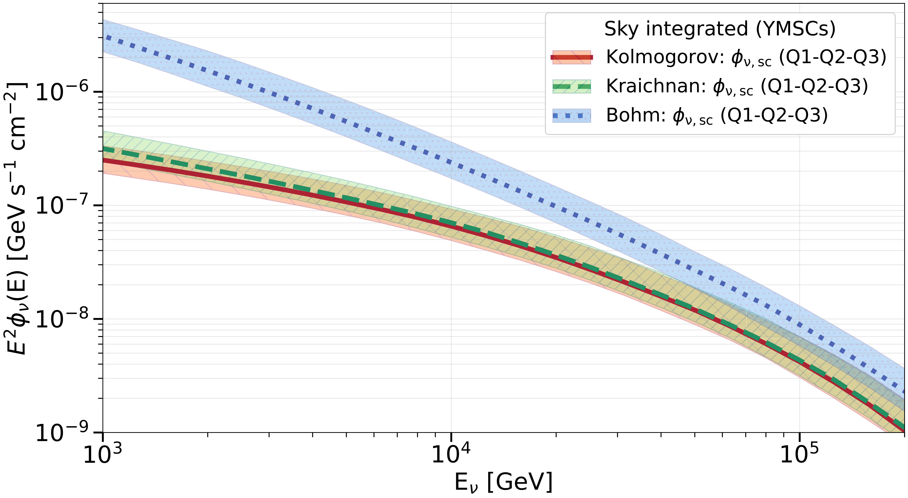
图注：Predicted all-flavour, sky-integrated, neutrino flux from the population of Galactic star clusters, for the three different particle diffusion scenario considered. The spectra and their uncertainties are derived from 100 different realizations of the Galactic cluster population. The lines represent the median flux (Q2), while the hatched bands are the 25th (Q1) and 75th (Q3) percentiles.
对应解读：对应“建议重点查看的图表”第3项、第5项，以及“关键图表逐图导读”图3、图6：星团族群累积通量和多次合成实现的不确定性带。
入选理由：该图专门展示银河星团族群的全天积分全味中微子通量，且基于100次银河星团种群实现给出中位数和25%–75%分位区间。它是判断未解析星团总体贡献大小、扩散情景依赖以及随机星团人口不确定性的核心图，比单个源或输入参数图更直接服务于日报关于“少数明亮星团是否主导均值”的讨论。
来源与置信度：\(arxiv_source\)；high；\(arxiv_source\) / main.tex:figure[4]
Fig01
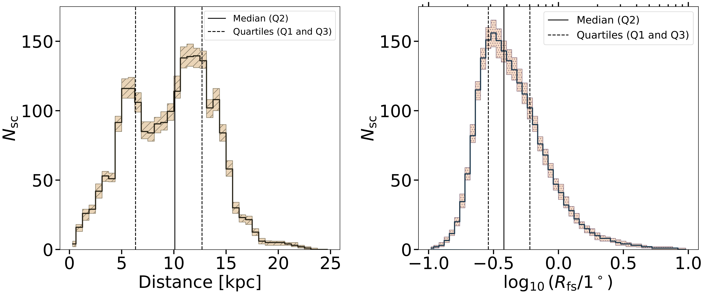
图注：\(\emph{Left}\): Distribution of heliocentric distances of the simulated star clusters. For each distance bin, we show the median (Q2) number of YMSCs computed over 100 independent realizations of the Galactic cluster population, as well as the 25th–75th percentile range (Q1 and Q3) plotted as a shaded region. \(\emph{Right:}\) Distribution of the projected bubble radius on the sky for the simulated SC population, with the shaded region indicating the 25th–75th percentile range (Q1 and Q3) as computed over 100 independent realizations of the Galactic population. The vertical black solid and dashed lines mark the median (Q2) and the two quartiles of the overall distribution, respectively. The size of the bubbles have been calculated including cooling losses by rescaling the total mechanical luminosity $L_{\rm tot}$ with a constant factor $\eta_{\rm{m}}=0.1$, see text for further details.
对应解读：对应“建议重点查看的图表”第1项和“关键图表逐图导读”图1：合成银河星团种群的距离与角尺度分布。
入选理由：该图展示模拟 YMSC 的日心距离分布和天空投影气泡半径分布，并给出100次实现的中位数及四分位范围。它可用于检查合成种群是否过度集中在太阳邻域、远距离星团是否被模型补全，以及源角尺度是否会影响未解析弥散模板，是理解后续通量和天空图可靠性的基础。
来源与置信度：\(arxiv_source\)；high；\(arxiv_source\) / main.tex:figure[1]
Fig07

图注：Longitudinal profiles of the expected all-flavour neutrino fluxes above 1~TeV, integrated in the latitude range $|b|<5^\circ$. The contribution by YMSCs is provided by the coloured lines, with the diffusion domain assumed in the modelling being Kolmogorov in the top panel, Kraichnan in the middle panel, and Bohm in the bottom panel. Dot-dashed and dotted lines in each panel correspond to the CR-induced neutrino emission, reproducing respectively CR data by IceTop and Kascade with no hardening in the inner Galactic region. The dashed line corresponds instead to the CR-induced neutrino emission, reproducing IceTop CR data under the assumption of a spectral hardening in the inner Galactic region. Differences between the IceTop and KASCADE cases (in the no hardening scenario) are negligible, since the emission is dominated by the lower threshold of integration (here set at 1~TeV), whereas the models mainly diverge around PeV energies.
对应解读：对应“建议重点查看的图表”第4项、第7项，以及模型拟合段落中关于空间模板相似性和经度残差诊断的讨论。
入选理由：该图给出 Eν>1 TeV、|b|<5° 内的经度剖面，直接比较 YMSC 与多种 CR-induced neutrino emission 模型。相比全天积分谱，它更能诊断星团贡献在银经方向上的结构差异，帮助判断星团模板是否可能在未来中微子数据中与气体/CR海模板区分。
来源与置信度：\(arxiv_source\)；high；\(arxiv_source\) / main.tex:figure[7]
Fig12

图注：Same as top panels of Fig.~\(\ref{fig:nuFluxes},\) but the CR-induced diffuse emission has been computed with the gas model provided by \(\cite{Soding_2025}.\)
对应解读：对应模型拟合段落和局限性讨论中关于气体模型系统误差、CR sea 归一化和模板形状不确定性的部分。
入选理由：该图使用替代气体模型重新计算 CR-induced diffuse emission，并沿用主要通量比较图的格式，可用于评估气体分布假设对总银河中微子通量预测的影响。虽然不是主结论图，但它直接支撑日报中关于系统误差和模型相容性不等于唯一解释的提醒。
来源与置信度：\(arxiv_source\)；high；\(arxiv_source\) / main.tex:figure[12]
强相关工作
这篇工作与 IceCube 的银河中微子模板探测直接相关。IceCube 的关键结果是用空间和能谱模板在事件样本中提取银河盘面成分，但模板本身可以来自 \\(\pi^0\\) 衰变 \\(\gamma\\) 射线、气体分布、宇宙线传播模型或其他经验图。Menchiari 等人的贡献是把大质量星团这种物理源族群转化为可测试的中微子模板。建议检索关键词包括“Galactic neutrino emission IceCube template”、“unresolved Galactic neutrino sources”、“massive star clusters cosmic rays neutrinos”和“hadronic emission star clusters”。
它也与关于银河宇宙线源的长期争论有关。超新星遗迹长期被认为是主要宇宙线源，但年轻大质量星团、OB 星协和恒星风泡近年来在 \\(\gamma\\) 射线观测中越来越重要，例如 Cygnus Cocoon 一类对象显示了扩展的硬谱粒子群。相反观点会强调星团加速效率、气体密度和最大能量的不确定性，认为现有数据未必需要额外星团模板。要理解这些张力，应同时检索“supernova remnants cosmic ray origin”、“Cygnus Cocoon gamma rays”、“stellar wind bubbles particle acceleration”和“diffuse Galactic gamma-ray neutrino connection”。
相似工作：
- https://arxiv.org/abs/2307.04427
- https://arxiv.org/abs/2211.09972
- https://arxiv.org/abs/2106.09898
基础理论 / 方法工作：
- https://arxiv.org/abs/1801.02003
- https://arxiv.org/abs/1909.08689
- https://arxiv.org/abs/1306.2309
相反观点 / 张力线索：
- https://arxiv.org/abs/2309.15963
- https://arxiv.org/abs/2009.00010
2. Population synthesis of Galactic middle-aged pulsar wind nebulae II. Observational signatures of superefficiency
- 来源：arXiv / astro-ph.HE
- 链接：https://arxiv.org/abs/2606.08116v1
- 作者：D. F. Torres, A. De Sarkar, B. Olmi, N. Bucciantini, D. M. -A. Meyer
- 评分：novelty 8/10，importance 8/10，relevance 10/10，final 9.70/10
- 推荐理由：PWN星系群体合成并覆盖GeV到PeV能段，研究回响压缩和superefficiency的观测特征；对伽马射线源、PWN和未来高能观测非常相关。
中文题目：银河系中年脉冲星风云的族群合成 II：超效率辐射的观测特征
做了什么：这篇文章用混合的 TIDE+L 框架做银河系中年脉冲星风云族群合成，重点追踪脉冲星风云在与超新星遗迹反向激波相互作用、进入回响压缩阶段后，是否会在某些波段出现辐射光度超过脉冲星当前自转能损失率的“超效率”现象。作者同时计算动力学演化、粒子谱演化和从射电到 PeV 能段的多波段辐射，比较单个源、按压缩状态筛选的样本以及整体族群谱能量分布。主要结论是：超效率并非罕见异常，尤其在远红外最常见，也可出现在光学、紫外、X 射线、GeV 甚至更高能段；其物理根源是历史注入的低能电子在反向激波压缩放大的磁场中被快速“重新点亮”。相较于简单薄壳模型，TIDE+L 预测的超效率源数量明显更多，在若干光学、紫外和 X 射线波段可高出一个数量级以上。
为什么重要：脉冲星风云常被用来从辐射光度反推当前脉冲星功率、粒子注入效率和磁化程度，但回响压缩阶段会打破“某波段光度不能超过当前自转能损失率”的直觉。本文说明中年脉冲星风云的观测亮度可以强烈依赖历史注入和环境压缩，而不是只由当前脉冲星决定。这个结论会影响我们如何解释 TeV 未识别源、X 射线亮斑、远红外扩展源以及银河系高能源族群统计。
理论 / 观测 / 仪器方法价值：理论上，文章把脉冲星风云的动力学回响、粒子冷却和多波段辐射连接到可观测的族群统计，提供了检验 PWN-SNR 相互作用模型的指标。观测上，它给出了哪些波段、哪些演化阶段最容易看到“超效率”源的预期，提醒读者不要简单把高光度等同于极高当前脉冲星功率。方法上，TIDE+L 相比纯薄壳模型能更细致地处理压缩过程和粒子谱再加工，因此对下一代红外、X 射线和伽马射线巡天的源分类有直接参考价值。
为什么应该关注：如果你研究脉冲星风云、超新星遗迹、银河系 TeV 源或宇宙线电子正电子源，这篇文章值得关注，因为它指出一个实用问题：有些看起来“能量预算不合理”的 PWN 可能并非需要新物理或异常高效率，而是处在特殊动力学阶段。它还给出族群层面的可检验预测：远红外超效率最常见，不同波段的超效率发生率对压缩历史和磁场放大非常敏感。换言之，未来多波段样本可以反过来约束 PWN 回响阶段的动力学和环境参数。
展开详细解读：文章讲解、背景、理论、重点章节、图表与相关工作
文章详细讲解
科学问题：脉冲星风云的辐射通常被理解为脉冲星自转能损失通过相对论性风注入电子、正电子和磁场后的结果。一个常用的经验判断是，某个波段的辐射光度如果接近或超过脉冲星当前自转能损失率 \(\dot{E}\)，就意味着能量预算紧张，甚至需要重新考虑距离、源关联或辐射模型。本文讨论的“超效率”正是这种情形：在给定波段中，辐射光度 \(L_{\rm band}\) 大于当前 \(\dot{E}\)。关键问题不是瞬时能量守恒被违反，而是历史注入的粒子能量、磁场压缩和辐射时标如何让一个中年 PWN 在短时间内显得比当前脉冲星更亮。
作者怎么做：文章采用 TIDE+L 混合框架进行银河系族群合成。这个框架不是只给每个源指定一个经验谱，而是同时跟踪 PWN 的动力学半径、与宿主 SNR 的相互作用、反向激波压缩导致的回响阶段、粒子能谱演化以及从射电到 PeV 的辐射输出。作者生成一组银河系中年 PWN 的合成族群，对每个源计算不同演化阶段、不同频率或能带中的光度，并用 \(L_{\rm band}/\dot{E}\) 判定是否处于超效率状态。与纯薄壳近似相比，TIDE+L 能更细地描述压缩阶段的内部再分布、磁场增强和粒子谱响应。
关键结果：论文的核心结论是，超效率不是少数极端个例，而是中年 PWN 族群中可以反复出现的观测状态。远红外波段最容易出现超效率，因为低能电子数量多、冷却慢，能在系统年龄内累积；当反向激波压缩云体并增强磁场时，这些累积电子的同步辐射会被显著放大。文章还指出，超效率会跨越多个波段和多个演化阶段出现，不限于某一个特定频段。相对薄壳模型，TIDE+L 预测的超效率源数量显著增加：在远红外和 GeV 波段增加可达数倍，在若干光学、紫外和 X 射线波段甚至超过一个数量级。
局限和下一步：这类族群合成不可避免依赖初始自转周期、制动指数、出生率、空间分布、超新星爆炸能量、喷出物质量、环境密度、粒子注入谱和磁化参数等假设。超效率发生率对距离选择、扩展源探测阈值、波段定义和源混淆也很敏感。下一步最关键的是把模型预测与真实多波段样本做同质比较，例如在远红外、X 射线和 \(\gamma\) 射线中用统一的扩展源选择函数评估 \(L_{\rm band}/\dot{E}\) 分布；同时需要更高分辨率的流体或磁流体模拟来检验 TIDE+L 对回响压缩的近似是否足以描述非球对称 SNR-PWN 相互作用。
背景知识
研究对象是脉冲星风云，通常由年轻或中年脉冲星的相对论性风在周围介质中终止激波后形成。风中电子和正电子被加速到相对论性能量，在云内磁场中产生同步辐射，并通过逆康普顿散射产生高能和甚高能 \(\gamma\) 射线。经典例子如 Crab Nebula 处在较年轻、持续供能很强的阶段，而本文关注的中年 PWN 更常处于演化过渡期：脉冲星当前 \(\dot{E}\) 已显著下降，但历史注入的粒子仍留在系统中。
历史问题在于 PWN 并不是孤立膨胀的气泡。它们诞生在超新星遗迹内部，先在自由膨胀喷出物中膨胀，随后宿主 SNR 的反向激波返回中心并压缩 PWN，这一阶段通常称为回响阶段。压缩会提高磁场、改变粒子绝热能量、加速辐射冷却，并可能造成形态偏移和谱演化。许多中年 PWN 的观测复杂性，例如 X 射线紧致源与 TeV 扩展源不重合、谱能量分布难以用单一年龄解释，都与这一阶段有关。
为什么现在值得重新看？一方面，银河系高能巡天已经发现大量 PWN 候选体和未识别扩展 \(\gamma\) 射线源，未来 CTA、LHAASO 后续分析、eROSITA、XRISM、Athena 以及红外巡天数据会进一步扩大样本。另一方面，单源精细建模难以回答“这种状态在银河系中有多常见”的问题，需要族群合成给出发生率和选择效应。本文正是把多波段辐射、动力学阶段和源族群统计合在一起，研究超效率是否是普遍现象。
常见误区之一是把 \(L_{\rm band}>\dot{E}\) 直接理解为能量守恒问题。事实上，\(\dot{E}\) 是当前功率，而辐射粒子可能在过去几千到几万年中累积，磁场压缩也会把储存在粒子和磁场中的能量更快地转化为某一波段辐射。另一个误区是把所有 PWN 都按 Crab-like 直觉理解，即认为高亮度必然对应年轻、高 \(\dot{E}\) 和强实时注入。中年回响阶段恰恰说明，亮度可以是历史和环境共同塑造的瞬态结果。
基础理论 / 方法脉络
基础物理图像可以从能量注入开始。脉冲星因磁偶极辐射或更一般的制动机制损失转动能，形成以电子、正电子和电磁场为主的相对论性风。风在外部压力下形成终止激波，粒子被加速并填充 PWN。若只看瞬时功率，当前 \(\dot{E}\) 决定了新粒子和磁场的注入率；但对中年系统而言，粒子分布 \(N(E,t)\) 是过去注入、辐射冷却、绝热膨胀或压缩共同作用的积分结果。
PWN 与 SNR 的耦合是本文的关键。早期 PWN 在自由膨胀的超新星喷出物中扩张，半径增大导致绝热冷却和磁场稀释。随后 SNR 正向激波扫过星际介质，反向激波向内传播并撞击 PWN。这个过程会压缩云体，使体积 \(V\) 减小、磁场 \(B\) 增强，并改变粒子能量。若压缩足够快，原本低频或低光度的电子群会在新的磁场中产生强同步辐射。
本文使用的关键判据是某一观测频段的辐射光度与当前自转能损失率的比值。若 \(\eta_{\rm band}=L_{\rm band}/\dot{E}>1\)，作者称其为该频段的超效率。这里的 \(L_{\rm band}\) 不是总玻尔ometric光度，而是指定频带积分光度，因此不同波段对粒子能量和磁场的响应不同。远红外主要追踪较低能电子的同步辐射，X 射线追踪高能电子和强冷却尾部，GeV-TeV \(\gamma\) 射线通常与逆康普顿散射相关。
观测和统计逻辑上，族群合成需要从物理分布生成许多源，再把每个源投影到可观测量：距离、通量、角尺度、谱能量分布、能带光度和探测可见性。退化关系很多，例如同样的远红外光度可以来自更强磁场或更多低能电子；同样的 \(\gamma\) 射线亮度可以来自更高粒子能量密度或更强靶光子场；同样的 \(L_{\rm band}/\dot{E}\) 也可能因距离误差而偏高。本文的重要性在于，它强调这些退化必须结合动力学阶段来读，而不能只用静态谱模型解释。
公式与推导
第一步是当前能量输入。脉冲星转动能为 \(E_{\rm rot}=I\Omega^2/2\)，其中 \(I\) 是转动惯量，\(\Omega\) 是角速度；自转能损失率为
这里 \(\dot{\Omega}<0\)，所以 \(\dot{E}\) 表示正的供能功率。若采用制动律 \(\dot{\Omega}=-K\Omega^n\)，其中 \(K\) 是制动常数、\(n\) 是制动指数，则
其中 \(\dot{E}_0\) 是初始自转能损失率，\(\tau_0\) 是初始自转下降时标。这个式子说明中年 PWN 的当前 \(\dot{E}\) 可以远低于早期注入功率。
第二步是粒子和磁场的能量分配。若粒子获得比例 \(1-\eta_B\)，磁场获得比例 \(\eta_B\)，则注入功率可写为
其中 \(\eta_B\) 是磁化注入参数。粒子注入谱常用分段幂律或带截断的形式表示，例如
其中 \(E\) 是粒子能量，\(E_b\) 是谱折断能量，\(p_i\) 是对应能段的谱指数，\(Q_0(t)\) 由 \(\int E Q(E,t)dE=L_e(t)\) 归一化。
第三步是粒子谱演化。忽略空间扩散时，单区模型中的电子数分布 \(N(E,t)\) 满足连续性方程
其中 \(\dot{E}_{\rm loss}\) 包含同步、逆康普顿和绝热损失，\(\tau_{\rm esc}\) 是逃逸时标。回响阶段的特殊性在于绝热项可以由损失变为增能，即
当云体体积 \(V\) 减小时，\(d\ln V/dt<0\)，粒子可被绝热压缩增能。
第四步是磁场响应。若近似磁通冻结并取各向同性压缩，磁场与体积可按
标度增强。实际 TIDE+L 会用更完整的动力学处理，但这个标度清楚说明为什么反向激波压缩能显著提高同步辐射。单个电子的同步特征频率约为
其中 \(e\) 是电荷，\(m_e\) 是电子质量，\(c\) 是光速，\(\gamma=E/(m_e c^2)\)。因此同一批电子在更强 \(B\) 中会辐射到更高频率，并且辐射功率增强。
第五步连接到观测光度。同步辐射的频谱光度可写成
其中 \(P_\nu^{\rm syn}\) 是单电子同步功率谱。指定波段 \([\nu_1,\nu_2]\) 的光度为
本文的核心诊断量就是
这个判据比较的是波段积分光度与当前供能，而不是历史总能量。
第六步是通量和族群可见性。距离为 \(d\) 的源，其观测能量通量为
在合成族群中，是否被某个巡天看到取决于 \(F_{\rm band}\)、角尺度、背景和仪器灵敏度。若用泊松计数似然描述观测，给定模型期望计数 \(\mu_j\) 和观测计数 \(k_j\)，有
这类统计量说明，超效率预测最终要通过真实探测阈值和残差图来验证，而不是只看内禀光度。
最后可得到一个直观标度：若压缩因子使半径从 \(R_i\) 到 \(R_f\)，体积比为 \(C_V=V_i/V_f\)，则在磁通冻结近似下 \(B_f/B_i\sim C_V^{2/3}\)。对幂律电子谱 \(N(E)\propto E^{-p}\)，同步光度近似满足
因此压缩可使 \(L_\nu^{\rm syn}\) 按 \(C_V^{(p+1)/3}\) 量级上升，而同期 \(\dot{E}(t)\) 仍随年龄下降，这就是 \(\eta_{\rm band}\) 在回响阶段突然超过 \(1\) 的物理原因。
模型拟合 / 应用方法
这篇文章的“拟合”更接近族群合成参数空间中的前向建模，而不是对单个源做传统最小二乘拟合。模型从脉冲星出生性质、SNR 环境和 PWN 注入参数出发，生成大量合成源，然后计算每个源的动力学状态、粒子谱和多波段光度。核心比较量包括 \(L_{\rm band}\)、\(\dot{E}\)、\(\eta_{\rm band}\)、压缩状态、年龄和频段依赖的超效率发生率。
参数估计层面，该类工作最重要的隐含先验包括初始周期分布、磁场或磁化参数分布、制动指数分布、爆炸能量和喷出物质量分布、环境密度分布以及银河系空间分布。若这些先验改变，超效率源的绝对数量会变化；但本文强调的稳健趋势是，回响压缩会显著提高若干波段的超效率发生率，尤其对累积低能电子敏感的远红外。读者应把预测的“数量”理解为模型条件下的可检验族群统计，而不是无条件的精确计数。
残差诊断在未来观测比较中非常关键。对单个源，若模型能匹配 \(\gamma\) 射线但低估远红外，可能说明低能电子库或磁场压缩被低估；若能匹配 X 射线但过预测射电或红外，可能说明高能电子注入、冷却 break 或空间分区处理有问题。对族群，残差不应只看总源数，还应看 \(\eta_{\rm band}\) 分布、年龄分布、角尺度分布和不同波段交叉匹配比例。
退化关系包括距离与光度退化、磁场与电子数归一化退化、年龄与初始自转周期退化、环境密度与反向激波到达时间退化，以及靶光子场与逆康普顿亮度退化。特别是 \(L_{\rm band}/\dot{E}\) 的分子和分母都可能有系统误差：距离误差影响 \(L_{\rm band}\)，脉冲星计时参数和制动假设影响 \(\dot{E}\) 与年龄解释。若源关联错误，例如把一个无关红外结构或 \(\gamma\) 射线扩展源归给某个脉冲星，也会制造虚假的超效率。
模型可能失败的地方也很清楚。真实 PWN-SNR 相互作用往往非球对称，反向激波可能偏心撞击，导致粒子和磁场强烈空间分层；单区或准一维模型会把这些结构平均掉。粒子逃逸、湍流再加速、离子成分、磁重联和环境不均匀性都可能改变谱演化。实际应用时，最好把本文预测当作“哪些源值得重点检查”的筛选器，再结合空间分辨的 X 射线、红外和 TeV 形态进行单源建模。
重点章节 / 结果段落怎么读
数据和样本设定部分应先看作者如何定义银河系中年 PWN 族群，包括脉冲星出生率、初始自转参数、空间分布、SNR 环境参数和演化年龄范围。这里决定了所有统计结果的基线。读者要特别注意哪些参数是固定的，哪些来自分布抽样，以及源是否经过观测选择函数筛选。
方法部分的重点是 TIDE+L 框架如何把动力学演化与辐射演化耦合。建议关注回响阶段的判定、反向激波压缩的处理、磁场演化、粒子注入谱和冷却项。本文相对纯薄壳模型的差异就藏在这些方法细节中，尤其是压缩期间粒子谱和磁场如何被重新加工。
主结果部分应按频段阅读：远红外、光学、紫外、X 射线、GeV、TeV 或 PeV 各自的超效率发生率不同，背后的电子能量和冷却时标也不同。不要只看总数；应看超效率与年龄、压缩状态、磁场强度、粒子累积的关系。
讨论部分最值得看的是与薄壳模型的比较以及物理解释。作者报告 TIDE+L 相比纯薄壳模型预测更多超效率源，在某些波段差异超过一个数量级。读者应检查这是否主要来自动力学压缩更强、持续时间更长、粒子保存更多，还是来自辐射计算细节。
稳健性或附录部分若有参数扫描，应重点看超效率发生率对环境密度、初始周期、磁化参数和探测阈值的敏感性。这些内容决定了本文结论在真实银河系样本中有多可检验，也决定了未来观测应优先约束哪些物理量。
建议重点查看的图表
-
族群演化阶段分布图：应检查年龄、半径、压缩因子或回响阶段标记的分布，确认超效率源是否集中在反向激波压缩期间，还是在更宽的演化阶段都存在。
-
各波段 \(\eta_{\rm band}=L_{\rm band}/\dot{E}\) 分布图：重点看超过 \(1\) 的尾部比例、不同波段的峰值位置以及远红外是否明显更容易超效率。
-
单源谱能量分布示例：应看压缩前、压缩中和压缩后的 SED 如何变化，尤其同步峰和逆康普顿峰是否同时增强，还是只有同步主导波段显著变化。
-
TIDE+L 与薄壳模型比较图：重点看不同频段预测源数的比值，哪些波段差异最大，以及差异是否集中在特定年龄或压缩强度区间。
-
压缩因子或磁场强度与超效率关系图：应检查是否存在清晰阈值，例如高 \(B\) 或大压缩因子显著提高 \(\eta_{\rm band}\)，以及散点是否很大。
-
族群总谱能量分布或累计源数图：看整体银河系 PWN 族群在红外、X 射线和 \(\gamma\) 射线中的贡献，注意模型线是否由少数极亮源主导。
-
可观测通量与距离分布图：若论文给出，应检查超效率源是否只是近距离选择效应，还是在内禀光度空间中也确实常见。
关键图表逐图导读
图 1：如果是模型流程或演化示意图，横向通常对应时间或演化阶段，纵向可能是 PWN 半径、SNR 反向激波位置、磁场或压力。读图时应找出自由膨胀、反向激波接触、最大压缩和再膨胀这些节点。陷阱是不要把压缩阶段理解成单一瞬间；它有持续时间，并且不同源的持续时间由环境密度和爆炸参数控制。
图 2：若显示单个代表性源的谱能量分布，横轴通常是频率或光子能量，纵轴是 \(\nu L_\nu\) 或 \(E^2 dN/dE\)。模型线可能分为同步辐射、逆康普顿和总辐射。应重点看压缩时同步分量如何抬升，远红外、光学或 X 射线是否跨过对应 \(\dot{E}\) 水平。读图陷阱是波段光度要积分，不是只比较某一点的 \(\nu L_\nu\)。
图 3：若为各频段超效率发生率柱状图或曲线，横轴可能是波段，纵轴是超效率源数或比例。重点比较远红外、GeV、X 射线和光学/紫外的相对高低，并检查是否有误差条或模型变体范围。陷阱是不同波段的探测灵敏度和背景完全不同，内禀发生率不等于真实巡天检出率。
图 4：若为 \(\eta_{\rm band}\) 随年龄或压缩状态的散点图，横轴可能是年龄、压缩因子或 \(R_{\rm PWN}\) 的演化指标，纵轴为 \(L_{\rm band}/\dot{E}\)。应看超过 \(1\) 的点是否集中在回响压缩区间，以及同一年龄是否存在很大散布。陷阱是年龄不是唯一控制量，环境密度和初始自转能会造成强烈散点。
图 5：若为 TIDE+L 与薄壳模型的比较，横轴可能是频段或年龄，纵轴是源数比、超效率比例或累计数量。应看哪些波段差异超过数量级，并追踪差异是否来自磁场放大、粒子谱重处理或动力学阶段持续时间不同。陷阱是模型间差异不一定只反映“精度更高”，也可能来自不同假设下的有效参数空间。
图 6：若为族群 SED 或累计通量分布，横轴为频率/能量或通量阈值，纵轴为总光度、源数或累计数。应判断总贡献是否由少数极端压缩源主导。若高端尾部很陡，少量源的距离和环境假设会显著改变观测预期。
论文原图 / 可嵌入图片
Fig01
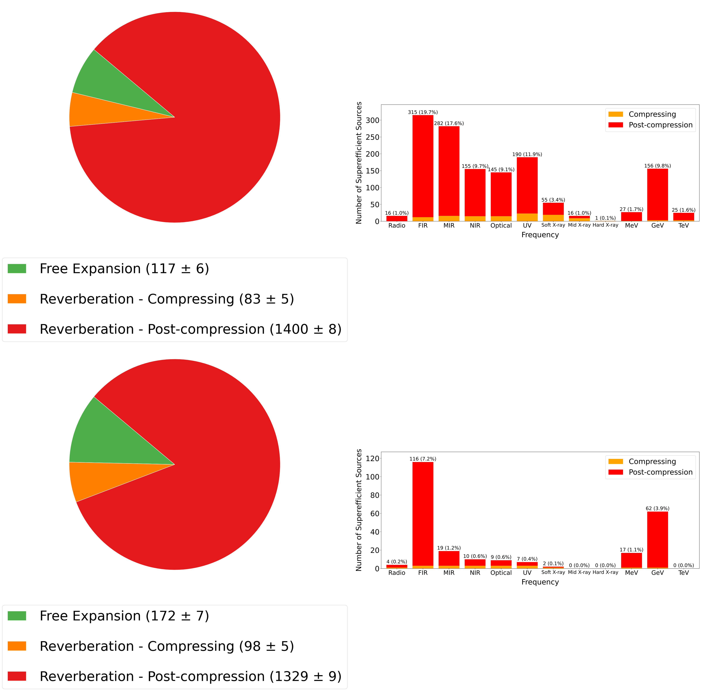
图注：The pie charts show the distribution of PWNe across evolutionary stages-free expansion (green), reverberation-compressing (orange), and reverberation-post-compression (red). The accompanying bar plots display the frequency-dependent distribution of superefficient sources, separated by compression state using the same color scheme. The top and bottom panels correspond to the population simulated with \(\texttt{TIDE+L}\) and with \(\texttt{TIDE},\) respectively. All results refer to the current epoch. For the pie charts, the reported counts represent mean values obtained from 1000 realizations of randomly drawn 1600 PWNe at the final simulation time, with the corresponding $1\sigma$ uncertainties indicated in the legend. The bar plots show the corresponding mean number and fractional contribution of superefficient PWNe in each frequency range obtained via the same sampling procedure.
对应解读：对应“建议重点查看的图表”第1、2、4项，以及“关键图表逐图导读”中图3/图5式的超效率发生率与模型比较解读。
入选理由：这张图同时给出演化阶段饼图、各频段超效率源数/比例柱状图，并直接比较 TIDE+L 与 TIDE。它最集中地支撑日报核心结论：超效率在不同压缩状态和不同波段中的发生率、远红外是否最突出，以及 TIDE+L 相对简化模型是否预测更多超效率源。
来源与置信度：\(arxiv_source\)；high；\(arxiv_source\) / aa.tex:figure[1]
Fig02
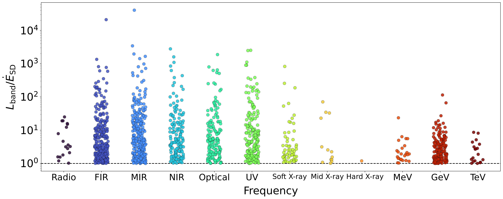
图注：Distribution of the superefficiency ratio, $L_{\rm band}/\dot{E}_{\rm SD}$, for the superefficient PWNe in a random realization of 1600 sources at the current age. Each point corresponds to an individual source that satisfies $L_{\rm band}/\dot{E}_{\rm SD}>1$ in the corresponding frequency. The different bands are shown along the horizontal axis, while the vertical axis gives the ratio between the integrated luminosity in the corresponding frequency band and the pulsar spin-down power at the current age. The dashed horizontal line marks $L_{\rm band}/\dot{E}_{\rm SD}=1$, i.e. the threshold above which a source is classified as superefficient.
对应解读：对应“建议重点查看的图表”第2项，以及“关键图表逐图导读”中关于各波段 \(\eta_{\
m band}=L_{\
m band}/\dot{E}\) 分布和超过1尾部的说明。
入选理由：该图直接以波段为横轴、\(L_{\
m band}/\dot{E}_{\
m SD}\) 为纵轴，并标出超效率阈值1，是判断哪些波段不仅源数多、而且超效率程度高的关键诊断图。它比一般SED图更直接服务于日报对超效率定义和波段差异的解读。
来源与置信度：\(arxiv_source\)；high；\(arxiv_source\) / aa.tex:figure[2]
Fig08
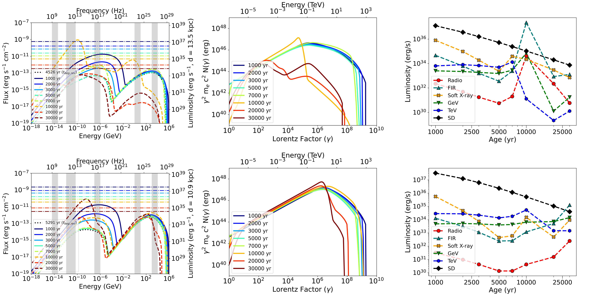
图注：MWL SEDs, electron spectra and integrated luminosity evolution at different frequency bands of two selected individual PWNe based on the CF are shown in this figure. The upper (lower) row corresponds to Example 1 with CF $\sim 50.3$ (Example 2 with CF $\sim 5.8$). The left panel in both rows shows the evolution of the SEDs with time. The solid (dashed) lines correspond to the SED before (after) the reverberation, whereas the dotted line corresponds to the SED at the reverberation age ($t_{\rm beg, rev}$). The grey-shaded regions in the MWL SED plot signify the frequency ranges for which the integrated luminosity has been extracted. The colored dot-dashed lines in the same plot indicate the spin-down luminosities at considered PWN age snapshots, and share a common line color as that for the MWL SEDs. The middle panel in both rows shows the evolution of electron spectra at the considered snapshot ages, with the same color scheme as the MWL SEDs. The right panel of the figure contains the time evolution of integrated luminosities in the frequency ranges of radio (red), FIR (teal), soft X-ray (orange), GeV (green), and TeV (blue). The time evolution of spin-down luminosity (black) is also shown for comparison and to highlight the occurrence of superefficiency.
对应解读：对应“建议重点查看的图表”第3、5项，以及“关键图表逐图导读”中单源SED、压缩前/中/后演化和压缩因子影响的说明。
入选理由：这张图给出两个不同压缩因子个例的多波段SED、电子谱和各波段积分光度随时间演化，并与自转能损失率比较。它最适合解释为什么历史注入粒子和回响压缩能让某些波段跨过 \\(\\dot{E}\\)，也能展示同步峰、电子谱和积分光度之间的物理联系。
来源与置信度：\(arxiv_source\)；high；\(arxiv_source\) / aa.tex:figure[8]
Fig06
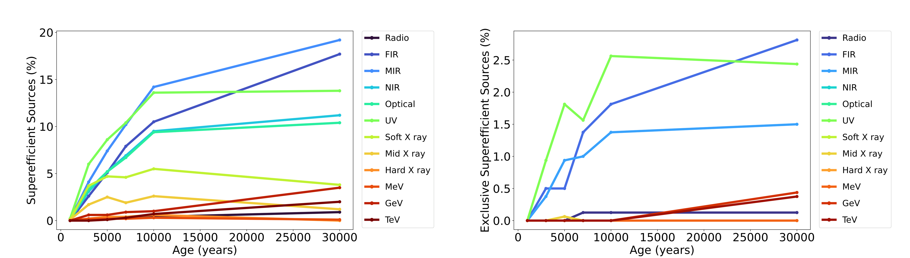
图注：The left panel shows the time evolution of the mean percentage of superefficient sources across different energy bands, as obtained from Fig. \(\ref{fig: pie_super_time_series}.\) The right panel, on the other hand, shows sources that are exclusively superefficient in any given frequency band at any time for a single random realization of 1600 PWNe.
对应解读：对应“建议重点查看的图表”第1、2、6项，以及“关键图表逐图导读”中关于超效率发生率随时间和波段变化的说明。
入选理由：左 panel 给出不同能带超效率源平均百分比的时间演化，右 panel 展示各频段独占超效率源，有助于判断超效率是否只发生在某个短暂压缩瞬间，还是在不同年龄和不同波段中反复出现。它补充了 Fig01 的当前时刻统计。
来源与置信度：\(arxiv_source\)；high；\(arxiv_source\) / aa.tex:figure[6]
Fig09
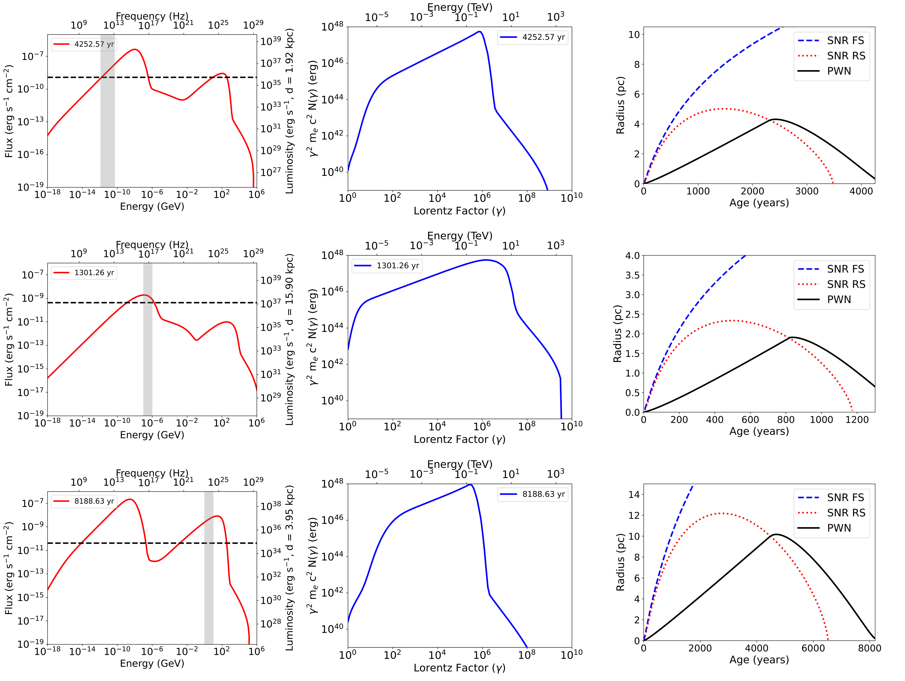
图注：Representative examples of three individual sources that exhibit superefficiency at the current age in distinct energy bands: FIR (top panel), soft X-ray (middle panel), and GeV $\gamma$-rays (bottom panel). Each source is selected from the compressing phase of evolution to highlight the physical conditions driving enhanced radiative output. For each case, we show the SEDs (left panel), electron spectra (middle panel), and radii evolution (including the PWN and SNR) (right panel). The current age of the system is also provided in the plot. The grey shaded regions in the MWL SED plots signify the frequency bands where superefficiency was obtained, and the black dashed lines in the same plots represent the spin-down luminosity at the current age.
对应解读：对应“建议重点查看的图表”第3、5项，以及“关键图表逐图导读”中代表性单源SED、电子谱和半径演化的说明。
入选理由：该图选择当前处于压缩阶段且分别在FIR、软X射线和GeV超效率的三个代表源，同时展示SED、电子谱和PWN/SNR半径演化。它能把“超效率来自回响压缩和磁场/粒子谱响应”的叙述与具体源的动力学阶段联系起来。
来源与置信度：\(arxiv_source\)；high；\(arxiv_source\) / aa.tex:figure[9]
Fig11
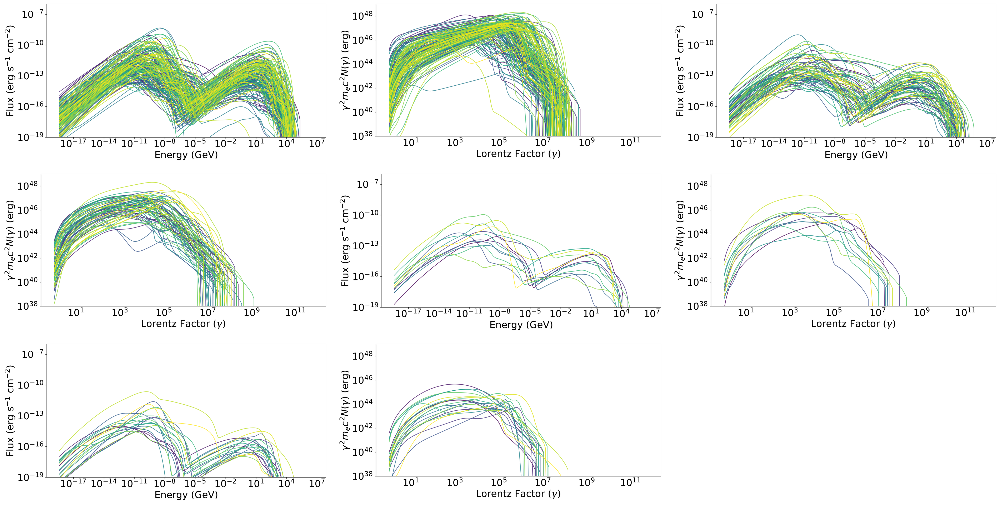
图注：Grouped SEDs (left panel) and electron spectra (right panel) for sources exhibiting superefficiency in FIR frequency range at the current epoch considered from a single random realization of 1600 sources, but for four different CF ranges: CF $< 10$ (first row), $10 < \mathrm{CF} < 50$ (second row), $50 < \mathrm{CF} < 100$ (third row) and CF $> 100$ (fourth row). Note that a continuous colormap is used only to distinguish the different curves: each color corresponds to an individual PWN and has no additional physical meaning.
对应解读：对应“建议重点查看的图表”第5项，即压缩因子与超效率关系，以及模型解释中关于磁场压缩和低能电子库的讨论。
入选理由：该图按不同压缩因子CF区间展示FIR超效率源的SED和电子谱，是候选图中最直接检验压缩强度与远红外超效率联系的图。它有助于判断高CF是否系统性增强FIR辐射，并展示同一CF区间内仍存在的源间散布。
来源与置信度：\(arxiv_source\)；high；\(arxiv_source\) / aa.tex:figure[11]
强相关工作
这篇工作与 PWN 演化建模的长期问题直接相连，包括一维流体模型、薄壳近似、时间依赖单区辐射模型以及更复杂的磁流体模拟。相似工作通常检索关键词包括 “pulsar wind nebula reverberation phase”, “PWN population synthesis”, “PWN superefficiency”, “reverse shock compression PWN”, “time-dependent PWN spectral evolution”。本文的新意在于把超效率作为族群诊断量，而不是只解释某几个异常亮的单源。
它也与高能源分类中的张力有关。许多 TeV 或 GeV 扩展源可能有候选脉冲星，但若按当前 \(\dot{E}\) 估计效率会显得过高，从而被怀疑不是 PWN。本文提醒，这种高效率可能是中年回响阶段的自然结果，尤其当多波段形态和谱支持历史粒子累积时。相反观点则会强调距离误差、源混淆、背景建模和不正确的脉冲星关联也能制造表观超效率；因此真实样本检验必须结合位置、形态、谱和时间演化，而不是只看能量预算。
基础文献方面，可检索 Kennel-Coroniti 的 Crab PWN 风模型、Gelfand 等人的时间依赖 PWN-SNR 演化模型、Bucciantini 和 Torres 团队关于 PWN 回响与多波段演化的系列工作，以及 H.E.S.S.、Fermi-LAT、HAWC、LHAASO 对银河系 PWN 候选体的巡天论文。由于本文是 2026 年 arXiv 新文，建议从其参考文献向前追踪 “TIDE” 和 “TIDE+L” 框架的第一篇族群合成论文。
相似工作：
- https://arxiv.org/abs/2606.08116
基础理论 / 方法工作：
- https://ui.adsabs.harvard.edu/abs/1984ApJ...283..694K/abstract
- https://ui.adsabs.harvard.edu/abs/2009ApJ...703.2051G/abstract
相反观点 / 张力线索：
（未提供）
3. Discovery of a Candidate 2 keV Cyclotron Resonance Scattering Feature in the HLX NGC 3583 X-1
- 来源：arXiv / astro-ph.HE
- 链接：https://arxiv.org/abs/2606.08598v1
- 作者：Kiran M. Jayasurya, Aman Upadhyay, Vikram Rana
- 评分：novelty 8/10，importance 8/10，relevance 9/10，final 9.35/10
- 推荐理由：Discovery of a candidate 2 keV cyclotron feature in a hyperluminous X-ray source, implying a highly magnetized neutron-star accretor, is a notable high-energy observational result with broad ULX/HLX relevance.
中文题目：在超亮 X 射线源 NGC 3583 X-1 中发现候选 2 keV 回旋共振散射特征
做了什么：这篇论文重新分析了 NGC 3583 中暂现型超亮 X 射线源 2SXPS J111416.1+481833，也即 NGC 3583 X-1，使用 XMM-Newton、NuSTAR、Chandra 以及长期 Swift/XRT 监测数据，研究它在高光度和低态之间的谱态变化。作者确认该源可进入超亮 X 射线源区间，峰值 X 射线光度超过 \(10^{41}\,\mathrm{erg\,s^{-1}}\)，随后又衰减超过 \(45\) 倍；宽能段谱中存在 \(5\)--\(6\,\mathrm{keV}\) 左右的高能截止。最关键的新结果是，在 XMM-Newton 光谱中发现中心能量 \(E_{\rm line}\simeq1.97\pm0.04\,\mathrm{keV}\)、宽度 \(\sigma_{\rm line}\simeq74\pm40\,\mathrm{eV}\) 的吸收线，显著性约高于 \(3.9\sigma\)。作者倾向把它解释为质子回旋共振散射特征，从而推得局域磁场 \(B\sim4\times10^{14}\,\mathrm{G}\)，并认为这与极端光度、硬谱态和无明显脉冲的组合一起，支持该源含有一颗强磁化中子星吸积体。
为什么重要：超亮和极亮 X 射线源长期存在一个核心争议：它们究竟是中等质量黑洞，还是恒星级致密星通过超爱丁顿吸积产生的表观超高光度？如果这条 \(2\,\mathrm{keV}\) 吸收线确实是质子回旋共振散射线，那么它直接给出 \(10^{14}\,\mathrm{G}\) 量级磁场，是区分强磁中子星与黑洞吸积体的少数近直接证据之一。即使后续证明该线来自电离外流或仪器系统误差，这篇工作也把 NGC 3583 X-1 提升为检验超爱丁顿吸积、磁场束缚吸积柱、ULX 脉冲星无脉冲选择效应的高价值目标。
理论 / 观测 / 仪器方法价值：理论价值在于它把超亮 X 射线源的宽带连续谱、暂现行为和可能的回旋线约束放到同一物理图像中，给出磁化中子星模型的可检验参数尺度。观测价值在于它示范了怎样联合 XMM-Newton 的软 X 射线谱分辨能力、NuSTAR 的硬 X 射线截止约束、Chandra 的定位能力和 Swift/XRT 的长期光变监测来诊断暂现 HLX。方法价值在于它强调吸收线显著性不能只看简单 \(\Delta\chi^2\)，还要考虑连续谱选择、线能搜索的试验因子、仪器边缘和背景残差。
为什么应该关注：你应该关注它，因为这是一个可能把“极亮源是否需要中等质量黑洞”这一老问题重新推向强磁中子星解释的案例。候选 \(2\,\mathrm{keV}\) 线若被确认，将意味着 HLX 级光度并不一定要求大质量黑洞，而可能来自强磁场、几何准直和超爱丁顿吸积共同作用。对从事高能暂现源、ULX、X 射线谱拟合、吸积物理或未来 Athena、XRISM、STROBE-X 类任务科学规划的人，这个目标都是值得跟踪的。
展开详细解读：文章讲解、背景、理论、重点章节、图表与相关工作
文章详细讲解
科学问题：NGC 3583 X-1 是一个暂现型极亮 X 射线源，峰值光度达到 \(L_X>10^{41}\,\mathrm{erg\,s^{-1}}\)。这个量级已经进入所谓 hyperluminous X-ray source，也就是 HLX 区域，传统上容易让人联想到中等质量黑洞。但过去十年脉冲 ULX 的发现说明，至少一部分看似超过中子星爱丁顿极限数百倍的源，其实可以由强磁化中子星通过超爱丁顿吸积、辐射各向异性和吸积柱几何产生。因此本文的核心问题不是单纯“这个源有多亮”，而是“它的光谱和时间行为是否给出了中子星，尤其是强磁中子星的直接线索”。
作者怎么做：论文汇集了多台 X 射线望远镜的档案资料。Swift/XRT 长期监测用于确认源的暂现行为、亮度范围和高低态转换；Chandra 主要提供高角分辨率定位，降低源混淆风险；XMM-Newton 提供较高信噪比的软 X 射线谱，适合寻找 \(\sim2\,\mathrm{keV}\) 附近的窄到中等宽度谱线；NuSTAR 则把能谱延伸到硬 X 射线，帮助判断是否存在 \(5\)--\(6\,\mathrm{keV}\) 的连续谱截止。连续谱方面，作者使用软热成分加光学厚热康普顿化模型，或内区平流主导盘模型来拟合宽带谱，并进一步在 XMM-Newton 谱中加入吸收线分量检验残差。
关键结果：第一，NGC 3583 X-1 不是一个稳定的低光度背景源，而是会在超亮态和深低态之间变化超过 \(45\) 倍的暂现源。第二，宽带谱在 \(5\)--\(6\,\mathrm{keV}\) 附近有明显截止，这比标准低吸积率黑洞硬态的幂律延伸更接近许多 ULX 的弯曲谱形。第三，XMM-Newton 数据中存在中心能量 \(E_{\rm line}\approx1.97\pm0.04\,\mathrm{keV}\)、线宽 \(\sigma_{\rm line}\approx74\pm40\,\mathrm{eV}\) 的吸收特征，统计显著性达到约 \(3.9\sigma\) 或更高。若解释为质子回旋共振散射特征，其对应局域磁场约为 \(B\sim4\times10^{14}\,\mathrm{G}\)，落在磁星级磁场范围。作者也检验了电离外流等替代解释，但认为相对不如质子回旋线自然。
局限和下一步：最重要的限制是该吸收线目前仍是“候选”特征。\(\sim2\,\mathrm{keV}\) 区域在 CCD X 射线光谱中并不完全干净，可能受有效面积校准、仪器边缘、背景建模或连续谱误设影响。线显著性还依赖线搜索范围、连续谱模型族和试验因子的处理。另一个限制是未探测到相干 X 射线脉冲；作者给出 \(0.3\)--\(10\,\mathrm{keV}\) 波段脉冲分数 \(90\%\) 置信上限约 \(19.3\%\)，\(3\)--\(15\,\mathrm{keV}\) 波段约 \(36.3\%\)，但这并不能排除中子星，因为脉冲可被散射、几何视角、低调制幅度或轨道多普勒效应稀释。下一步最关键的是在未来高光度态触发深度 XMM-Newton、NuSTAR、XRISM 或 Athena 观测，确认线能是否随光度、相位或连续谱状态变化，并用更高分辨率排除电离风线系。
背景知识
HLX 是 ULX 的高光度延伸，通常指视向 X 射线光度达到或超过 \(10^{41}\,\mathrm{erg\,s^{-1}}\) 的非核源。由于这个光度远高于典型 \(10\,M_\odot\) 黑洞的爱丁顿光度，也远高于中子星的球对称爱丁顿极限，早期很多 HLX 被视为中等质量黑洞候选体。但“各向同性等效光度”并不等于真实玻尔ometric 光度，几何准直、超爱丁顿盘风、吸积柱辐射转移都会让观测者看到高于简单爱丁顿估计的辐射。
ULX 领域的历史转折来自脉冲 ULX 的发现。M82 X-2、NGC 5907 ULX-1、NGC 7793 P13 等源显示，具有中子星自转脉冲的系统也能达到极高的表观光度。这迫使理论模型考虑强磁场如何降低有效散射截面、改变吸积流几何、形成辐射主导的柱状结构，以及如何通过盘风漏斗产生方向性增强。NGC 3583 X-1 的候选回旋线若成立，就比单纯光变或连续谱形状更接近“磁场测量”。
回旋共振散射特征在 X 射线脉冲星研究中是测量磁场的经典工具。电子回旋线常出现在 \(10\)--\(100\,\mathrm{keV}\) 量级，对应 \(10^{12}\,\mathrm{G}\) 量级磁场；质子质量大得多，因此同一磁场下质子回旋能量低约 \(m_e/m_p\)，若在 \(\sim2\,\mathrm{keV}\) 看到质子回旋线，就意味着磁场可达到 \(10^{14}\)--\(10^{15}\,\mathrm{G}\) 量级。这样的磁场接近磁星区间，对 ULX 中子星模型非常有约束力。
为什么现在值得重新看 NGC 3583 X-1？一方面，多任务档案数据已经能覆盖从软 X 射线到硬 X 射线的连续谱，避免只用单一 CCD 光谱误判谱形。另一方面，长期 Swift 监测可以把某次 XMM-Newton 或 NuSTAR 观测放在源的整体活动周期中理解，判断谱线是否只在高态出现。再者，ULX 谱线研究在近年积累了大量经验，特别是对高速外流吸收线、仪器校准残差和连续谱曲率的辨别更加成熟。
该领域常见误区有三类。第一，把超过爱丁顿光度直接等同于黑洞质量下限，这是忽略了各向异性和超爱丁顿辐射转移。第二，把没有脉冲等同于没有中子星，这是忽略了低脉冲分数、散射抹平、轨道加速度和观测窗口函数。第三，把任何单条吸收线都直接解释为回旋线，而没有检查电离风、原子跃迁、红蓝移组合、仪器边缘和连续谱模型不确定性。本文的价值正在于把这些可能性放在同一个观测诊断框架中比较。
基础理论 / 方法脉络
从最基本图像看，吸积致密天体的 X 射线光度来自引力势能释放。对黑洞或中子星，单位质量物质落入深势阱可释放约 \(GM/R\) 量级能量。若辐射压力与引力达到平衡，就得到爱丁顿尺度。HLX 的困难在于，其各向同性等效光度远超中子星爱丁顿光度，因此必须引入超爱丁顿吸积、几何准直、磁场调控或更大质量黑洞。
ULX 连续谱通常不是简单的标准薄盘加无截止幂律。许多源在几 keV 附近出现弯曲或截止，可用低温、光学厚的康普顿化区域解释：软盘光子进入相对低电子温度但高光学深度的热等离子体，多次散射后形成比普通黑洞硬态更弯曲的谱。也可用平流主导或超临界盘的内区辐射解释，因为高吸积率下部分能量随流体内移而非局域辐射，温度径向分布和谱形都会偏离标准薄盘。
回旋线的基础物理是带电粒子在磁场中横向运动量子化，光子在满足相邻朗道能级跃迁能量时被共振散射，从连续谱中挖出吸收状特征。对电子回旋线，能量较高；对质子回旋线，能量按质量比降低。若线形成区存在引力红移，则观测到的线能低于局域能量。本文把 \(E_{\rm line}\simeq1.97\,\mathrm{keV}\) 解释为质子回旋基频时，得到的是线形成区的局域磁场，而不是简单的偶极表面平均磁场。
观测方法上，XMM-Newton 的 EPIC 光谱在 \(0.3\)--\(10\,\mathrm{keV}\) 对这种线最敏感，但 \(\sim2\,\mathrm{keV}\) 附近也需要谨慎处理有效面积、元素边缘和背景。NuSTAR 对 \(>3\,\mathrm{keV}\) 硬谱形和截止有关键作用，可减少“连续谱曲率被误当成吸收线”的风险。Chandra 的作用不是最高信噪比谱学，而是确认位置与环境，避免把附近源或弥散辐射混入。Swift/XRT 则建立长期活动史，告诉我们某次深观测处在源的哪个状态。
常见退化来自连续谱与线模型之间的耦合。若连续谱模型过硬或过软，局部残差可能被高斯吸收线吸收；若吸收柱密度、软热成分温度、康普顿化电子温度和光学深度之间相关，线深与线宽也会改变。另一个系统误差是线搜索的 look-elsewhere effect：在一段能区内到处尝试加线，最高的 \(\Delta\chi^2\) 不能直接按固定能量的显著性理解。因此，严肃的线探测需要模拟连续谱下的虚假线分布。
公式与推导
第一步是确定极端光度的物理尺度。球对称、电子散射主导时，辐射力与引力平衡给出爱丁顿光度：
这里 \(G\) 是引力常数，\(M\) 是致密天体质量，\(m_p\) 是质子质量，\(c\) 是光速，\(\sigma_T\) 是汤姆孙散射截面。若观测到 \(L_X>10^{41}\,\mathrm{erg\,s^{-1}}\)，则对 \(1.4\,M_\odot\) 中子星而言是数百倍爱丁顿量级，这正是 HLX 物理解释的核心张力。
第二步是把观测通量变为各向同性等效光度：
其中 \(D\) 是 NGC 3583 的距离，\(F_X\) 是给定能段内吸收改正后的 X 射线通量。这个量假设辐射各向同性，因此若真实辐射存在准直，可写成 \(L_{\rm true}=bL_{X,\rm iso}\)，其中 \(b<1\) 是束射因子。
第三步是吸积功率尺度。若物质以速率 \(\dot M\) 落到半径 \(R\) 附近，辐射效率写为 \(\eta\)，则
这里右式适合估计中子星表面或内盘附近的引力能释放。若 \(L_{X,\rm iso}\) 远超 \(L_{\rm Edd}\)，则需要 \(\dot M\gg\dot M_{\rm Edd}\)、\(b<1\)、磁场降低有效散射截面，或更大 \(M\)。
第四步是连续谱截止的经验诊断。热康普顿化中，软光子经电子温度 \(kT_e\) 和光学深度 \(\tau\) 的等离子体散射，康普顿参数近似为
当 \(\tau\) 较大且 \(kT_e\) 只有几 keV 时，谱会在若干 keV 到十几 keV 发生弯曲。本文看到 \(5\)--\(6\,\mathrm{keV}\) 附近的截止，因而更像光学厚、低温康普顿化或超临界内盘，而不是低吸积率黑洞硬态的无截止幂律。
第五步是回旋能量。带电粒子在磁场 \(B\) 中的非相对论回旋角频率为
其中 \(q\) 与 \(m\) 是粒子的电荷和质量。相邻朗道能级之间的能量为 \(\hbar\omega_c\)，考虑引力红移后观测能量为
这里 \(z\) 是线形成区到无穷远的引力红移。这个公式是把线能变成磁场的关键。
第六步是质子回旋线的数值形式：
若 \(E_{\rm line}\simeq1.97\,\mathrm{keV}\)，且 \(1+z\sim1.2\)--\(1.4\)，则可估算
也就是 \(B\sim4\times10^{14}\,\mathrm{G}\) 的局域磁场。若同一能量被解释为电子回旋线，所需磁场会小 \(m_e/m_p\) 倍，物理含义完全不同。
第七步是吸收线的谱学模型。常用乘法高斯吸收可写为
其中 \(E_0\) 是线心，\(\sigma\) 是线宽，\(\tau_0\) 是线心光深。观测模型为连续谱 \(C(E)\) 乘以 \(M(E)\)，即 \(F(E)=C(E)M(E)\)。线的等效宽度近似衡量被吸收的通量面积。
第八步是仪器计数预测。探测器第 \(i\) 个能道的模型计数为
其中 \(t_{\rm exp}\) 是曝光时间，\(R_i(E)\) 是能量重分布矩阵，\(A_{\rm eff}(E)\) 是有效面积，\(B_i\) 是背景计数。任何 \(A_{\rm eff}(E)\) 的校准误差或 \(B_i\) 的估计偏差都可能在局部产生假线，因此 \(\sim2\,\mathrm{keV}\) 的残差必须结合仪器响应检查。
第九步是线显著性的统计诊断。若采用泊松计数似然，Cash 统计量可写为
其中 \(n_i\) 是观测计数，\(\mu_i\) 是模型计数。加入吸收线后得到 \(\Delta C=C_{\rm cont}-C_{\rm line}\) 或类似的 \(\Delta\chi^2\)。但因为 \(E_0\)、\(\sigma\) 和 \(\tau_0\) 可能在范围内搜索，最终显著性应通过蒙特卡洛模拟连续谱的虚假线分布来校正试验因子。
模型拟合 / 应用方法
这类工作首先要拟合多任务连续谱。核心拟合量包括吸收柱密度 \(N_{\rm H}\)、软热成分温度、归一化、康普顿化电子温度 \(kT_e\)、光学深度或谱指数、以及高能截止相关参数。若采用内区平流主导盘模型，则关键量转为内盘温度、径向温度指数、归一化和吸收参数。NuSTAR 对高能截止的限制很重要，因为如果没有硬 X 射线覆盖，软能段中的曲率可能与吸收线、热成分或吸收柱密度混淆。
线拟合通常在最佳连续谱上加入一个乘法吸收分量，拟合 \(E_{\rm line}\)、\(\sigma_{\rm line}\) 和线强度或光深。重要的是，线参数的置信区间必须在连续谱参数重新优化后给出，而不是固定连续谱只看局部残差。本文报告 \(E_{\rm line}\approx1.97\pm0.04\,\mathrm{keV}\) 和 \(\sigma_{\rm line}\approx74\pm40\,\mathrm{eV}\)，说明线心相对稳定，但线宽仍有较大不确定性。若线很窄，可能更容易受到校准残差影响；若线较宽，则需要更强的物理光深或速度展宽解释。
显著性估计是本结果能否站住的关键。固定能量加一条线得到的 \(\Delta\chi^2\) 或 \(\Delta C\) 不能直接等价于全局 \(p\) 值，因为研究者可能在多个能量、多个宽度、多个连续谱模型中寻找特征。更稳健的做法是在无线观看最佳连续谱下生成大量模拟谱，重复同样的盲线搜索流程，比较真实数据的最大改进量在模拟分布中的尾部概率。论文声称显著性 \(\gtrsim3.9\sigma\)，读者应检查这是局部还是全局显著性、是否包含连续谱模型不确定性、是否对不同仪器单独成立。
参数退化方面，\(N_{\rm H}\) 与软热成分会影响 \(<2\,\mathrm{keV}\) 的谱形，康普顿化温度与光学深度会影响几 keV 处的曲率，而这些都可能改变 \(2\,\mathrm{keV}\) 附近残差的形状。若源存在电离外流，吸收线的能量还可能由原子跃迁本征能量加速度蓝移决定，与回旋线磁场解释退化。区分两者需要看是否有同一速度系下的多条线、边、发射填充，或线能随光度变化的规律。
时间分析方面，作者未发现相干脉冲，只给出脉冲分数上限。拟合和搜索脉冲时需要考虑事件时间校正、可能的双星轨道加速度、有限曝光导致的频率漂移，以及高背景或软硬能段不同稀释效应。无脉冲结果不应作为排除中子星的强证据，而应与光谱磁场证据一起理解：如果有强散射风或不利视角，即使中子星存在，脉冲也可能被抹平。
实际应用上，这篇论文提供了一套可复用流程：先用长期监测选出高态，再用宽带谱确认 ULX 型截止，之后在高信噪比 CCD 谱中检验局部吸收特征，最后用回旋线、电离风和仪器系统误差三类解释做交叉排除。未来若触发观测能在不同光度态重复测到同一线，且线能或线深与吸积状态有可解释的关系，磁化中子星解释将显著增强。
重点章节 / 结果段落怎么读
-
数据与样本部分应先读。重点看作者如何定义 NGC 3583 X-1 的位置、与星系的关联、各望远镜观测的时间、曝光、能段和源提取区域。对 HLX 候选体，源混淆和背景 AGN 污染永远是首要检查项，因此 Chandra 定位和 Swift 长期光变曲线尤其关键。
-
长期光变与光度估计部分要关注高态和低态的通量转换。读者应检查距离假设、吸收改正、能段选择，以及 \(L_X>10^{41}\,\mathrm{erg\,s^{-1}}\) 是否来自实际高信噪比谱拟合还是从计数率转换外推。超过 \(45\) 倍的衰减幅度支持暂现性质，但也要看低态是否有可靠探测或只是上限。
-
宽带连续谱拟合部分是理解线探测的前提。应比较软热成分加热康普顿化、内区平流主导盘、简单幂律或 cutoff power-law 等模型的残差。特别要看 NuSTAR 是否真正约束了 \(5\)--\(6\,\mathrm{keV}\) 的截止，而不是由低信噪比背景主导。
-
吸收线搜索部分是论文核心。读者应看作者是否在 XMM-Newton 的不同探测器、不同观测、不同数据筛选中都看到 \(1.97\,\mathrm{keV}\) 线；是否报告线心、宽度、深度的置信轮廓；是否通过模拟校正试验因子；是否检验附近能区的仪器残差。
-
脉冲搜索与解释部分应作为辅助证据阅读。无脉冲不等于无中子星，但脉冲分数上限能告诉我们未来观测需要多深、在哪个能段更可能发现调制。讨论部分中对质子回旋线、电离外流和其他原子线解释的比较，是判断结论强弱的关键段落。
建议重点查看的图表
-
长期 Swift/XRT 光变曲线：检查源进入高态的时间、低态上限、峰值与低态的动态范围，以及 XMM-Newton、NuSTAR、Chandra 观测在光变曲线上的位置。
-
多任务宽带能谱和残差图：重点看 \(5\)--\(6\,\mathrm{keV}\) 截止是否由 XMM-Newton 与 NuSTAR 共同支持，残差是否在加连续谱后仍系统性存在。
-
XMM-Newton 在 \(\sim2\,\mathrm{keV}\) 附近的局部残差图：检查吸收线是否在不同 EPIC 探测器中一致，是否只由少数能道驱动，附近是否存在响应边缘或背景特征。
-
加线前后拟合改进或 \(\Delta\chi^2\)、\(\Delta C\) 搜索图：关注最高峰是否在 \(1.97\,\mathrm{keV}\)，以及其他能量是否也有可比峰值，这关系到 look-elsewhere effect。
-
线参数置信区间图：检查 \(E_{\rm line}\) 与 \(\sigma_{\rm line}\)、线深之间的相关性；若线宽下限接近零或线深与连续谱强相关，解释要更谨慎。
-
脉冲搜索功率谱或脉冲分数上限图：看频率范围、能段、置信水平和是否考虑轨道加速度。对 ULX 脉冲星，非探测上限的频率依赖很重要。
-
替代模型比较表：检查热康普顿化、平流盘、电离吸收模型的统计量、自由度和残差结构，而不是只比较最佳 \(\chi^2\) 数值。
关键图表逐图导读
图 1：长期光变图通常应以时间为横轴、X 射线通量或光度为纵轴，并标出 Swift/XRT 监测点以及 XMM-Newton、NuSTAR、Chandra 深观测时刻。读图时要确认峰值是否真的超过 \(10^{41}\,\mathrm{erg\,s^{-1}}\)，低态是探测还是上限，以及观测是否同时或近同时。陷阱是把不同能段、不同吸收假设转换出的光度直接比较。
图 2：源定位或图像图应展示 Chandra 或 XMM-Newton 视场中源与 NGC 3583 的空间关系，可能叠加误差圆和星系光学轮廓。关键是看源是否偏离星系核，是否存在邻近 X 射线源混淆。陷阱是 XMM-Newton 点扩散函数较宽，若没有 Chandra 定位，HLX 身份和宿主关联会弱很多。
图 3：宽带谱图通常以能量为横轴、展开后的 \(E F_E\) 或计数谱为纵轴，并叠加最佳拟合连续谱模型。应重点看几 keV 以上的曲率：若 NuSTAR 数据点在 \(5\)--\(6\,\mathrm{keV}\) 后明显低于无截止模型，说明 ULX 型截止可靠。陷阱是 unfolded spectrum 依赖模型，真正判断应看计数空间残差。
图 4：\(2\,\mathrm{keV}\) 附近残差图应展示加线前后的数据/模型比值。若吸收槽在多个探测器和不同分组方式下都出现，可信度增强。若只有单个探测器或少数 bin 贡献主要 \(\Delta\chi^2\)，需警惕校准或背景。坐标轴附近的能量刻度应与常见仪器边缘、元素线和电离吸收跃迁对照。
图 5：线搜索显著性图可能以测试线能为横轴、拟合改进 \(\Delta\chi^2\) 或 \(\Delta C\) 为纵轴。读者要看 \(1.97\,\mathrm{keV}\) 峰是否孤立，搜索能区有多宽，线宽是否固定或自由。陷阱是把局部最大值当作全局显著性，尤其在多个连续谱模型和多个观测中搜索时。
图 6：置信轮廓图若存在，通常展示 \(E_{\rm line}\) 与 \(\sigma_{\rm line}\) 或线光深的二维置信区间。紧致闭合轮廓意味着线心和宽度较受约束；长条形轮廓说明参数退化明显。若 \(\sigma_{\rm line}\) 与零宽线兼容，物理线宽解释和仪器分辨率影响都要重新评估。
图 7：脉冲搜索图可能为功率谱、\(Z^2_n\) 统计量、epoch-folding 显著性或脉冲分数上限随周期变化的曲线。关键是看搜索周期范围是否覆盖已知 PULX 的典型秒到千秒范围，以及是否对背景和源计数稀释做修正。陷阱是忽略双星轨道加速度会把相干功率抹宽，从而降低探测效率。
论文原图 / 可嵌入图片
Fig02
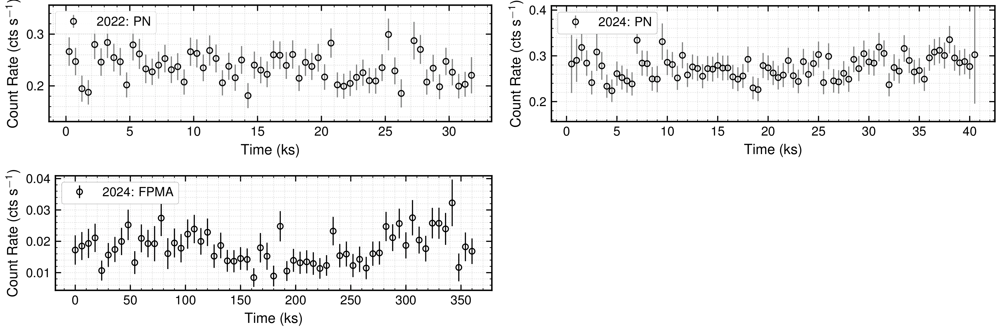
图注：Barycentric-corrected and background-subtracted light curves for NGC~3583~X-1. The top and middle panels show the 0.3--10 keV EPIC-pn data for the 2022 and 2024 epochs, respectively, binned at 500 s. The bottom panel displays the 3--15 keV \(\textit{NuSTAR}\) FPMA data binned at 6~ks. The horizontal axis represents time in kiloseconds (ks), and the vertical axis shows the count rate in counts~s$^{-1}$.
对应解读：时间分析与脉冲搜索相关段落；也可作为对 XMM-Newton 与 NuSTAR 观测内短时光变背景的辅助图。
入选理由：候选集中只有这一张真实存在的图。它展示了 2022、2024 年 XMM-Newton EPIC-pn 以及 NuSTAR FPMA 的重心修正、扣背景短时光变曲线，可帮助读者判断用于能谱和时间分析的数据质量、计数率水平以及观测内是否存在明显短时变化。不过它不是日报重点建议中的长期 Swift/XRT 光变曲线、宽带谱残差、2 keV 吸收线残差、线搜索显著性、置信轮廓或脉冲功率谱，因此科学支撑度有限。
来源与置信度：\(arxiv_source\)；high；\(arxiv_source\) / ngc3583x1.tex:figure[2]
强相关工作
这篇工作与脉冲 ULX 研究直接相关。M82 X-2、NGC 5907 ULX-1、NGC 7793 P13 等系统已经证明中子星可以产生 ULX 级光度，但这些证据主要来自动力学脉冲，而不是直接磁场测量。NGC 3583 X-1 的特殊性在于未探测到脉冲，却可能通过质子回旋线给出磁场尺度，因此它补充了“无脉冲 ULX 也可能是中子星”的证据链。建议检索关键词包括 “pulsating ULX”, “PULX”, “super-Eddington neutron star accretion”, “ULX spectral cutoff”。
它也与 ULX 中高速外流吸收线研究存在竞争解释关系。过去在 NGC 1313 X-1、NGC 5408 X-1 等源中，软 X 射线残差被解释为 \(0.1c\) 量级外流的电离吸收或发射结构。因此，对 NGC 3583 X-1 的 \(1.97\,\mathrm{keV}\) 线，必须比较质子回旋解释与电离硅、硫、铁 L 壳相关跃迁在不同蓝移下的可行性。建议检索关键词包括 “ULX winds”, “ionized outflows in ultraluminous X-ray sources”, “cyclotron resonance scattering feature ULX”, “proton cyclotron line magnetar”。
基础理论方面，应回到 Basko 与 Sunyaev 关于强磁场吸积柱中超爱丁顿辐射的经典图像，以及 Shakura 与 Sunyaev 超临界盘、King 几何准直模型等工作。相反观点主要来自中等质量黑洞解释和对单条 CCD 吸收线可靠性的质疑：若未来高分辨率谱发现多条同速原子线，或 \(2\,\mathrm{keV}\) 特征不能重复出现，那么回旋线解释会削弱。
相似工作：
- https://arxiv.org/abs/1410.3590
- https://arxiv.org/abs/1603.08321
- https://arxiv.org/abs/1705.04025
- https://arxiv.org/abs/1609.07129
基础理论 / 方法工作：
- https://ui.adsabs.harvard.edu/abs/1976MNRAS.175..395B/abstract
- https://ui.adsabs.harvard.edu/abs/1973A%26A....24..337S/abstract
- https://arxiv.org/abs/0909.5305
- https://arxiv.org/abs/1501.02715
相反观点 / 张力线索：
- https://arxiv.org/abs/1607.03392
- https://arxiv.org/abs/1611.03880
- https://arxiv.org/abs/1703.08538
4. GRB 250706B/C: Insight-HXMT Discovery of a High-Luminosity Burst as a Candidate for Fallback-Regulated Accretion in the Prompt Emission
- 来源：arXiv / astro-ph.HE
- 链接：https://arxiv.org/abs/2606.09229v1
- 作者：Chen-Wei Wang, R. Moradi, Shao-Lin Xiong, Shuang-Nan Zhang, Zheng-Hang Yu, Wen-Jun Tan, Hao-Xuan Guo, Xiao-Bo Li
- 评分：novelty 7/10，importance 7/10，relevance 10/10，final 9.05/10
- 推荐理由：GRB prompt-emission observational Letter from Insight-HXMT; directly high-priority gamma-ray topic, with unusual variability and a claim that fallback-fed collapsars can produce high-luminosity GRBs.
中文题目：GRB 250706B/C：Insight-HXMT 发现一个高光度、疑似由回落吸积调控的长暴 prompt 辐射
做了什么：这篇文章分析了 Insight-HXMT 观测到的长伽马暴 GRB 250706B/C。作者把重点放在 prompt 辐射的时间结构上：主发射阶段至少可分解出 79 个脉冲，最短可变时标约为 \(11\,\mathrm{ms}\)，但整体光变包络又呈现一个缓慢上升、随后快速下降的形态，其中上升段可用 \(F(t)\propto (t-t_0)^{0.47\pm0.01}\) 描述。脉冲宽度和相邻脉冲等待时间在主发射期间没有明显长期演化，说明毫秒到亚秒级随机脉冲结构和几十秒级整体包络很可能来自两个不同层次的物理过程。作者据此提出：该暴可能是一个高光度的回落吸积调控 collapsar 事件，挑战了“回落吸积只对应低光度 GRB”的常见印象。
为什么重要：重要之处在于它把“中心引擎供给历史”和“相对论喷流内部耗散”在时间域上分开讨论。若回落吸积确实能产生高光度长暴，那么 collapsar 引擎的可观测光度不应简单等同于吸积机制是否为 fallback；喷流效率、角向结构、磁化程度和内部耗散方式都可能把同一种供给历史映射成很不同的观测光度。
理论 / 观测 / 仪器方法价值：对理论而言，这篇文章提供了一个用 prompt 时间结构约束中心引擎供给的案例，尤其是缓慢包络与快速脉冲共存的诊断价值。对观测而言，它展示了 Insight-HXMT 在明亮 GRB 中解析密集脉冲、测量毫秒级最短可变时标的能力。对方法而言，文章强调不能只用总持续时间或平均光度归类 GRB，而应把脉冲统计、等待时间、能量依赖和大尺度包络联合起来看。
为什么应该关注：如果你关心长暴中心引擎、collapsar、fallback accretion 或 prompt 辐射的时变性，这篇文章值得看，因为它给出一个反直觉样本：看起来像由缓慢供给历史调控，却不是低光度事件。它也提醒我们，GRB 光变曲线中的“平滑包络”和“尖锐脉冲”不能随意混为同一个随机过程；二者的统计性质可能分别对应喷流供能和喷流内部耗散。
展开详细解读：文章讲解、背景、理论、重点章节、图表与相关工作
文章详细讲解
科学问题：长伽马暴的 collapsar 图像通常包括大质量恒星核心塌缩、黑洞或致密中心引擎形成、外层物质回落并继续供给吸积。回落吸积在许多讨论中更常与低光度、长时标或效率较低的事件联系起来，因此形成了一种直觉：如果中心引擎主要由 fallback feeding 调控，它可能不容易产生典型高光度长暴。GRB 250706B/C 的特殊性在于，它既是一个明亮长暴，又在 prompt 光变中显示出缓慢演化的大尺度包络和极端密集的短时标脉冲。论文要回答的问题不是简单判定“是不是 fallback”，而是问：这种时间结构是否可由一个缓慢变化的引擎供给历史叠加快速随机内部耗散来解释。
作者怎么做：文章利用 Insight-HXMT 的 prompt 数据，对光变曲线进行高时间分辨率分析，识别至少 79 个可分辨脉冲，并测量脉冲的半高全宽、相邻脉冲等待时间和最短可变时标。作者还检查脉冲宽度随光子能量的变化，发现宽度几乎不依赖能量，这一点对判断脉冲是否主要由冷却、曲率效应或几何延迟控制很关键。在大尺度上，他们用幂律形式描述主发射包络的上升段，即 \(F(t)\propto (t-t_0)^{0.47\pm0.01}\)，并指出随后是较快下降。这样，分析被分成两个层级：一个是包络层级的慢演化，另一个是脉冲层级的随机性。
关键结果：最直接的结果是 GRB 250706B/C 的 prompt 辐射包含大量短脉冲，最短可变时标达到 \(\sim 11\,\mathrm{ms}\)，脉冲宽度分布中位数约 \(0.30\,\mathrm{s}\)，相邻脉冲等待时间中位数约 \(0.38\,\mathrm{s}\)。这些脉冲统计量在主发射阶段没有显著长期漂移，说明小尺度脉冲生成机制在包络上升期间并没有随时间明显变慢或变快。与此同时，整体通量包络却显著缓慢上升。这种“局部统计近似平稳、全局包络非平稳”的组合，是作者支持双组分时间结构解释的核心证据。
物理解释：在作者倾向的解释中，大尺度上升包络反映中心引擎随时间变化的供给率，可能对应 collapsar 中外层物质逐渐回落并调控吸积功率；快速脉冲则来自相对论喷流中的内部耗散，例如内部激波、磁重联或其他局部能量释放事件。这样可以理解为什么等待时间和脉冲宽度没有明显长期演化：脉冲是由喷流内部随机过程调制的，而不是由 fallback 包络逐个直接决定。若这一解释成立，GRB 250706B/C 就可能代表 fallback-fed collapsar 的高光度分支，说明 fallback 本身并不必然把 GRB 限制在低光度区间。
局限和下一步：这篇 Letter 的论证主要是时间域诊断，严格说还不是对 fallback accretion 的唯一证明。其他中心引擎历史、喷流传播效应、角向结构变化或观测视角效应也可能产生缓慢包络。下一步需要把时间分析与能谱演化、各能段滞后、余辉建模、红移和各向同性能量估计结合起来；如果能得到宿主星系、超新星关联或多波段余辉约束，就能进一步判断它是否真是高光度 fallback-fed collapsar，而不是一个普通高光度长暴的复杂 prompt 个例。
背景知识
长伽马暴通常与大质量恒星死亡相关。标准 collapsar 图像中，恒星核心塌缩形成黑洞或强磁化中子星，中心引擎驱动相对论喷流穿出恒星包层，并在远处产生 prompt \(\gamma\)-ray 辐射。prompt 光变曲线经常高度不规则，包含多个窄脉冲、复杂等待时间和能谱演化，因此它长期被视为中心引擎和喷流耗散过程的直接窗口。
fallback accretion 指的是爆炸或塌缩后未能逃逸的物质重新落回中心致密天体并供给吸积。这个过程在超新星、长暴和某些长时标高能暂现源中都很重要。理论上，回落率常在晚期接近幂律衰减，但早期形态可受恒星结构、角动量分布、喷流反馈和盘形成过程影响。过去许多讨论把 fallback 与低光度 GRB、超长 GRB 或延长活动联系起来，因为缓慢回落看起来更容易产生低功率、长持续时间的中心引擎。
这篇文章值得重新看这个问题，是因为它报告的 GRB 250706B/C 同时具有高光度和疑似 fallback 调控的包络行为。也就是说，观测并不是简单给出一个“慢而弱”的事件，而是给出一个“慢包络加快脉冲、并且光度很高”的事件。这种组合迫使我们区分吸积供给率、喷流发射效率、辐射效率和观测视角。高光度不必然排除 fallback，低光度也不必然证明 fallback。
历史上，对 GRB prompt 时间结构有两种常见但过度简化的读法。一种把每个脉冲都直接解释成中心引擎的一次开关，另一种把所有光变复杂性都归因于喷流内部随机耗散。实际情况很可能介于二者之间：中心引擎给出较慢的功率包络，内部耗散给出快速结构，外部传播和曲率效应再进一步改变观测脉冲。GRB 250706B/C 的价值就在于它给出一个适合做这种分层解释的样本。
另一个常见误区是把能量依赖的脉冲变窄视为所有 GRB 脉冲的普遍性质。许多 GRB 中高能光子脉冲更窄、峰值更早，但本文报告的脉冲宽度近似不随光子能量变化，这会削弱某些以辐射冷却或简单硬到软演化为主导的解释。它不等于排除能谱演化，而是说明脉冲宽度这一时间量可能主要由动力学或几何时间尺度控制。
基础理论 / 方法脉络
从物理图像看，GRB prompt 辐射是中心引擎功率、喷流传播、耗散位置和辐射机制共同映射到观测者时间轴上的结果。若中心引擎功率随时间平滑变化，观测光变可以出现一个慢包络；若喷流内部有许多局部耗散单元，光变又会叠加窄脉冲。区分这两层结构的关键是比较包络演化时标、单脉冲宽度、相邻脉冲等待时间以及这些量是否随时间或光子能量系统变化。
最短可变时标 \(\delta t_{\min}\) 通常被用来约束发射区尺度或中心引擎活动尺度。对相对论喷流，观测到的时间结构受到洛伦兹压缩、角向时间延迟和辐射区厚度影响。若一个脉冲主要由半径 \(R\) 处的薄壳曲率时间决定，则典型时间尺度与 \(R/(2c\Gamma^2)\) 同阶，其中 \(\Gamma\) 是体洛伦兹因子。若脉冲由中心引擎注入间隔控制，则等待时间更接近引擎本身的随机过程。
本文的一个关键假设是，大尺度通量包络可以作为中心引擎供能历史的近似代理，而单个脉冲统计则反映喷流内部耗散事件。这个假设并非自动成立，因为观测通量还受辐射效率、喷流开角、光谱峰值穿过探测器能段和探测器响应影响。但如果脉冲宽度和等待时间在包络上升期间没有显著演化，就说明整体亮度增加不一定来自脉冲逐渐变宽、变密或变慢，而更可能来自每次耗散释放的能量或背景供能水平提高。
Insight-HXMT 的价值在于其高能探测能力和较好的时间分辨率，适合对明亮 GRB 做脉冲级分析。实际数据分析必须处理本底、死时间、饱和风险、不同能段响应和脉冲重叠。对于包含几十个脉冲的光变曲线，脉冲识别阈值会显著影响数量、宽度和等待时间分布，因此稳健性检验比单次分解结果更重要。
退化关系主要有三类。第一，包络上升可能由中心引擎功率增加造成，也可能由谱峰移动到仪器能段、喷流透明度变化或几何视角变化造成。第二，脉冲宽度不随能量变化可能表示动力学时标主导，也可能是能段选择或脉冲混叠洗掉了能量依赖。第三，最短可变时标 \(\delta t_{\min}\) 可约束发射区尺度，但只有在假定 \(\Gamma\)、辐射半径和脉冲成因后才有明确物理解释。
公式与推导
第一步，把观测到的计数率转为物理通量时，最基本的关系是探测器响应卷积：
这里 \(C_i(t)\) 是第 \(i\) 个能道的计数率，\(R_i(E)\) 是有效面积和能量响应，\(N(E,t)\) 是入射光子谱，\(B_i(t)\) 是本底。这个式子提醒读者，光变包络 \(F(t)\) 不是原始计数的简单同义词，尤其当谱形随时间变化时更要谨慎。
第二步，若定义某个能段内能量通量，则有
这里 \(E_1\) 和 \(E_2\) 是分析能段边界。论文讨论的包络上升可写成
其中 \(A\) 是归一化，\(t_0\) 是有效起始时间，\(s\) 是上升指数。若 \(F_{\rm env}(t)\) 近似跟踪中心引擎功率，则 \(s\) 反映供给率或辐射效率随时间的慢变化。
第三步，把光变分解成包络和脉冲的一种通用写法是
或等价地写成加性形式。这里 \(N\ge 79\) 是识别到的脉冲数，\(a_k\) 是第 \(k\) 个脉冲的相对强度，\(t_k\) 是峰值时刻，\(w_k\) 是宽度参数，\(p_k\) 是归一化脉冲形状。乘性形式强调包络调制脉冲能量，加性形式则强调独立脉冲叠加；二者在物理解释上不同，实际拟合需看残差。
第四步，脉冲半高全宽可由峰值附近的两个时刻定义：
等待时间定义为
本文报告 \(\mathrm{median}(\mathrm{FWHM})\sim0.30\,\mathrm{s}\)，\(\mathrm{median}(\Delta t)\sim0.38\,\mathrm{s}\)。如果 \(\mathrm{FWHM}_k\) 和 \(\Delta t_k\) 不随 \(t_k\) 显著变化，就支持小尺度脉冲过程近似平稳。
第五步，最短可变时标与发射区尺度的常用估计是
这里 \(R\) 是辐射半径，\(c\) 是光速，\(\Gamma\) 是喷流洛伦兹因子，\(z\) 是红移，\(\delta t_{\min}\sim11\,\mathrm{ms}\)。这个估计依赖薄壳和曲率时间假设；若脉冲由引擎开关决定，它更像是对中心引擎活动尺度的限制。
第六步，fallback accretion 的基本标度可从近抛物线物质的返回时间分布得到，晚期常写作
但早期回落、盘形成和喷流穿透阶段不必服从这个晚期渐近律。若喷流功率由吸积供给控制，常写成
其中 \(L_j(t)\) 是喷流功率，\(\eta_j\) 是把吸积能转为喷流能的效率，\(\dot{M}_{\rm acc}(t)\) 是进入中心区的吸积率。
第七步，观测到的各向同性等效光度与喷流功率和辐射效率的关系可概括为
其中 \(\Omega_j\) 是喷流立体角，\(\eta_\gamma\) 是 prompt 辐射效率。这个式子说明高 \(L_{\rm iso}\) 不必要求极高 \(\dot{M}_{\rm acc}\)：较小 \(\Omega_j\)、较高 \(\eta_j\) 或较高 \(\eta_\gamma\) 都能把 fallback-fed 引擎推到高光度观测分支。
第八步，脉冲统计是否随时间演化可用简单趋势检验表示为
更规范地，第二个式子应理解为对 \(\Delta t_k\) 关于 \(t_k\) 的线性或秩相关检验，其中 \(b_w\) 和 \(b_\Delta\) 是长期趋势斜率，\(\epsilon_k\) 和 \(\xi_k\) 是散布项。本文的结论相当于 \(b_w\) 与 \(b_\Delta\) 在统计上不显著，从而支持脉冲层级与包络层级分离。
模型拟合 / 应用方法
这类工作的拟合对象首先是光变曲线本身。最简单层面是对主发射包络做幂律上升拟合，参数包括起始时间 \(t_0\)、归一化 \(A\) 和指数 \(s\)。由于 \(t_0\) 与 \(s\) 可能强相关，读者应关注作者是否说明了时间零点如何选取、拟合区间如何确定，以及本底扣除和脉冲遮蔽是否会改变 \(s=0.47\pm0.01\) 的结果。
第二层拟合是脉冲分解。常见做法包括用非对称指数函数、Norris 型脉冲、对数正态脉冲或小波峰值识别来描述每个峰。拟合量包括峰值时间 \(t_k\)、幅度、上升时间、下降时间和 \(\mathrm{FWHM}\)。在有 79 个以上脉冲的明亮 GRB 中，脉冲重叠是主要系统误差：两个相邻窄脉冲可能被误认为一个宽脉冲，一个宽脉冲上的子结构也可能被过分分解。
第三层是统计分布和趋势检验。作者报告脉冲宽度中位数约 \(0.30\,\mathrm{s}\)，等待时间中位数约 \(0.38\,\mathrm{s}\)，并强调它们没有显著长期演化。读者应检查这些结论是否基于完整样本、亮脉冲子样本还是通过阈值筛选后的样本；还应看宽度和等待时间分布是否近似对数正态、幂律尾或混合分布，因为不同分布对应不同的物理解释。
第四层是能量依赖。许多 GRB 脉冲满足高能更窄的经验趋势，常写成 \(w(E)\propto E^{-\delta}\)。本文称脉冲宽度几乎不依赖光子能量，相当于 \(\delta\) 接近零。这里的系统误差包括不同能段信噪比不同、探测器响应不同、低能本底更复杂，以及脉冲识别在不同能段不完全一一对应。只有在这些因素被控制后，能量无关性才具有强物理含义。
第五层是模型失败方式。fallback 解释若要成立，至少需要包络形态、光度尺度和时间结构同时合理；但单独一个幂律上升并不能排除磁星自旋能释放、喷流穿出恒星后的透明度变化、观测角度变化或能谱峰扫过能段等替代解释。真正有判别力的拟合应把 prompt 光变、能谱演化和余辉能量学联合起来，并比较不同引擎模型的贝叶斯证据或信息准则，而不是只看某个模型能否定性解释。
重点章节 / 结果段落怎么读
数据和观测部分应先读。重点看 Insight-HXMT 的触发、有效观测时间、能段选择、时间分辨率、本底处理和是否存在死时间或饱和修正。由于本文核心结论来自密集脉冲和毫秒级可变性，仪器时间响应和高计数率修正是基础。
光变曲线和包络分析部分是主线。读者应关注作者如何定义主发射阶段、如何选择 \(t_0\)、如何拟合 \(F(t)\propto (t-t_0)^{0.47\pm0.01}\)，以及快速下降段是否也有参数化描述。这里决定了“慢演化供给历史”的证据强弱。
脉冲识别和统计部分需要细读。至少 79 个脉冲、\(\sim11\,\mathrm{ms}\) 最短可变时标、\(\sim0.30\,\mathrm{s}\) 的宽度中位数和 \(\sim0.38\,\mathrm{s}\) 的等待时间中位数，是全文最硬的观测量。要看脉冲识别阈值、重叠处理和不确定度估计。
能量依赖部分决定脉冲物理解释。脉冲宽度近似不随光子能量变化，若可靠，将区别于许多具有明显硬到软演化的 GRB。读者应检查不同能段的样本是否同一组脉冲，以及弱脉冲在高能段缺失是否造成选择效应。
讨论部分应带着“是否唯一”去读。作者把高光度与 fallback-regulated accretion 联系起来，这是有启发性的解释，但不是排他性证明。读者应关注他们如何排除或弱化替代解释，例如普通内部激波随机过程、喷流穿出效应、磁星引擎或谱演化造成的伪包络。
建议重点查看的图表
-
全能段 prompt 光变曲线：看整体包络是否确实有长时间缓慢上升和快速下降，脉冲是否覆盖整个主发射阶段，而不是集中在某一小段。
-
包络拟合图：看横轴是否为相对 \(t_0\) 的时间，纵轴是通量还是计数率；检查幂律上升模型的残差，尤其是否被几个强脉冲主导。
-
脉冲分解图：看 79 个以上脉冲如何标注，重叠区域是否合理，弱脉冲是否接近检测阈值；这是脉冲统计可靠性的核心。
-
\(\mathrm{FWHM}\) 分布和等待时间分布：看分布形态、中位数、长尾和可能的双峰结构；不要只看中位数。
-
\(\mathrm{FWHM}\) 与时间、\(\Delta t\) 与时间的散点图：看是否真的没有长期演化，还是有弱趋势但被散布淹没。
-
脉冲宽度随能量变化图：看不同能段误差棒是否足够小，是否存在系统偏差；能量无关性的物理含义取决于这张图。
-
最短可变时标诊断图：如果有小波、结构函数或贝叶斯块结果，应看 \(\sim11\,\mathrm{ms}\) 是否为稳健下限，而不是单个噪声尖峰。
-
光度或能量学对比图：若论文给出与其他 GRB 的比较，应看 GRB 250706B/C 在 \(L_{\rm iso}\)、持续时间和可变性平面上的位置是否真的落在高光度 fallback 候选区域。
关键图表逐图导读
图 1：通常应是 Insight-HXMT 观测的 prompt 光变曲线。横轴应为触发后时间或相对起始时间，纵轴可能是计数率或通量。读图时先不要被密集尖峰吸引，而要看大尺度包络是否从低到高缓慢爬升，并在某个阶段快速衰减。陷阱是若纵轴为计数率，谱演化可能伪装成通量变化。
图 2：应重点对应包络拟合。横轴为 \(t-t_0\)，纵轴为 \(F(t)\) 或平滑后的通量，模型线为 \(F(t)\propto (t-t_0)^s\)。关键是 \(s=0.47\pm0.01\) 的拟合区间和残差分布。如果残差在强脉冲附近系统偏离，说明单一平滑包络只是近似描述。
图 3：可能是脉冲分解或峰值标注图。每个数据峰对应一个拟合脉冲或识别脉冲，模型线可能是多个脉冲叠加。读者应看脉冲重叠处是否存在过拟合，以及弱峰是否被噪声或本底结构影响。至少 79 个脉冲的结论依赖这张图或对应表格。
图 4：应是 \(\mathrm{FWHM}\) 和等待时间 \(\Delta t\) 的统计分布。横轴为宽度或等待时间，纵轴为频数、概率密度或累积分布。看中位数之外，还要看短时标截断是否由时间分辨率造成，长尾是否由脉冲重叠造成。若分布很宽，中位数本身不能代表典型物理时标。
图 5：应是 \(\mathrm{FWHM}\) 随峰值时间 \(t_k\) 和 \(\Delta t\) 随时间变化的散点图。关键不是点是否散，而是趋势线斜率和置信区间是否支持无显著演化。读图陷阱是包络上升期信噪比增加可能让弱窄脉冲更容易被识别，从而影响早晚样本一致性。
图 6：应是不同能段下脉冲宽度比较。横轴可为光子能量或能段中心，纵轴为宽度 \(w(E)\) 或 \(\mathrm{FWHM}\)。若模型线近似水平，说明 \(w(E)\) 的能量依赖很弱。陷阱是不同能段探测到的脉冲集合可能不同，必须确认比较的是同一批脉冲或经过一致匹配的样本。
论文原图 / 可嵌入图片
Fig02
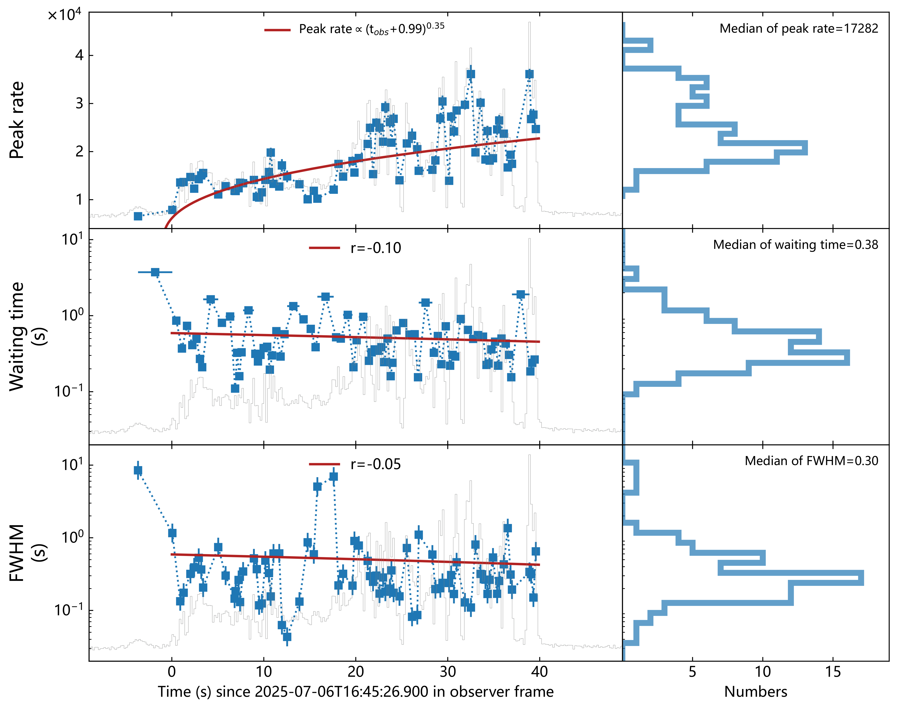
图注：\(\textbf{Pulse distribution diagnostics for GRB 250706B/C.}\) The pulse width (FWHM) distribution, waiting-time distribution, and peak-rate distribution quantify the short-timescale variability of GRB 250706B/C. These histograms show broad scatter in pulse widths and inter-peak intervals, and a broad peak-rate distribution, indicating that the prompt variability is dominated by stochastic structure rather than a single preferred timescale or amplitude.
对应解读：对应“建议重点查看的图表”第4项以及“关键图表逐图导读”中关于FWHM分布和等待时间分布的解读。
入选理由：该图直接给出脉冲宽度FWHM、相邻脉冲等待时间和峰值率分布，是检验论文核心结论“中位FWHM约0.30 s、等待时间约0.38 s、短时标结构呈随机宽分布”的最关键证据。相比其他候选图，它最直接支撑79个以上脉冲统计可靠性和局部随机性判断。
来源与置信度：\(arxiv_source\)；high；\(arxiv_source\) / main.tex:figure[2]
Fig04
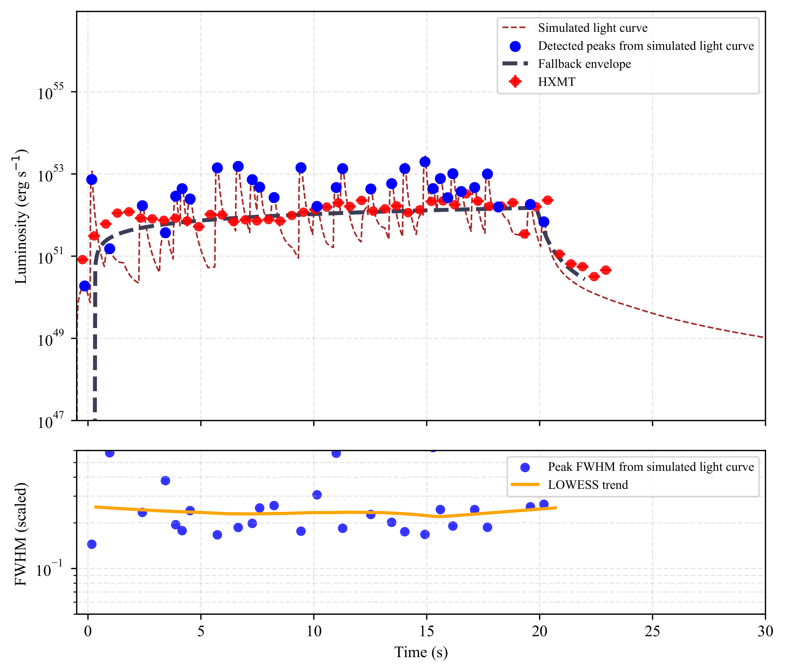
图注：\(\textbf{Simulation of prompt emission variability under a mass-driven scenario for GRB 250706B/C.}\) The rising luminosity envelope, $L(t) \propto t^{0.5}$, results from shells ejected at roughly constant intervals with increasing mass, $m \propto t^{\beta}$, due to fallback accretion. Although the FWHM is not explicitly shown, the model predicts roughly constant characteristic pulse widths with no strong secular evolution across the burst; individual pulses fluctuate around this baseline, consistent with the observed ensemble behavior. The model separates the long-timescale envelope evolution from the short-timescale pulse variability, consistent with the statistical stationarity of the measured pulse widths and waiting times. This realization shows that a mass-driven process can reproduce the secular luminosity rise and the fine-scale temporal variability of the burst.
对应解读：对应“模型拟合”与“详细解读”中关于fallback供给调控大尺度上升包络、快速脉冲由内部随机耗散产生的双层时间结构解释。
入选理由：该图展示质量驱动情景下的prompt变率模拟，包含近似L(t)∝\(t^0\).5的上升包络，并说明脉冲宽度和等待时间可在整体包络演化中保持近似平稳，正好支撑日报中对fallback-regulated accretion物理图像的解读。
来源与置信度：\(arxiv_source\)；high；\(arxiv_source\) / main.tex:figure[4]
Fig03
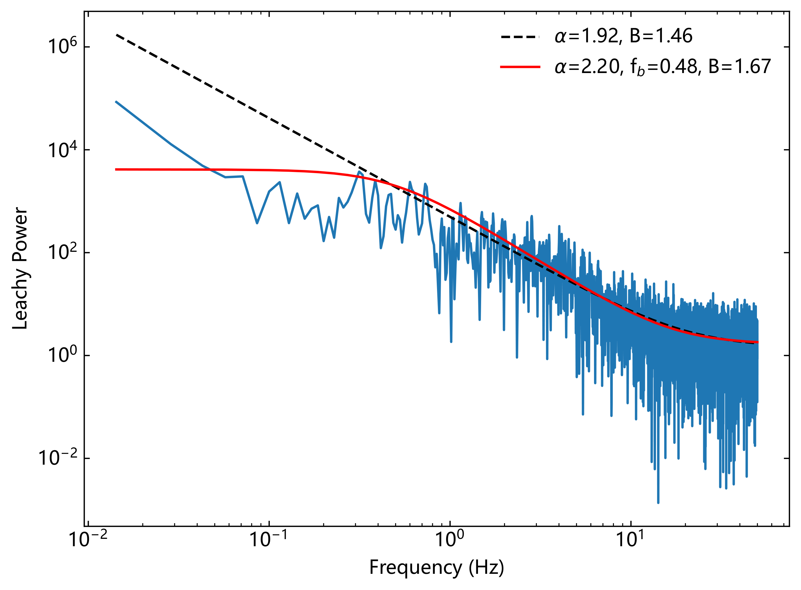
图注：\textbf{Power spectral density of GRB 250706B/C with the light curve from $T_0$-10 s to $T_0$+60 s.} The black dashed line and red line are thr fitting of a simple power-law plus the white-noise constant and bent power-law \(\citep{2016A&A...589A..98G}.\) No narrow feature is detected significantly.
对应解读：对应“建议重点查看的图表”第7项最短可变时标诊断，以及模型拟合中关于短时标随机变率与无显著窄频特征的讨论。
入选理由：该图给出GRB 250706B/C的功率谱密度及简单幂律、弯折幂律和白噪声模型拟合，可用于判断短时标变率是否呈宽带随机结构而非特定周期或窄频特征。虽然图注未直接标出约11 ms最短可变时标，因此相关性弱于脉冲统计图，但仍是时间域诊断的重要补充。
来源与置信度：\(arxiv_source\)；high；\(arxiv_source\) / main.tex:figure[3]
强相关工作
这篇工作与 GRB prompt 时间结构研究直接相关，尤其是关于脉冲宽度、等待时间、最短可变时标和能量依赖的文献。可检索关键词包括 “GRB pulse width energy dependence”, “GRB minimum variability timescale”, “Norris pulse model”, “GRB waiting time distribution”, “prompt emission variability central engine”。这些工作提供了判断 GRB 250706B/C 是否异常的统计背景。
它也与 collapsar 和 fallback accretion 理论相连。应检索 “collapsar fallback accretion gamma-ray burst”, “fallback-fed GRB engine”, “long GRB central engine accretion history”, “high luminosity low luminosity GRB fallback”。理论上存在张力的地方是：fallback 晚期常被认为给出较低功率或长时标活动，但观测到的高光度事件要求考虑喷流效率、准直角、磁通量积累和辐射效率。反向观点可能会把该暴解释为普通高光度长暴的复杂内部耗散，而不需要 fallback。
与相似观测相比，这篇文章的特色不是单纯发现明亮长暴，而是把高光度、\(\sim11\,\mathrm{ms}\) 可变性、79 个以上脉冲、能量近似无关宽度和 \(F(t)\propto (t-t_0)^{0.47\pm0.01}\) 包络联系起来。后续若有 Fermi/GBM、Swift/BAT、Konus-Wind 或 GECAM 的联合分析，将有助于验证能谱和能段选择是否影响这些结论。
相似工作：
- https://arxiv.org/abs/2606.09229
- https://ui.adsabs.harvard.edu/search/q=GRB%20pulse%20width%20energy%20dependence
- https://ui.adsabs.harvard.edu/search/q=GRB%20minimum%20variability%20timescale%20prompt%20emission
基础理论 / 方法工作：
- https://ui.adsabs.harvard.edu/search/q=collapsar%20gamma-ray%20burst%20Woosley%201993
- https://ui.adsabs.harvard.edu/search/q=MacFadyen%20Woosley%201999%20collapsar
- https://ui.adsabs.harvard.edu/search/q=gamma-ray%20burst%20pulse%20Norris%20model
相反观点 / 张力线索：
- https://ui.adsabs.harvard.edu/search/q=fallback%20accretion%20low%20luminosity%20gamma-ray%20bursts
- https://ui.adsabs.harvard.edu/search/q=magnetar%20central%20engine%20long%20gamma-ray%20burst%20prompt%20emission
- https://ui.adsabs.harvard.edu/search/q=GRB%20prompt%20emission%20internal%20shocks%20variability
5. Old pulsar wind nebulae and the role of the thermal filaments
- 来源：arXiv / astro-ph.HE
- 链接：https://arxiv.org/abs/2606.08355v1
- 作者：N. Bucciantini, Y. Batini, B. Olmi
- 评分：novelty 7/10，importance 8/10，relevance 9/10，final 9.05/10
- 推荐理由：直接讨论老年PWN作为高能伽马射线源及CTA/CTAO背景下的建模问题，改进热丝状结构对回响阶段动力学影响的模型，相关性很高。
中文题目：Old pulsar wind nebulae and the role of the thermal filaments
做了什么：本篇论文已通过推荐筛选，但自动详细解读生成失败。可先根据题目和摘要判断阅读优先级：Old pulsar wind nebulae are among the foremost galactic high-energy gamma-ray sources. However we still lack a robust approach to their modeling, especially in the light of forthcoming high-energy observatories like Astri or CTAO. Part of the problem is due to the complex interaction that characterizes these systems. Understanding this complexity has then become mandatory for further advancements. We aim to develop a new approach to investigate the role the thermal thick layer of massive filaments, seen in objects like the Crab nebula and 3C 58, but likely present in all pulsar wind nebulae, can exert on the dynamics of the late reverberation phase, and compare results with standard approaches that neglect such a layer. A new formulation of the one-zone thin-shell plus Lagrangian formalism, developed in a series of previous papers, is here extended to the case of a thick layer of filamentary ejecta, complementing our former work, mostly focused on the initial free-expansion phase. We compare the dynamics of reverberation with and without the presence of filaments, and show that in the former case reverberation may be substantially anticipated and the following compression takes much longer. The total compression of the system does not seem to change much, and the qualitative behavior is preserved. Our results suggest that the presence or absence of an extended filamentary layer might affect the duration of both the free-expansion phase (shortening it) and the following compression phase during reverberation (lengthening it), but it does not change much the overall compression of the nebula. While this changes the relative number of systems in these two phases, and their contribution to high-energy emission, some peculiar radiative effects associated with the level of compression in old systems, like the "super-efficiency", might not be much affected.
为什么重要：这篇论文在今日候选中通过了本地推荐阈值，说明它与当前高能天体物理兴趣方向或质量标准较匹配；详细内容建议优先查看原文摘要、结论和图表。
理论 / 观测 / 仪器方法价值：由于 LLM 摘要 JSON 解析失败，本节保留为安全占位，不编造论文未确认的公式、图号或链接。
为什么应该关注：日报仍保留这篇论文，是为了避免单篇摘要失败导致整份日报缺失。请把它作为需要人工快速复核的高优先级候选。
展开详细解读：文章讲解、背景、理论、重点章节、图表与相关工作
文章详细讲解
本文的科学问题可以概括为：在老年 PWN 的 reverberation 阶段，热的高密度丝状层是否只是局部结构，还是会系统性改变一维/单区动力学模型给出的时间尺度和能量演化？作者的出发点是已有 one-zone thin-shell plus Lagrangian formalism 已能描述标准 PWN-SNR 相互作用，但它在处理 Crab、3C 58 这类具有显著丝状物的对象时缺少质量分布和厚层惯性的自由度。
方法上，论文把过去主要用于早期自由膨胀阶段的形式主义扩展到晚期 reverberation。标准模型中，PWN 外边界扫起的质量集中在薄壳；新模型中，外层存在一个厚的、可被 PWN 穿透或包含在动力学区域内的 filamentary ejecta layer。作者比较“无厚层的 canonical thin-shell”与“含厚 homogeneous fully developed filamentary layer”的演化，重点跟踪 \(R_{\rm pwn}\)、外壳质量、\(t_{\rm beg,rev}\) 和 \(E_{\rm pwn}\)。图 2 还把比较推广到 PWN-SNR 特征参数平面，显示模型族而非单一示例。
关键结果应按两个层次理解。局部演化层面，图 3 显示在模型 C0、S1、S4 中，厚丝状层模型相对标准薄壳模型会使 reverberation 开始时刻提前，并使随后的压缩阶段更长。种群层面，图 2 用 \(\Delta t_{\rm beg,rev}\) 和 \(\Delta E_{\rm pwn}\) 表示厚壳与薄壳在银河系预期 PWN-SNR 参数区域内的系统差异；这支持摘要中的判断：丝状层会改变不同演化阶段中源的相对数量及其高能辐射贡献。
同时，论文并未声称厚丝状层会显著改变所有可观测性质。摘要特别强调，系统的总压缩程度似乎变化不大，定性行为仍被保留。因此若某些辐射效应主要由最大压缩程度控制，例如老年系统中与压缩相关的 super-efficiency，那么厚层的影响可能没有对时间尺度的影响大。换言之，这篇论文的主要修正是“时钟”和“阶段占空比”，而不是完全重写 reverberation 的动力学序列。
局限性也很明确。厚层被理想化处理，真实丝状物是三维、非均匀、可能磁化并受流体不稳定性控制的结构；单区模型不能解析丝状物内部冲击、湍流、热传导或辐射冷却差异。图示中的 homogeneous fully developed filamentary layer 只是可计算近似，不应过度解释为对 Crab 或 3C 58 的逐像素拟合。下一步应核查论文中对丝状层质量、厚度参数、密度分布、SNR 抛射物剖面 \((\delta,\omega)\) 的敏感性测试，并与二维/三维 MHD 模拟或具体源的多波段约束相连接。
背景知识
脉冲星风星云（PWN）是年轻中子星把自转能通过相对论性磁化风注入周围超新星遗迹（SNR）后形成的非热等离子体泡。经典图像中，中心脉冲星风在终止激波处减速，形成同步辐射发亮的电子-正电子等离子体；外侧则是超新星抛射物和激波结构。年轻阶段的 Crab 星云常被当作模板，但老年 PWN 的动力学并不是“Crab 简单放大或变暗”，因为 SNR 反向激波回撞、外部介质压力、抛射物混合和辐射冷却都会改变星云半径、磁场与粒子能谱。
本文关注的是“老年 PWN”在 reverberation 阶段的动力学。reverberation 通常指 SNR 反向激波从外层减速后向内传播并压缩 PWN 的阶段。这个阶段对 TeV 伽马射线尤其重要：电子在较弱磁场中可长期存活，通过逆康普顿散射产生高能辐射；若压缩增强磁场或改变粒子能谱，还可能出现所谓高辐射效率或“super-efficiency”现象。Astri、CTAO 等高能观测设施将增加此类源的样本，因此仅靠过度简化的单区模型会限制源年龄、能量预算和环境密度的解释。
论文的特定动机是：传统 one-zone thin-shell PWN-SNR 模型通常把 PWN 与冷/热抛射物之间的相互作用压缩成一个几何薄壳边界，而忽略了热的、质量可观的丝状结构。Crab 和 3C 58 中可见大量热/光学丝状物，它们不是质量可忽略的装饰，而可能是 Rayleigh-Taylor 不稳定、抛射物混合和 PWN 压力共同塑造的高密度结构。本文把这些丝状物理想化为一个有厚度的 filamentary layer，研究它对晚期反向激波回撞和压缩过程的影响。
一个常见误区是把“丝状物”理解为只影响辐射形态、不影响整体动力学。若丝状层含有显著质量，它会改变 PWN 外边界附近的惯性载荷、动量交换和反向激波遇到 PWN 的时间，因此会影响 reverberation 开始时间和压缩持续时间。另一个误区是认为厚壳模型一定会大幅改变最大压缩比；本文摘要反而指出，总压缩程度可能变化不大，主要改变的是时间结构：自由膨胀阶段缩短，随后的压缩阶段拉长。
还应注意，这篇论文不是直接用观测图像拟合某一个 PWN 的多波段谱，而是扩展已有 one-zone thin-shell plus Lagrangian formalism 的动力学框架。它的价值在于提供一种半解析/低维模型，用来解释种群层面的阶段比例、老年 PWN 的高能贡献以及在不同 SNR 参数下厚丝状层是否会造成系统性偏差。阅读时应避免把模型中的“均匀厚层”“完全发展的丝状层”等近似直接等同于真实三维 MHD 结构。
基础理论 / 方法脉络
PWN 的基本动力学来自能量注入与外部介质约束的竞争。中心脉冲星的自转光度随时间衰减，注入到 PWN 的相对论性流体中，形成内压；PWN 半径的增长则需要对周围超新星抛射物做功并扫起质量。早期自由膨胀阶段，外层 SNR 仍在向外膨胀，PWN 通常也向外扩张；当反向激波返回并与 PWN 相互作用后，PWN 会进入压缩、振荡或再膨胀的 reverberation 阶段。
标准薄壳模型把 PWN 内部视为单区高压泡，把被扫起的抛射物集中在外边界薄壳上。这个近似的优点是可用少数常微分方程追踪半径、壳层质量、速度和能量；缺点是它把真实的混合层、丝状物和不稳定界面都折叠成单个界面条件。本文的扩展思想是：在 PWN 与 SNR 之间不只有一个零厚度边界，而存在由高密度热丝状物构成的厚层，其中部分物质可穿入 PWN，并在 reverberation 后逐渐积累到边界薄壳。
从物理量看，读者应关注 PWN 半径 \(R_{\rm pwn}\)、反向激波半径 \(R_{\rm rs}\)、PWN 总能量 \(E_{\rm pwn}\)、壳层或丝状层质量 \(M_{\rm sh}\)、脉冲星注入光度 \(L(t)\)、SNR 特征质量 \(M_{\rm ch}\) 和特征半径 \(R_{\rm ch}\)。图 2 和图 3 的坐标已经表明，论文以无量纲或特征化变量比较模型族，而不是只给单个源的绝对数值。厚层参数如厚度比例或文中示例的 \(X=0.6\) 应被理解为控制丝状层空间延展和质量分布的模型参数。
reverberation 开始时间 \(t_{\rm beg,rev}\) 是本文最核心的诊断量之一。若厚丝状层使有效边界更早与反向激波发生动力学耦合，则 \(t_{\rm beg,rev}\) 会相对标准薄壳模型提前。图 2 上半部分定义的 \(\Delta t_{\rm beg,rev}=t_{\rm beg,rev}^{\rm thin}-t_{\rm beg,rev}^{\rm thick}\) 正是用来判断这种提前是否在银河系 PWN-SNR 典型参数区域内普遍存在。若该量为正，表示厚层模型更早进入 reverberation。
理论上还存在几个重要退化。第一，提前 reverberation 可能由厚丝状层导致，也可能由较高环境密度、较低爆炸能量或不同抛射物密度剖面导致。第二，压缩持续时间受壳层质量、PWN 内压、SNR 反向激波压力共同控制，单独改变丝状层厚度可能与改变初始自转能或抛射物质量相混淆。第三，若只看当前 PWN 半径，早进入长压缩与晚进入短压缩可能产生类似观测尺寸，因此需要结合年龄、谱能量分布、磁场估计和 SNR 尺寸共同诊断。
公式与推导
可从脉冲星自转能注入开始建立阅读这篇论文所需的推导链。常用自转光度写作
其中 \(L_0\) 是初始光度，\(\tau_0\) 是自转衰减时标，\(n\) 是 braking index。该式给出 PWN 内能增长的源项；若论文采用不同记号，应把它映射到相同的注入函数。
PWN 单区能量方程可写成
其中 \(P_{\rm pwn}\) 为星云压强，\(V_{\rm pwn}=4\pi R_{\rm pwn}^3/3\)，\(\Lambda_{\rm rad}\) 表示辐射或非绝热损失；纯动力学模型中常先忽略或参数化该项。若 PWN 内部近似为相对论气体，
对应绝热指数 \(\gamma=4/3\)。这一步连接了能量注入、半径演化和压缩时的压力反馈。
薄壳动量方程的核心形式可概括为
其中 \(M_{\rm sh}\) 是边界壳层质量，\(P_{\rm ext}\) 是外部 SNR 或反向激波后的有效压力，\(v_{\rm rel}\) 表示新扫入物质相对壳层的速度项。不同 thin-shell 形式对最后一项的写法可能不同，阅读时应核对作者如何处理动量加载。
扫质量项通常来自抛射物密度分布：
其中同胚膨胀抛射物速度近似为 \(v_{\rm ej}=R/t\)。若 \(\dot R_{\rm pwn}>v_{\rm ej}\)，PWN 会扫起新物质；若进入压缩或反向流动阶段，符号和适用条件需要特别检查。
SNR 抛射物常用内外双幂律剖面表征：
其中 \(\delta\) 和 \(\omega\) 分别是内外层幂律指数。图 3 图注提到反向激波轨迹示例采用 \(\delta=0,\omega=12\)，因此读图时应意识到反向激波时标不是任意曲线，而依赖这种 SNR 结构假设。
厚丝状层可用一个分布质量而非零厚度质量来概念化，例如
其中 \(R_1\) 与 \(R_2\) 描述丝状层内外边界，\(\rho_{\rm fil}\) 为热丝状物的有效密度。若论文设定均匀厚层或厚度比例 \(X\)，应将该积分化为相应的代数质量，并比较它进入 \(M_{\rm sh}\) 的方式。
reverberation 开始的操作性条件可写成
或等价的动力学接触条件。本文图 2 使用的时间差为
若 \(\Delta t_{\rm beg,rev}>0\)，厚层模型更早开始 reverberation；这正是摘要所称“substantially anticipated”的数学读法。
压缩程度可用最小半径或体积压缩因子表征：
若本文结论说总压缩变化不大，应对应检查 \(C_R\) 或 \(R_{\rm pwn,min}\) 在厚层/薄壳之间的差异，而不是只看压缩阶段持续时间。
能量差诊断对应图 2 下半部分：
这里要注意两个模型的 \(t_{\rm beg,rev}\) 本身可能不同，因此能量差混合了注入时间差、绝热损失差和动力学边界差。若要进一步联系辐射，至少还需磁能分数和粒子谱演化，不能把 \(\Delta E_{\rm pwn}\) 直接等同于伽马射线光度差。
模型拟合 / 应用方法
这篇论文更像动力学模型比较和参数扫描，而不是传统意义上的数据拟合。被“拟合”或调节的对象主要是 PWN-SNR 系统的理论参数：爆炸能量、抛射物质量、外部介质密度、抛射物密度幂律指数、脉冲星自转注入参数、丝状层厚度或质量分布等。输出诊断量则包括 \(t_{\rm beg,rev}\)、\(E_{\rm pwn}\)、\(R_{\rm pwn}(t)\)、最大压缩时刻和壳层质量演化。
若要把本文框架转化为观测拟合，似然可以围绕观测半径、年龄、SNR 尺寸、PWN/SNR 相对位置、多波段光度和谱能量分布构造。例如可用 \(\chi^2=\sum_i [y_i-y_{\rm model}(\theta)]^2/\sigma_i^2\) 比较模型与观测量，其中 \(\theta\) 包括 SNR 和 PWN 参数；若数据含上限、系统误差或非高斯距离误差，则应改用层级贝叶斯或包含截断项的似然。本文当前结果更适合看作先验物理模型库，而非已经给出某个源的后验分布。
残差诊断应分阶段进行。半径残差需要区分自由膨胀、刚进入 reverberation、压缩中期和最大压缩附近，因为厚层模型的主要影响是相位提前和压缩延长；若只在单一年龄截面比较半径，可能误判模型优劣。能量残差也要谨慎，因为 \(\Delta E_{\rm pwn}\) 是在各自 reverberation 开始时刻定义的，混合了时间差和动力学差。质量残差则应检查厚层到薄壳的质量转移是否产生不物理的不连续。
参数退化是该模型的核心风险。较高 ISM 密度、较低 SNR 爆炸能量或较小抛射物质量都可能让反向激波更早返回，从而模拟厚丝状层导致的 reverberation 提前；较高壳层质量或较低 PWN 内压都可能延长压缩过程，从而与丝状层惯性效应混淆。脉冲星初始自转能和 braking index 会改变 \(E_{\rm pwn}\) 与半径演化，也会与厚层参数耦合。因此真正拟合时需要联合约束 SNR 尺寸、年龄、环境密度和脉冲星当前 \(P,\dot P\)。
系统误差主要来自几何和微物理近似。one-zone 模型忽略非球对称、脉冲星本征运动、SNR 环境梯度、三维 Rayleigh-Taylor 结构、磁场拓扑和粒子输运。丝状层被均匀化后，其真实 clumping factor、热压、冷却和破碎过程都被折叠为少数参数。若将模型用于 CTAO/ASTRI 时代的 TeV 源解释，还必须把动力学输出连接到粒子演化方程、同步辐射/逆康普顿损失和仪器选择效应，否则“源数比例改变”不能直接变成“可探测源数改变”。
较好的模型诊断流程是：先用薄壳模型建立基准；再加入厚丝状层，比较 \(\Delta t_{\rm beg,rev}\)、最小半径、压缩持续时间和 \(\Delta E_{\rm pwn}\)；然后对 SNR 环境参数做扰动，检查厚层效应是否仍显著；最后将代表模型投影到可观测量，如角半径、年龄、X 射线/TeV 尺度差和估计磁场。若厚层模型只改善时间尺度但恶化能量或尺寸一致性，就说明还需更复杂的多区或 MHD 模型。
重点章节 / 结果段落怎么读
-
引言与动机部分：应重点找三条线索。第一，作者如何定义 old PWN 和 late reverberation；第二，为什么 Crab、3C 58 的热丝状物可推广为一般 PWN 的潜在成分；第三，传统薄壳模型在何处会系统性漏掉质量和惯性。阅读时把“观测到的丝状物”和“模型中的均匀厚层”区分开。
-
模型形式主义部分：这是最需要慢读的章节。应逐项记录状态变量，如 \(R_{\rm pwn}\)、\(E_{\rm pwn}\)、壳层质量、丝状层内外边界、反向激波轨迹；再记录方程中每一项代表注入、绝热做功、外压、扫质量还是厚层质量转移。若作者沿用前作公式，要回到引用的系列论文核查边界条件和无量纲化定义。
-
厚丝状层假设与参数选择部分：应检查厚度参数、密度分布、是否 homogeneous、是否 fully developed、以及丝状物质量相对 SNR 抛射物质量的归一化。这里决定了论文结论的适用范围。尤其要看图 2 中 \(X=0.6\) 或类似参数是否只是基准选择，还是经过系统扫描。
-
结果：reverberation 开始时间与能量差。阅读图 2 对应段落时，不要只看作者文字结论，要明确 \(\Delta t_{\rm beg,rev}\) 和 \(\Delta E_{\rm pwn}\) 的符号定义。正负号若读反，会把“提前”误解成“延迟”。还应检查黑色椭圆内是否存在符号翻转区域，这决定结论是否普遍。
-
结果：代表模型时间演化。阅读图 3 对应段落时，以 C0、S1、S4 为三个案例逐一记录：厚层模型的黄色点相对薄壳是否左移；压缩最低点是否延后；最小半径是否接近；壳层质量增长是否更平滑或更早。这样可以把摘要中的三句结论拆成可检验的图上事实。
-
讨论与结论部分：重点看作者如何限定“总压缩不变”和“高能辐射贡献改变”的范围。动力学模型本身不一定包含完整多波段辐射计算，因此任何关于 ASTRI/CTAO 可观测性的说法都应被理解为对源阶段比例和能量预算的推论，而非已经完成的仪器灵敏度预测。
建议重点查看的图表
-
演化示意图：重点看论文图 1 这类图如何定义自由膨胀、reverberation 开始、压缩进行和最大压缩四个阶段。不要把示意图当作定量结果，但要用它确认“丝状物先穿入 PWN、后在边界薄壳积累”的物理叙事。
-
参数平面比较图：重点看图 2 中黑色椭圆代表的预期银河系 PWN-SNR 分布区域、C0/S# /L# 模型点的位置，以及 \(\Delta t_{\rm beg,rev}\) 的正负和大小。上面板应回答厚层是否普遍提前 reverberation；下面板应回答开始 reverberation 时 PWN 能量是否系统性偏高或偏低。
-
单个模型的时间演化图：重点看图 3 的 \(R_{\rm pwn}/R_{\rm ch}\)、外壳质量相对 \(M_{\rm ch}\)、反向激波轨迹和黄色点标出的 \(t_{\rm beg,rev}\)。比较实线厚层模型和虚线薄壳模型时，应同时看开始时间、压缩持续时间和最小半径，而不是只看某一时刻的半径差。
-
反向激波轨迹诊断：若论文给出或隐含 \(R_{\rm rs}(t)\)，应检查其与 PWN 半径交会的定义是否一致。反向激波的时标对 SNR 爆炸能量、抛射物质量、外部介质密度和密度剖面敏感，可能与厚层效应退化。
-
壳层质量/丝状层质量演化：重点看质量何时从厚层转移到边界薄壳、是否出现不连续跳变、以及质量增加是否与压缩阶段延长相关。若只有标准化质量曲线，应核查归一化到 \(M_{\rm ch}\) 后不同模型之间是否仍可直接比较。
-
能量内容差异图或表：重点看 \(\Delta E_{\rm pwn}=E_{\rm pwn}^{\rm thick}-E_{\rm pwn}^{\rm thin}\) 的符号分界线。能量差并不等同于辐射亮度差，还要结合磁场、粒子谱和辐射损失模型。
-
参数扫描或表格：检查 C0、S1、S4、L# 等模型序列分别改变了哪些物理参数。若没有明确残差图，参数扫描本身就是模型诊断：看结论是否只依赖少数极端点，还是在黑色椭圆代表的典型种群区域内稳定。
关键图表逐图导读
图 1：这是一张物理过程示意图，不是数值曲线。四个面板按演化阶段组织：初始自由膨胀阶段中，SNR 壳层和反向激波仍存在，高密度丝状物从外层穿入或嵌入 PWN；当 PWN 到达反向激波时定义 reverberation 开始；之后反向激波消失或与界面合并，丝状物质在 PWN-SNR 边界积累成薄壳；最大压缩时大部分丝状物质量已进入边界壳。读这张图的重点是弄清作者为何需要“厚层到薄壳”的质量转移图像，陷阱是不要从面板面积或形状推断定量压缩比。
图 2：这张图是种群/参数空间层面的核心诊断。横纵轴应是 PWN-SNR 特征平面中的模型参数坐标，黑色椭圆表示预期银河系 PWN-SNR 种群的 98% 区域；红点 C0、黄色三角 S#、品红方块 L# 是表格中的模型序列。上面板颜色或等值信息表示 \(\Delta t_{\rm beg,rev}=t_{\rm beg,rev}^{\rm thin}-t_{\rm beg,rev}^{\rm thick}\)，若为正说明厚层提前 reverberation。下面板表示 \(\Delta E_{\rm pwn}=E_{\rm pwn}^{\rm thick}-E_{\rm pwn}^{\rm thin}\)，绿色线分隔正负差异。读图时要同时看模型点是否落在黑色椭圆内；若某结论只由椭圆外极端点支撑，其种群意义就较弱。
图 3：这张图展示具体模型 C0、S1、S4 的时间演化，是验证摘要结论的关键。蓝色曲线为 PWN 半径，红色曲线为外 PWN 壳层质量，虚线代表标准 one-zone thin-shell，实线代表含厚均匀完全发展丝状层，黄色点标出 \(t_{\rm beg,rev}\)，绿色点线为 \(\delta=0,\omega=12\) 的 SNR 反向激波轨迹。横轴通常应按特征时间或模型时间归一化，纵轴对半径用 \(R_{\rm ch}\)、对质量用 \(M_{\rm ch}\) 归一化。读图时先看黄色点是否在实线模型中左移，再看蓝色曲线达到最小半径的时间跨度是否变长，最后看最小半径本身是否与虚线相近。
图 3 的残差式读法是把实线和虚线当作两个模型预测的差值，而不是独立观测。对于半径，关键残差是 \(R_{\rm pwn}^{\rm thick}-R_{\rm pwn}^{\rm thin}\) 随时间的符号变化：提前 reverberation 时早期可能出现相位差，压缩晚期则可能重新接近。对于质量，关键是厚层模型中红色实线是否更早或更平滑地增加，说明质量加载并非瞬时薄壳扫入。陷阱是：相位差会让同一物理阶段被不同时间截面对比，最好按阶段而非绝对时间比较。
若论文还有表格或补充图，应把图 2 与图 3 互相校验。图 2 给的是模型族中的整体趋势，图 3 给的是少数代表模型的时间过程；只有当代表模型位于图 2 的典型区域且其演化差异符合图 2 的符号，论文的“厚层提前、压缩延长、总压缩近似不变”才形成闭环证据。
论文原图 / 可嵌入图片
Fig03
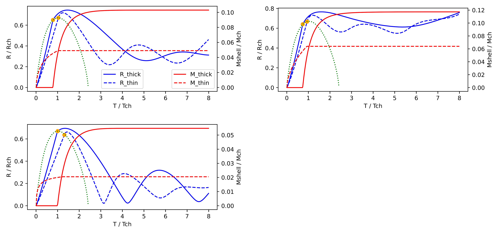
图注：Evolution of the PWN radius (blue) and mass on the outer PWN shell (red), for both the standard one-zone thin-shell formalism dashed), and in the case of a thick homogeneous fully developed filamentary layer (solid). The yellow dots represent the moment when reverberation begins $t_{\rm beg,rev}$. From top to bottom: models \(\texttt{C0,S1,S4}.\) The dotted (green) curve describe the trajectory of the reverse shock for an SNR with $\delta=0$ and $\omega=12$. The characteristic mass is by definition the mass $M_{\rm ch}$ of the SNR ejecta, while the characteristic radius $R_{\rm ch}$ can be derived from the SNR energy, ejecta mass and ISM density \(\citep{Bandiera_Bucciantini+21a}.\)
对应解读：对应模型比较与逐图导读中应重点检查的动力学演化图：PWN 半径、外壳质量、反向激波轨迹以及 reverberation 开始时刻。
入选理由：这张图直接展示论文核心结论：含厚丝状层模型相对于标准薄壳模型会提前进入 reverberation，并改变随后的压缩演化。坐标中同时给出 PWN 半径、外壳质量、反向激波轨迹和不同模型 C0/S1/S4 的对比，是判断动力学差异和压缩阶段持续时间的最关键图。
来源与置信度：\(arxiv_source\)；high；\(arxiv_source\) / \(article_2.tex\):figure[3]
Fig02
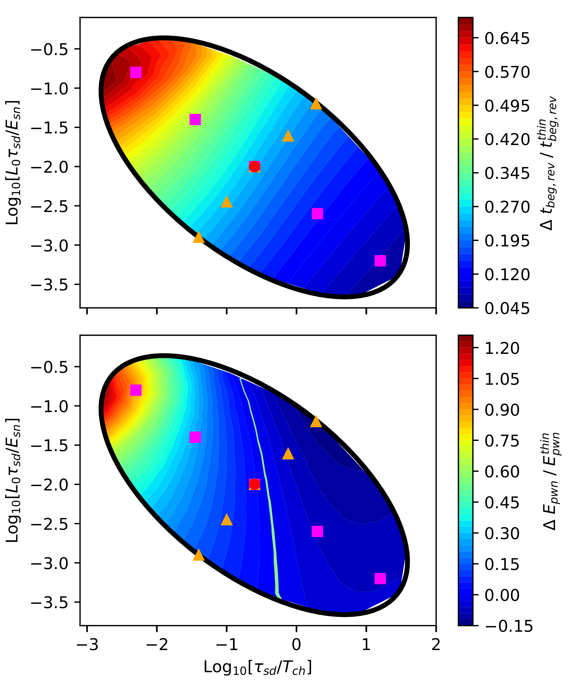
图注：Comparison of canonical thin-shell models and thick-shell ones ($X=0.6$) for the PWN-SNR population. The black ellipses represents the region in the characteristic plane containing 98\% of the expected Galactic PWN-SNR population. Points represent the models of Tab.~\(\ref{table:1}\): the red dot at the center is \(\texttt{C0},\) yellow tringles represent models of the sequence \(\texttt{S\#},\) and magenta squares those of \(\texttt{L\#}.\) The upper panel represents the relative difference in the time at which reverberation begins $\Delta t_{\rm beg,rev} = t_{\rm beg,rev}^{\rm thin}-t_{\rm beg,rev}^{\rm thick}$. The lower panel represents the relative difference in the energy content of the PWN at the time at which reverberation begins $\Delta E_{\rm pwn} = E_{\rm pwn}^{\rm thick}-E_{\rm pwn}^{\rm thin}$. The green line separates systems with positive difference from systems with negative difference.
对应解读：对应建议重点查看的模型比较、参数空间诊断和系统性差异图：薄壳与厚壳模型在 Galactic PWN-SNR 参数平面中的差别。
入选理由：这张图把厚丝状层对整个 PWN-SNR 模型族的影响量化为 reverberation 开始时间差和能量差，并标出预期银河系 PWN-SNR 分布区域。它比单个案例更适合支撑论文关于总体种群影响的结论。
来源与置信度：\(arxiv_source\)；high；\(arxiv_source\) / \(article_2.tex\):figure[2]
Fig01
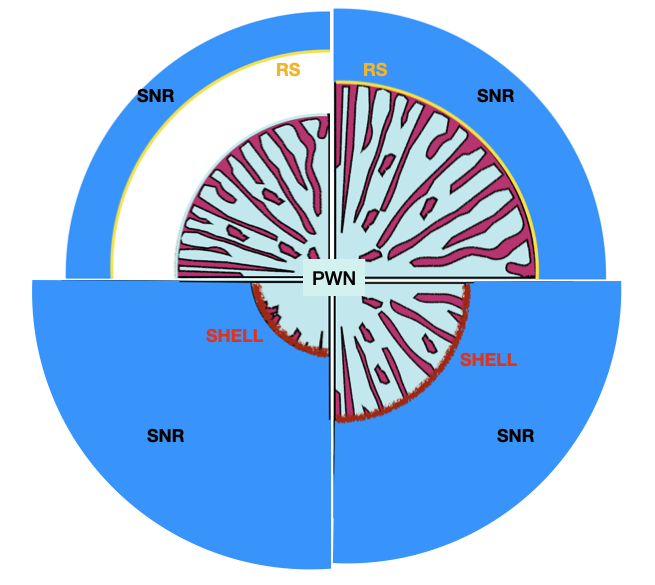
图注：Schematic evolution of a PWN inside a SNR in the presence of an extended layer of high density filaments that penetrate the PWN itself. Top-left panel: initial structure in the free expansion phase, an SNR shell is present bounded on the inside by a reverse shock (RS), while a high density PWN with extended high density fingers is expanding outward. Top-right panel: the moment when reverberation begins, and the PWN reaches the reverse shock. Bottom-right panel: compression of the PWN by the SNR following reverberation: the reverse shock has disappeared, and now matter in the filaments accumulates in a thin shell at the boundary between PWN and SNR. Bottom-left panel: the compression of the PWN has reached its maximum, and almost all matter in the filaments has now been accumulated in the thin shell, { even if some filaments might still be present in the central region (not shown in figure)}.
对应解读：对应论文物理图像与方法框架说明：含高密度热丝状层的 PWN-SNR 演化示意。
入选理由：这张示意图说明厚丝状层如何穿入 PWN、在 reverberation 后积累到边界薄壳，并最终参与最大压缩。虽然不是定量诊断图，但有助于理解论文为何需要从标准薄壳模型扩展到厚丝状层模型。
来源与置信度：\(arxiv_source\)；high；\(arxiv_source\) / \(article_2.tex\):figure[1]
强相关工作
基础工作应沿三条路径检索。第一是 PWN-SNR 相互作用的经典薄壳和单区模型，包括脉冲星能量注入、PWN 自相似膨胀、SNR 反向激波回撞和 reverberation 的半解析处理。第二是 Bucciantini、Bandiera、Olmi 等作者前序论文中建立的 one-zone thin-shell plus Lagrangian formalism，因为本文明确是在该系列基础上扩展厚 filamentary layer。第三是 Crab、3C 58 等源的光学/红外/X 射线丝状物观测与质量估计，用来判断模型中“热厚层”的物理合理性。
相似工作还包括二维/三维 MHD 或流体模拟中 Rayleigh-Taylor 不稳定导致的 PWN-抛射物混合，以及反向激波压缩 PWN 后的非球对称演化。这些工作通常能解析丝状物和界面不稳定，但参数扫描成本高；本文的低维模型则牺牲空间细节换取种群参数空间覆盖。阅读时可把它与 MHD 模拟互补理解：MHD 模拟检验机制，one-zone/Lagrangian 模型提供快速预测和源群统计。
潜在张力线索主要在于“丝状物是否足够普遍且质量足够大”。Crab 中的丝状物非常醒目，但并非所有 PWN 都有同等清晰的热丝状结构；观测选择效应、年龄、吸收和环境差异会影响可见性。因此应检索不同年龄 PWN 的光学丝状物质量、PWN/SNR 混合证据和热 X 射线约束，判断本文把此类厚层视为普遍成分是否合理。
另一个张力方向是辐射解释。老年 PWN 的 TeV 亮度、X 射线暗弱和所谓 super-efficiency 常被不同模型解释为低磁场、粒子逃逸、压缩再增亮或距离/年龄估计误差。本文摘要认为最大压缩程度变化不大，因此与压缩程度相关的辐射效应可能不受厚层强烈影响；这一点应与专门的多波段谱演化模型比较，检索关键词可包括 reverberation、relic PWN、TeV halos、super-efficiency、PWN compression 和 reverse shock interaction。
相似工作：
（未提供）
基础理论 / 方法工作：
（未提供）
相反观点 / 张力线索：
（未提供）
6. Measuring the radii of merging neutron stars with asteroseismology
- 来源：arXiv / astro-ph.HE
- 链接：https://arxiv.org/abs/2606.09621v1
- 作者：Duncan Neill, William G. Newton, Jeremy W. Holt, Christian Drischler, Jérôme Margueron, David Tsang
- 评分：novelty 8/10，importance 8/10，relevance 8/10，final 9.00/10
- 推荐理由：Strong neutron-star/multimessenger relevance: proposes using crust-core asteroseismic modes and resonant shattering/dynamical tides to infer merger neutron-star radii, with potentially important EOS constraints.
中文题目：Measuring the radii of merging neutron stars with asteroseismology
做了什么：本篇论文已通过推荐筛选，但自动详细解读生成失败。可先根据题目和摘要判断阅读优先级：The structure and dynamics of neutron stars can be used to probe the physics of extreme matter at nuclear densities and beyond. Nucleonic matter up to ~2-3 times nuclear saturation density is well-studied by nuclear experiments and theoretical modelling. Matter beyond these densities may contain non-nucleonic degrees of freedom that determine the structure of the neutron star inner core and influence bulk observables like stellar radius. Neutron star radius is a key parameter for constraining the core equation of state, but is not a direct gravitational-wave observable during neutron star mergers. Here we show that, if nucleonic physics is well constrained at low densities, the frequency of the asteroseismic crust-core interface mode in a neutron star can be used to infer its radius to within 5-10%, in a way which is notably insensitive to the details of the inner core. This frequency can be measured through multimessenger coincident timing of resonant shattering flares, or direct observation of dynamical tidal resonance with next-generation gravitational-wave detectors. We show that improved constraints on low-density nucleonic physics by nuclear experimental and theoretical efforts will substantially improve such a radius measurement, leveraging low-density efforts for an improved understanding of physics at higher densities.
为什么重要：这篇论文在今日候选中通过了本地推荐阈值，说明它与当前高能天体物理兴趣方向或质量标准较匹配；详细内容建议优先查看原文摘要、结论和图表。
理论 / 观测 / 仪器方法价值：由于 LLM 摘要 JSON 解析失败，本节保留为安全占位，不编造论文未确认的公式、图号或链接。
为什么应该关注：日报仍保留这篇论文，是为了避免单篇摘要失败导致整份日报缺失。请把它作为需要人工快速复核的高优先级候选。
展开详细解读：文章讲解、背景、理论、重点章节、图表与相关工作
文章详细讲解
本文要回答的科学问题可以表述为：在双中子星并合前或并合波形中，如果我们测到某颗中子星的壳层—核心界面星震模频率，能否把它转化为半径约束，并且这种约束是否比传统半径代理量更不依赖高密度内核 EOS？摘要给出的答案是肯定的：在低密度核子物理已被良好约束的前提下，界面模频率能把半径测到约 5--10%，且对内核细节不太敏感。这个表述的研究价值在于，它把核实验和低密度理论改进直接连接到未来多信使并合观测。
方法上，读者应期待论文先建立一批中子星 EOS 或 EOS 参数化：低密度部分由核实验、手征 EFT 或核物质经验参数约束，高密度部分允许较自由变化，以测试内核自由度对结果的影响。随后对每个 EOS 解 TOV 方程得到给定质量下的 \(M,R\)、壳核边界位置、密度和压强剖面，再在线性扰动/弹性星震框架下求壳核界面模本征频率。最后把频率与半径做回归或后验映射，评估低密度约束收紧前后的半径预测精度。若正文给出了多组核物理先验或不同实验/理论约束情景，应该逐一比较其对散点宽度的影响。
关键结果应围绕三个诊断展开。第一，界面模频率与半径是否单调、是否近似一维关系，以及在固定质量下散点多大；第二，当高密度 EOS 或内核成分大幅变化时，频率—半径关系是否仍保持窄带；第三，低密度核物理不确定性减少后，半径后验是否显著收缩。摘要中的“5--10%”需要对应到明确条件：是单颗星给定质量、某个频率测量误差、某组低密度先验，还是边缘化质量和观测误差后的总精度。若论文没有把这些误差分项列清，读者应把该数字视为情景依赖的预测。
局限性方面，壳层物理本身是难点。壳核转变可能不是清晰边界，核 pasta 相、超流中子、磁场、温度、快速自转和非线性破裂都会改变模态频率、阻尼和可激发性。并合前中子星通常很冷，但潮汐加热、磁层活动和地壳破裂阈值仍会影响 resonant shattering flare 的可见性。引力波直接观测动态潮汐则要求足够高的信噪比和准确波形模板，下一代探测器前景应与具体灵敏度曲线和事件率结合解读。
下一步修复或扩展可以从四条线推进：一是把低密度 EOS 的核实验/理论约束转化为显式先验，并报告其对频率—半径关系的误差贡献；二是系统扫描壳层微物理，包括剪切模量、pasta 弹性、超流 entrainment 和壳核过渡宽度；三是在完整双星波形中注入动态潮汐共振，评估频率恢复偏差；四是把可能的电磁耀发定时误差、触发选择效应和误识别概率纳入半径后验。这样才能判断该方法在真实观测中是否能稳定达到摘要声称的精度。
背景知识
中子星半径之所以长期被视为核物理与引力波天文学的关键量，是因为它主要由几倍核饱和密度附近的压强决定，而这些密度正处在实验核物理、有效场论和天体观测都能部分触及但都不能单独完全约束的区域。质量可以通过双星计时或引力波相位较直接地测量，半径却通常需要通过热辐射光谱、X 射线脉冲轮廓建模、潮汐形变或并合后振荡等间接方法推断。本文的核心动机是寻找另一条半径通道：不是直接从并合轨道相位中读出半径，而是利用中子星自身振荡模，尤其是壳层—核心界面附近的星震模频率，作为半径的代理观测量。
物理背景上，中子星可粗略分为外壳、内壳、液态外核和可能含有新自由度的内核。低密度核子物质，约到 2--3 倍核饱和密度，在手征有效场论、核实验和多体计算中相对更可控；更高密度处是否出现超子、介子凝聚、夸克物质或强相变则仍有很大不确定性。常规半径约束会受到这些高密度不确定性的影响，因为半径是整颗星的静水平衡结果。本文摘要强调的亮点是：如果低密度核子物理足够受限，壳层—核心界面模频率可在相当程度上绕开内核细节，以约 5--10% 的精度反推半径。这一说法需要读者重点核查其 EOS 先验、模型族覆盖范围和误差预算。
所谓“星震学”在这里不是太阳式的持续声学振荡观测，而是在致密双星并合前的强潮汐场中，中子星某些正常模与轨道频率发生共振。若模态在地壳中激发足够强的应力，可能导致“resonant shattering flare”（共振破裂耀发），在电磁信号中表现为并合前短时标闪光；或者在下一代引力波探测器中，动态潮汐共振可直接在波形相位中留下可测量印记。因而本文同时连接核物理、模式振荡理论、并合前潮汐动力学和多信使定时观测。
常见误区之一是把“半径不是直接引力波观测量”误解为引力波完全无法约束半径。实际上，潮汐形变率、动态潮汐、后并合谱峰等都与半径相关，只是它们不是像质量那样直接进入最低阶轨道动力学的参数，并且常与 EOS、质量、自旋、探测器灵敏度和波形系统误差纠缠。本文提出的界面模方法也不是无模型测半径；它依赖低密度 EOS、壳层剪切性质、壳核转变密度、模态识别和共振观测的可靠性。阅读时应把“对内核不敏感”理解为在作者测试的 EOS 或参数化范围内相关性较弱，而不是数学上完全独立于高密度物理。
另一个需要避免的误区是把壳层—核心界面模频率简单等同于纯壳层剪切模或全星 f-mode。界面模通常受壳层弹性、浮力/组成梯度、边界条件和整体引力势共同控制；它的频率标度可能与剪切速度、壳厚、星体紧致度和质量半径组合相关。本文若要成立，必须证明在可接受的低密度核物理不确定性下，频率—半径关系足够窄，并且高密度 EOS 或内核新物理不会把该关系显著打散。
基础理论 / 方法脉络
最基础的物理图像是：中子星是由广义相对论静水平衡支撑的自引力流体球，半径由 EOS 给出的压强—能量密度关系决定。若高密度 EOS 更硬，在同样质量下通常给出更大半径；若出现软化相变，则半径和潮汐形变率可能变小。但壳层—核心界面位于较低密度区域，其组成和弹性性质受核子物理、核团簇、滴线附近核结构和中子滴出等影响。因此，某些局域模态可能对低密度 EOS 更敏感，对最内核的不确定性相对不敏感。
星震模可看作线性扰动问题的本征值：给定背景星体结构和边界条件，求解位移场与频率。流体模主要由压强和浮力恢复，壳层剪切模由弹性剪切模量恢复，界面模则常由壳层弹性与壳核边界条件共同决定。在牛顿近似下，剪切波速度为 \(v_s=\sqrt{\mu/\rho}\)，其中 \(\mu\) 是剪切模量、\(\rho\) 是质量密度；相应频率会随 \(v_s\)、角量子数 \(l\)、壳层厚度和星体半径改变。相对论修正会通过红移因子和紧致度 \(GM/Rc^2\) 改变远处观测频率。
并合前双星的潮汐场以轨道频率 \(\Omega\) 驱动星体模态。对四极潮汐而言，主要共振条件通常可写成模态角频率与潮汐驱动频率的匹配，例如 \(\omega_\alpha \simeq m\Omega\)，其中 \(m=2\) 是最常见的四极分量。共振发生在并合前某一时间，若能从电磁耀发与引力波并合时刻的时间差确定共振频率，便可把观测量从“时间差”转化为“模态频率”。这一步需要已知或拟合双星啁啾质量、质量比和轨道演化模型。
本文的关键方法应是构造一族满足低密度核物理约束、同时允许高密度 EOS 变化的中子星模型，计算每个模型的壳核界面模频率，并考察其与半径的相关性。摘要称该频率可用于半径 5--10% 推断，说明作者很可能比较了频率—半径散点、不同低密度约束强弱下的关系宽度，以及内核 EOS 改变带来的系统偏移。阅读时应把低密度核子物理不确定性、壳核转变密度、剪切模量模型和质量先验作为理论误差的主要来源。
观测/统计层面，若是多信使定时，核心数据是耀发相对并合的提前时间及其误差；若是直接引力波动态潮汐观测，核心数据是波形相位中的共振特征或等效的模态频率后验。半径推断不是简单代入公式，而应通过条件概率 \(p(R\mid f_{\rm mode},M,\mathrm{EOS\ priors})\) 完成。这里会有明显退化：质量改变会改变背景结构和红移；低密度 EOS 改变会改变壳层性质；若模态识别错误，把其他 g-mode、i-mode 或 crustal shear mode 当作界面模，会造成系统性半径偏差。
公式与推导
可以按以下推导链把基础物理连接到本文的半径反演。第一步是背景星体结构。给定 EOS \(P(\varepsilon)\)，非旋转球对称中子星由 TOV 方程确定：
边界条件是 \(m(0)=0\)、中心压强给定、表面 \(P(R)=0\)，由此得到质量 \(M=m(R)\) 和半径 \(R\)。本文的半径信息最终来自这个背景结构，但希望通过界面模频率减少对高密度内核的依赖。
第二步是壳层弹性。冷中子星壳层可在一阶近似下看作具有剪切模量 \(\mu(r)\) 的弹性介质，局域剪切波速为
这里 \(\rho\) 是质量密度。若采用库仑晶格近似，\(\mu\) 通常与离子数密度、电荷数和晶格间距有关；具体表达应以论文采用的壳层模型为准。这个式子说明低密度核物理和壳层组成会直接改变模频。
第三步是模态频率的量级估计。对角量子数 \(l\) 的壳层剪切/界面相关模，牛顿近似下常有类似标度
其中 \(\Delta R\) 是壳厚，\(r_{cc}\) 是壳核界面半径，\(\mathcal{F}\) 表示边界条件、壳厚和相对论修正。该式不是替代数值本征值求解，而是帮助理解为什么频率会与 \(R\)、壳层性质和紧致度相关。
第四步是远处观测频率的红移修正。若局域本征频率为 \(\omega_{\rm loc}\)，远处观测到的频率近似满足
实际相对论扰动计算会更复杂，但这个式子提醒读者：即使模态由壳层决定，观测频率仍包含质量—半径紧致度信息。
第五步是并合前潮汐共振条件。双星轨道角频率 \(\Omega\) 驱动 \((l,m)\) 潮汐分量，当
时模态 \(\alpha\) 被共振激发。对主导四极项常取 \(m=2\)。若电磁耀发给出共振到并合的时间差，或引力波相位直接给出 \(\omega_\alpha\)，就能把观测映射到模频。
第六步是频率与并合前时间的关系。在最低阶点质量啁啾近似中，引力波频率 \(f_{\rm GW}=\Omega/\pi\) 到并合剩余时间为
其中 \(\mathcal{M}_c=(M_1M_2)^{3/5}/(M_1+M_2)^{1/5}\) 是啁啾质量。把 \(f_{\rm GW}\) 与 \(\omega_\alpha/m\) 联系起来，可从耀发提前时间估计模态频率；真实分析应加入后牛顿、潮汐和质量比修正。
第七步是半径标定关系。论文的核心经验/数值结果可抽象为
其中 \(\theta_{\rm low}\) 是低密度核物理参数，\(\theta_{\rm crust}\) 是壳层微物理，\(\theta_{\rm core}\) 是高密度内核参数。摘要声称 \(\partial g/\partial \theta_{\rm core}\) 相对较弱，而低密度约束收紧可显著减小 \(\epsilon_{\rm model}\) 或条件散布。
第八步是贝叶斯反演。给定观测频率 \(\hat f\) 及误差 \(\sigma_f\)，半径后验可写为
若频率误差近似高斯，则
这两个式子是检查“5--10% 半径精度”的核心：必须明确 \(\sigma_f\)、\(\sigma_{\rm model}\)、质量先验和 EOS 先验如何取值，以及是否边缘化了壳层与内核不确定性。
模型拟合 / 应用方法
拟合量的核心应是界面模频率与半径之间的标定关系。最简单的形式可以是 \(f_{\rm mode}=a+bR\) 或含紧致度/质量的扩展关系 \(f_{\rm mode}=g(R,M,\theta_{\rm low})\)，但实际论文可能采用非线性回归、插值或直接贝叶斯边缘化 EOS 样本。阅读时要确认作者拟合的是给定质量下的半径、同一 EOS 序列上的半径，还是把不同质量统一纳入一个关系；这会直接影响“半径精度”的含义。
似然或后验方面，若作者做模拟观测，应明确给定观测频率 \(\hat f\) 的误差模型：高斯频率误差、由耀发定时转化的非线性误差，还是 GW 波形参数估计产生的后验样本。合理的后验应边缘化质量、EOS 参数和壳层微物理，即 \(p(R\mid\hat f)\) 而不只是把最佳拟合线反解。若论文只给出散点拟合而没有完整后验，读者仍可用散点宽度估计模型误差，但不应把它等同于观测可达到的半径后验。
残差诊断是判断标定是否可靠的关键。应检查 \(\Delta f=f_{\rm calc}-f_{\rm fit}\) 或 \(\Delta R=R_{\rm true}-R_{\rm inferred}\) 是否随半径、质量、紧致度、壳厚、壳核转变密度、对称能斜率或高密度参数出现结构性偏差。如果残差在某些 EOS 类别中同号偏移，说明“内核不敏感”并不完全成立；如果残差在小半径或大质量端放大，说明拟合关系只在有限质量/半径范围适用。理想论文应报告 RMS、最大偏差、分位数区间和可能的离群模型。
参数退化主要包括五类。第一，质量—半径退化：同一频率可能对应较大质量小半径或较小质量大半径，需要 GW 质量测量打破。第二，低密度 EOS—壳层剪切退化：改变壳层组成或剪切模量可模拟半径变化。第三，壳核转变位置—频率退化：界面位置改变会改变边界条件和有效腔长。第四，模态识别退化：若观测到的共振不是目标界面模，反演半径会系统错误。第五，高密度相变退化：即使频率主要在外层决定，强相变通过改变整体紧致度和引力势也可能产生间接影响。
系统误差方面，应区分理论标定误差和观测误差。理论误差来自 EOS 先验、核物质参数、弹性模型、相对论近似、超流/磁场/温度和非线性效应；观测误差来自耀发定时、光传播/辐射机制延迟、GW 并合时刻测定、探测器校准、波形模板缺项和选择效应。若把两者合并报告为 5--10%，需要看是否采用平方和、边缘化还是保守包络；不同处理会给出不同可信区间。
模型可能失败的情形包括：真实中子星壳核界面并非清晰弹性边界；pasta 相显著降低有效剪切模量；强磁场把模态频率移动或分裂；共振激发不足以产生可见耀发；或者下一代 GW 数据中动态潮汐信号与自旋、偏心率、潮汐 Love 数和校准误差混淆。好的拟合诊断应通过注入恢复、leave-one-EOS-out 交叉验证和对微物理参数的灵敏度分析来量化这些失败模式。
重点章节 / 结果段落怎么读
-
Introduction：阅读目标是弄清作者为何选择壳层—核心界面模而不是 f-mode、g-mode、后并合峰频或静态潮汐形变率。重点标记作者如何定义“半径不是直接 GW 观测量”、他们认为现有半径方法的主要瓶颈是什么，以及 resonant shattering flare 或下一代 GW 动态潮汐在论证链中扮演什么角色。
-
EOS / nuclear physics model section：这是判断结论可信度的核心。应检查低密度核子物理如何被约束：是使用手征 EFT、核物质经验参数、实验数据校准，还是文献 EOS 集合。还要看高密度部分如何参数化，是否允许强相变或极端软硬变化，以及是否强制满足最大质量、因果性和稳定性。若作者声称对内核不敏感，这一节必须提供足够宽的内核模型测试。
-
Asteroseismology / mode calculation section：重点看界面模的定义、扰动方程、边界条件和壳层微物理。需要弄清频率是牛顿近似、Cowling 近似、相对论修正还是完整相对论弹性扰动计算得到；是否包含超流、磁场、pasta 相或温度效应；以及模态识别如何保证同一条本征模分支在不同 EOS 中被连续追踪。
-
Frequency-radius correlation results：这一节应逐图核查频率—半径关系的斜率、散点、质量依赖和拟合残差。建议记录作者报告的半径误差定义：是 68% credible interval、RMS scatter、最大偏差，还是模拟观测恢复误差。也要区分固定质量半径和边缘化质量后的半径，因为真实双星中单星质量虽可由 GW 约束，但仍有质量比、自旋和潮汐退化。
-
Observational prospects section：若论文讨论多信使定时或下一代引力波探测器，应检查观测频率误差如何设定。对于 resonant shattering flare，要看耀发时间与真实共振时间之间是否假设无延迟，以及 EM 触发选择效应如何处理；对于 GW 直接测量，要看使用何种探测器灵敏度、源距离、波形模型和参数估计方法。
-
Discussion / conclusion：最后阅读作者如何限定适用条件。尤其要寻找他们是否承认壳层剪切模量、壳核转变、非线性破裂、磁场和模态误识别等系统误差。如果结论只强调 5--10% 精度而没有给出这些误差的可检验路径，则在引用时应把该精度表述为“在作者模型假设下的预测”。
建议重点查看的图表
-
EOS 与质量—半径关系图：检查不同 EOS 或先验族覆盖的 \(M-R\) 区域，是否满足已知大质量中子星约束；重点看低密度受限与高密度自由变化是否被清楚区分，以及目标质量处半径范围是否足够宽以测试方法有效性。
-
壳核界面模频率—半径散点图：这是最核心图。横轴若为半径、纵轴为频率，应看是否存在窄相关带、拟合线斜率和置信区间；若按高密度 EOS、低密度先验或质量着色，应检查散点主要由哪类物理驱动。
-
频率对核物质参数的灵敏度图：如果论文展示对对称能斜率 \(L\)、不可压缩系数、壳核转变密度或剪切模量的依赖，应看哪些参数主导误差预算。特别要核查低密度约束收紧后，频率—半径关系是否真正变窄。
-
内核物理不敏感性诊断图：应寻找按是否含相变、不同声速参数化、不同高密度外推分组的比较图。关键不是各模型半径是否不同，而是在相同频率或相同半径附近，不同内核模型是否系统偏离拟合关系。
-
半径反演后验或误差预算图：若给定模拟频率观测，检查 \(p(R\mid f)\) 的宽度、偏度和多峰性；同时看是否分解了观测频率误差、质量误差、低密度 EOS 误差和壳层模型误差。
-
共振观测可测性图：若包含 resonant shattering flare 或下一代 GW 探测器预测，应看共振提前时间、频率范围、信噪比、相位偏移或探测阈值如何随质量和频率变化。注意区分“频率可由理想观测测得”和“真实事件率足以获得样本”。
-
拟合残差/交叉验证图：最好有频率—半径拟合的残差对半径、质量、EOS 参数、壳厚或紧致度的分布。若残差呈系统趋势，说明简单一维半径标定可能不足，需要加入质量或低密度核参数作为协变量。
关键图表逐图导读
图 1：优先寻找论文中展示 EOS 样本或质量—半径关系的首个总览图。横轴通常是半径或中心密度，纵轴可能是质量；不同颜色/线型可能代表低密度核物理约束强弱或不同高密度外推。读图时先确认模型是否覆盖观测允许的 \(M\sim1.4M_\odot\) 与高质量 \(\gtrsim2M_\odot\) 区域，再看目标质量处半径分布。陷阱是只看半径范围而忽略 EOS 先验权重：若某些极端模型在先验中权重很低，散点外包络不等于真实后验不确定性。
图 2：核心图很可能是壳核界面模频率对半径的关系。横轴若为 \(R\)，纵轴为 \(f_{\rm i-mode}\) 或类似界面模频率，模型点可能按 EOS 类别、质量、壳核转变参数或内核模型着色。应看三件事：一是拟合线是否近似单调，二是同一半径处频率散布是否小于观测可分辨尺度，三是不同内核模型是否形成平行偏移或离群点。若有残差下栏，应检查残差是否随半径、质量或频率呈弯曲趋势；若没有残差图，读者应自行在文字中寻找 RMS scatter、credible interval 或交叉验证指标。
图 3：若论文声称低密度核物理改进会提高半径测量，应有一幅对比当前约束与未来/收紧约束的预测图，可能表现为频率—半径关系带宽变窄、半径后验收缩，或误差预算柱状图。读图时不要只比较最佳拟合线，而要比较阴影区宽度和置信区间定义。陷阱是把理论标定误差与观测误差混合：若图中半径精度包括假设的理想频率测量，应与实际 EM/GW 测频能力分开理解。
图 4：如果有共振耀发或 GW 动态潮汐可测性图，横轴可能是并合前时间、模态频率、源距离或探测器灵敏度，纵轴可能是信噪比、相位偏移或频率误差。模型线应说明不同探测器、质量或 EOS 的情形。关键是看共振频率落在探测器敏感频带的哪一段，以及事件中是否能区分该模态与其他潮汐效应。陷阱是把“下一代探测器可观测”泛化为当前 LIGO/Virgo/KAGRA 也可稳定观测。
图 5：若存在残差、灵敏度或 posterior predictive check 图，应把它当作判断论文稳健性的关键证据。坐标轴可能是拟合残差 \(\Delta R/R\) 或 \(\Delta f\) 对核物质参数、壳厚、质量或紧致度。理想情况下残差应无明显结构且宽度与宣称精度一致；若残差集中在某类 EOS 或某个质量范围，说明需要额外协变量，单一频率测半径的通用性会下降。
论文原图 / 可嵌入图片
（未提供 verified figure；为避免编造图片链接，本节只在能确认官方图片 URL 或成功提取论文原图时嵌入图片。）
强相关工作
相关工作可沿三条文献线索检索。第一条是中子星半径与 EOS 约束：包括 NICER 脉冲轮廓建模、X 射线暴/静态热辐射半径推断、双中子星并合的静态潮汐形变率约束，以及核物质手征 EFT 和经验参数约束。检索关键词可用“neutron star radius equation of state tidal deformability chiral EFT NICER”。这些工作提供本文所说低密度核物理可约束、高密度内核仍不确定的背景。
第二条是中子星星震学和潮汐共振：应检索 crust-core interface mode、i-mode、crustal shear modes、g-modes、dynamic tides、resonant shattering flares 等关键词。基础工作通常讨论弹性壳层正常模、并合前潮汐共振条件、模态耦合强度和地壳破裂阈值；与本文最接近的工作会尝试把共振频率、耀发提前时间或 GW 相位偏移转化为中子星结构信息。
第三条是可能存在张力或替代解释的工作：例如后并合峰频 \(f_2\) 与半径/最大质量的经验关系、f-mode 频率与平均密度的 universal relation、以及静态潮汐 Love 数与半径的关系。这些方法同样利用振荡或潮汐信息测半径，但对温度、并合后物理、高密度 EOS 或探测器频带的依赖不同。比较时应问：界面模方法的系统误差是否真的更小，还是只是把不确定性从高密度 EOS 转移到壳层微物理和模态识别上。
检索路径上，建议从本文 introduction 和 bibliography 中反复出现的作者与术语出发，向前追溯界面模频率计算、resonant shattering flare 机制和动态潮汐波形模型，再向后查找是否已有关于壳层 pasta、超流 entrainment 或磁场对 i-mode 影响的反例。若要评估“低密度实验改进可显著改善半径测量”的论断，还应查核物理侧关于对称能斜率、壳核转变密度和中子物质 EOS 误差传播的近期综述与约束论文。
相似工作：
（未提供）
基础理论 / 方法工作：
（未提供）
相反观点 / 张力线索：
（未提供）
7. Disk reflection as the origin of the X-ray polarization of NGC 4151 with IXPE
- 来源：arXiv / astro-ph.HE
- 链接：https://arxiv.org/abs/2606.08862v1
- 作者：E. Kammoun, M. Dovčiak, J. Podgorný, I. E. Papadakis, V. Binas-Valavanis, S. Bianchi, V. E. Gianolli, F. Ursini
- 评分：novelty 7/10，importance 7/10，relevance 9/10，final 8.70/10
- 推荐理由：IXPE spectro-polarimetry of NGC 4151 tests disk-reflection versus corona geometries with simultaneous XMM-Newton/NuSTAR support; strong relevance to high-energy AGN X-ray methods and accretion physics.
中文题目：用 IXPE 观测检验 NGC 4151 的 X 射线偏振是否来自吸积盘反射
做了什么：这篇论文重新解释了 Seyfert 1 活动星系核 NGC 4151 的 IXPE X 射线偏振观测：硬 X 射线段的约 \(6\%\) 到 \(7\%\) 偏振、且偏振角与射电喷流平行，不一定要求一个径向延展的板状日冕，也可以由紧凑灯柱日冕照亮吸积盘后产生的相对论反射来解释。作者把 2022 年和 2024 年两次 IXPE 长曝光的 Stokes 谱，与同步 XMM-Newton 和 NuSTAR 的宽能段光谱联合建模，加入部分遮挡吸收、远端环面反射和一个软能段高偏振成分。主要结论是：数据偏好低高度日冕，\(3\sigma\) 下 \(h<9\,R_{\rm g}\)，盘反射只贡献 \(2\) 到 \(8\,\rm keV\) 总流量的约 \(20\%\)，但足以主导硬段偏振信号；软偏振成分通量很小，约 \(1\%\) 到 \(5\%\)，却具有 \(>10\%\) 的高偏振度和约 \(20^\circ\) 的不同偏振角，说明 IXPE 波段内至少有两个偏振分量。
为什么重要：NGC 4151 是最近、最亮、研究最久的 Seyfert 核之一，也是 IXPE 研究活动星系核 X 射线偏振的关键标尺源。硬 X 射线偏振到底来自日冕本身的几何形状，还是来自吸积盘反射中的广义相对论散射和光线弯曲，是当前 AGN 日冕物理的核心问题之一。本文的重要性在于，它说明同一组 IXPE 数据并不唯一指向延展板状日冕；在加入相对论盘反射和现实吸收后，紧凑灯柱日冕也能同时解释偏振和 \(0.4\) 到 \(79\,\rm keV\) 宽带谱。
理论 / 观测 / 仪器方法价值：这项工作的价值不只是给 NGC 4151 换了一个模型解释，而是展示了偏振谱、能谱和几何模型必须联合分析。方法上，它把 Stokes 参数谱直接纳入物理反射模型，而不是只比较能段平均偏振度和偏振角；观测上，它强调部分遮挡吸收、远端环面和软散射成分会显著影响 IXPE 低能段解释；理论上，它给出一个可检验的紧凑日冕图像：低高度、强盘再处理、硬段偏振由反射放大。
为什么应该关注：如果你关心黑洞附近日冕的尺寸、盘-冕耦合、X 射线反射谱或 IXPE 偏振数据如何真正约束几何，这篇文章值得读。它提醒我们，偏振角与喷流平行这样的直观特征并不能单独判定日冕形状；低通量占比的反射成分也可能因为高偏振而控制总偏振信号。对未来 eXTP、AMEGO 类任务或更长 IXPE 观测而言，本文给出了一个很实际的教训：偏振诊断的关键在于能量依赖、Stokes 谱残差和多成分退化，而不是单个平均偏振数值。
展开详细解读：文章讲解、背景、理论、重点章节、图表与相关工作
文章详细讲解
科学问题：NGC 4151 的 IXPE 观测在 \(4\,\rm keV\) 以上测到约 \(6\%\) 到 \(7\%\) 的 X 射线偏振，偏振角大致与射电喷流方向平行。早期解释倾向于认为硬段偏振来自一个径向延展、类似板状的日冕，因为这样的几何可以通过多次 Compton 散射产生较强、方向稳定的偏振。但活动星系核的硬 X 射线谱同时包含直接日冕连续谱、相对论盘反射、远端冷物质反射和复杂吸收。问题因此变成：IXPE 看到的硬段偏振是否真的在测量日冕本体，还是在测量日冕照亮吸积盘后产生的再处理辐射？
作者怎么做：论文使用两次长曝光 IXPE 观测，即 2022 年和 2024 年数据，并结合同时段 XMM-Newton 与 NuSTAR 光谱，覆盖从软 X 射线到硬 X 射线的 \(0.4\) 到 \(79\,\rm keV\) 范围。建模上，他们采用紧凑灯柱日冕照亮相对论吸积盘的偏振反射模型，同时加入远端环面反射、部分遮挡吸收，以及一个额外的软能段偏振幂律成分。关键之处是拟合 IXPE 的 Stokes 谱，而不是只拟合从事件列表估计出来的平均偏振度 \(p\) 和偏振角 \(\psi\)。这样可以保留偏振随能量变化的信息，并让不同谱成分在 \(I\)、\(Q\)、\(U\) 三个 Stokes 通道中共同受约束。
关键结果：模型要求日冕高度很低，\(3\sigma\) 置信水平下 \(h<9\,R_{\rm g}\)，说明主要照明源集中在黑洞附近。远端环面的开口角也被要求较大，\(3\sigma\) 下大于 \(45^\circ\)，这与 NGC 4151 作为 type-1 AGN 的视线几何相容。虽然相对论盘反射在 \(2\) 到 \(8\,\rm keV\) 只贡献约 \(20\%\) 的总流量，但由于反射辐射可具有更高偏振度，并且其偏振角在硬段接近观测值，它能够解释硬段总偏振。低能段则需要另一个通量占比仅约 \(1\%\) 到 \(5\%\) 的软偏振幂律成分，该成分偏振度 \(>10\%\)，偏振角约 \(20^\circ\)，与硬段角度不同，表明 \(2\) 到 \(8\,\rm keV\) 内并非单一偏振源。
局限和下一步：这类解释仍然有模型依赖。灯柱几何是高度参数化的理想化图像，真实日冕可能具有有限径向尺度、垂直伸展、非轴对称结构或随时间变化的形态。部分遮挡吸收和软散射成分也会与低能偏振发生退化，特别是在 IXPE 有效面积和能量分辨率有限的情况下。下一步需要更高信噪比的能量分辨偏振、对不同通量态的时间分辨偏振分析，以及与混合日冕模型、风散射模型和更复杂环面几何的系统比较。对 NGC 4151 这类源，单靠一次平均偏振测量很难唯一恢复几何；真正有判别力的是随能量、时间和光谱状态联动变化的 \(I\)、\(Q\)、\(U\) 结构。
背景知识
NGC 4151 是活动星系核研究中的经典近邻 Seyfert 1 星系，红移低、亮度高、X 射线变源性强，同时具有复杂吸收和明显反射特征。它经常被用作测试 AGN 中心引擎模型的实验场：从宽铁线、Compton 反射隆起、暖吸收体、部分遮挡云，到日冕几何，几乎所有高能 AGN 物理问题都能在这个源上找到观测约束。也正因为它太复杂，任何单一诊断都容易被多成分混合误导。
X 射线偏振为 AGN 几何提供了与传统能谱不同的信息。能谱主要记录光子数随能量的分布，而偏振记录电矢量方向的有序性。散射过程、相对论光线弯曲、盘面投影、反射角分布都会在偏振度 \(p\) 和偏振角 \(\psi\) 中留下痕迹。IXPE 的出现使得 \(2\) 到 \(8\,\rm keV\) 的成像偏振测量成为现实，因此 NGC 4151 这样的亮 AGN 成为首批关键目标。
历史争论集中在日冕几何。AGN 的硬 X 射线通常被解释为盘上方热电子日冕对紫外/软 X 射线种子光子的 Compton 化。日冕可能是黑洞旋转轴附近的紧凑灯柱，也可能是覆盖盘面的延展层、斑块状磁重联区、外流基部或喷流根部。传统能谱中的反射比例、铁线轮廓和高能截止能给出了一些约束，但这些量与黑洞自旋、盘倾角、铁丰度、吸收和照明剖面高度退化。偏振被寄望于打破其中一些退化。
为什么现在值得重新看：此前对 NGC 4151 硬段 IXPE 偏振的解释强调延展板状日冕，因为它能自然给出较强偏振和特定偏振角。但 IXPE 的能段正好包含软散射、吸收边、铁线附近反射和硬连续谱的混合区。如果不把宽带能谱和 Stokes 谱联合建模，就可能把反射成分的偏振误认为日冕直接辐射的偏振。本文的意义正在于把另一个物理上同样合理的解释放到同一数据面前检验。
该领域常见误区之一是把观测到的总偏振度直接等同于主导通量成分的偏振度。实际上，总偏振是 Stokes 矢量加和：一个通量只占 \(20\%\) 但偏振很高且方向一致的反射成分，完全可能把总体偏振拉到可观水平。另一个误区是把偏振角与喷流平行或垂直简单对应到某一种几何；在强引力场和多成分散射下，偏振角会随能量、半径、发射角和传播路径改变，不能只靠一个角度判定模型。
基础理论 / 方法脉络
基础物理图像是：中心黑洞附近的热电子日冕把吸积盘的低能种子光子 Compton 上散射到 X 射线，形成近似幂律连续谱；其中一部分 X 射线照射到冷而光学厚的吸积盘，被光电吸收、荧光发射和 Compton 散射再处理，形成反射谱。反射谱包含铁 \(K\alpha\) 线、软 X 射线线/边结构和 \(20\) 到 \(30\,\rm keV\) 附近的 Compton 隆起。靠近黑洞的反射还会受到 Doppler 增宽、引力红移和光线弯曲影响。
偏振的关键在于散射几何。单次 Thomson 或低能 Compton 散射会使出射辐射偏振，偏振方向相对散射平面有确定关系。盘反射不是简单镜面反射，而是许多入射角、出射角和能量依赖相互叠加的结果；再加上广义相对论平行移动，观测到的偏振角和偏振度会随能量变化。对于紧凑灯柱模型，低高度日冕会强化对内盘的照明，使相对论反射和光线弯曲效应更明显，因此即使反射通量比例不是很大，也可能产生显著硬段偏振。
本文所用的模型假设可以概括为：直接日冕连续谱、相对论盘反射、远端环面反射、部分遮挡吸收和软偏振幂律成分共同组成观测信号。灯柱高度 \(h\) 以引力半径 \(R_{\rm g}=GM/c^2\) 为单位描述紧凑日冕离黑洞的距离；环面开口角控制远端反射和散射几何；盘倾角、铁丰度、电离参数、反射比例和吸收柱密度则控制能谱形状和各成分权重。IXPE 实际测量的不是“偏振图像”本身，而是每个能量通道中的 Stokes 参数或其等价估计。
观测方法上，IXPE 利用光电子初始发射方向对入射 X 射线偏振方向的调制来估计 \(Q\) 和 \(U\)。对一个复合源，总 \(I\) 是各成分强度之和，总 \(Q\) 和 \(U\) 是带有偏振角的矢量和。于是，能谱上通量较强的成分不一定支配偏振；偏振角相差接近 \(90^\circ\) 的两个成分还可能互相抵消，使总偏振度降低。本文强调的硬段盘反射与软偏振幂律分离，正是这种 Stokes 矢量加和逻辑的直接结果。
常见退化包括：日冕高度 \(h\) 与反射比例、盘倾角和黑洞自旋之间的退化；部分遮挡柱密度与软能段本征连续谱形状之间的退化；远端环面开口角与归一化、视线倾角和荧光线强度之间的退化；以及软偏振成分的偏振度与其通量占比之间的退化。系统误差还包括 IXPE 能量响应、背景建模、跨卫星交叉定标、非同时变源性、吸收体时间变化和反射模型本身的原子数据库不确定性。
公式与推导
第一步是定义黑洞附近尺度。灯柱高度以引力半径为单位，基本尺度为
其中 \(G\) 是引力常数，\(M\) 是黑洞质量，\(c\) 是光速。论文给出的约束 \(h<9\,R_{\rm g}\) 表示主要 X 射线照明源位于强引力区，光线弯曲和内盘照明不能忽略。
第二步是把观测到的 Stokes 强度写成多成分叠加。若成分 \(j\) 的谱通量为 \(I_j(E)\)、偏振度为 \(p_j(E)\)、偏振角为 \(\psi_j(E)\)，则
这里 \(E\) 是光子能量，\(I\)、\(Q\)、\(U\) 是观测坐标系中的 Stokes 参数。这一式子解释了为什么少量高偏振反射通量可以显著改变总偏振。
第三步由总 Stokes 参数得到可观测偏振度和偏振角：
实际分析中需使用象限正确的反正切，并考虑仪器响应和统计误差。这个关系也是读图时判断不同能段偏振角旋转的基础。
第四步是理解散射偏振的源头。在非相对论 Thomson 极限下，单次散射的线偏振度可写为
其中 \(\theta\) 是散射角。\(\theta\approx 90^\circ\) 时偏振最高，前向或后向散射时偏振最低。盘反射中不同半径和方位角对应不同 \(\theta\)，因此要进行角度和能量积分。
第五步是灯柱照明盘面的近似标度。在牛顿近似下，高度为 \(h\) 的点源照明半径 \(r\) 处盘面的入射通量可写为
低 \(h\) 会使内盘照明更集中；在广义相对论中，光线弯曲进一步增强内盘反射并改变逃逸到无穷远的直接连续谱比例。
第六步是反射通量在观测谱中的权重。若 \(F_{\rm refl}\) 是相对论盘反射通量，\(F_{\rm tot}\) 是总通量，则反射分数可定义为
本文给出的 \(f_{\rm refl}(2\!-\!8\,\rm keV)\approx 0.2\) 表明反射不是主导通量成分，但仍可主导硬段偏振矢量。
第七步是部分遮挡吸收对强度谱的影响。一个常用形式为
其中 \(C_{\rm f}\) 是遮挡因子，\(N_{\rm H}\) 是氢柱密度，\(\sigma(E)\) 是有效吸收截面，\(F_{\rm int}\) 是内禀谱。NGC 4151 的低能谱很容易受该项影响，因此软偏振成分不能脱离吸收建模解释。
第八步是把物理模型通过仪器响应映射到计数空间。对 IXPE 或 XMM-Newton、NuSTAR 的能谱通道 \(i\)，模型计数可写为
其中 \(R_i(E)\) 是能量响应，\(A_{\rm eff}(E)\) 是有效面积，\(B_i\) 是背景计数。对 Stokes 谱也有类似响应折叠，只是 \(F(E)\) 分别替换为 \(I(E)\)、\(Q(E)\)、\(U(E)\) 对应的模型量。
第九步是统计比较。若每个通道近似高计数，可用
其中 \(D_i\) 是观测数据，\(\mu_i(\boldsymbol{\Theta})\) 是参数集合 \(\boldsymbol{\Theta}\) 下的模型，\(\sigma_i\) 是误差。低计数时应使用 Poisson 似然或相应的 Cash 统计。置信区间如 \(h<9\,R_{\rm g}\) 的 \(3\sigma\) 限制，本质上来自拟合统计量或后验概率在参数空间中的投影。
模型拟合 / 应用方法
本文的拟合对象包括 IXPE 的 Stokes 谱以及 XMM-Newton、NuSTAR 的宽带能谱。核心参数包括灯柱高度 \(h\)、盘反射归一化或反射比例、盘倾角、铁丰度、电离参数、远端环面几何参数、部分遮挡吸收的 \(N_{\rm H}\) 和 \(C_{\rm f}\)、直接连续谱的光子指数和截止能，以及额外软偏振幂律的通量、偏振度和偏振角。读者应注意，这不是简单地把 IXPE 平均 \(p\) 和 \(\psi\) 当作两个数据点拟合，而是让模型同时预测能量依赖的 \(I\)、\(Q\)、\(U\)。
似然或统计量的关键是多仪器联合。XMM-Newton 对软能段吸收和低能连续谱最敏感，NuSTAR 对高能截止和 Compton 隆起更敏感，IXPE 对 \(2\) 到 \(8\,\rm keV\) 的偏振矢量敏感。若只用 IXPE，很难区分“硬段高偏振直接连续谱”和“较低通量但高偏振的反射”；若只用能谱，又很难判定日冕几何。因此联合拟合的价值在于用不同观测量压缩退化空间。
残差诊断很重要。能谱残差中，铁线附近、软 X 射线吸收区和 \(10\,\rm keV\) 以上反射隆起决定模型是否能解释物质分布；Stokes 残差中，\(Q(E)\) 与 \(U(E)\) 的符号、斜率和能段间转折决定偏振角是否真的随能量发生变化。一个只在总 \(I(E)\) 上拟合得很好、但在 \(Q(E)\) 或 \(U(E)\) 上系统偏离的模型，不能被认为解释了偏振观测。
主要退化包括软偏振成分通量与偏振度之间的乘积退化，因为观测到的 \(Q\) 和 \(U\) 对 \(pI\) 更直接敏感；灯柱高度 \(h\) 与反射归一化之间也有退化，低 \(h\) 可通过增强内盘照明提高反射偏振，但归一化、盘参数和吸收也能部分补偿。环面开口角与远端反射强度之间同样不独立，因为更大的开口角改变散射/反射的立体角和偏振方向。
模型可能失败的地方也值得关注。若真实日冕不是轴对称灯柱，而是斑块状或外流的，灯柱模型得到的 \(h\) 可能只是一个等效照明尺度。若吸收体在两次观测之间发生变化，而模型把它们过度绑定，也可能影响软段偏振解释。若盘反射模型的密度、电离梯度或返回辐射处理不足，硬段偏振预测会出现系统偏差。因此本文的结论最好理解为“紧凑盘反射方案是可行且受数据支持的竞争解释”，而不是对所有其他日冕几何的最终排除。
重点章节 / 结果段落怎么读
数据与观测部分应先看清楚两次 IXPE 观测的曝光、能段选择、背景处理和与 XMM-Newton、NuSTAR 的同步性。NGC 4151 是强变源，非同时性会直接影响联合拟合，因此读者要留意作者如何处理不同观测纪元之间的归一化、光谱状态和吸收变化。
偏振测量与 Stokes 谱构建部分是本文的技术核心。这里要看作者如何从 IXPE 事件得到 \(I\)、\(Q\)、\(U\)，如何分能段展示偏振度和偏振角，以及是否明确显示了低能段和高能段偏振角不同。不要只看一句“硬段偏振约 \(6\%\) 到 \(7\%\)”；真正的信息在能量依赖。
模型部分需要重点阅读灯柱相对论反射、远端环面、部分遮挡和软偏振幂律如何组合。建议读者把每个成分在 \(I\)、\(Q\)、\(U\) 中的角色分开理解：直接连续谱主要给强度，盘反射给硬段偏振，软幂律给低能段不同角度，环面和吸收调节谱形及几何边界条件。
结果部分重点看 \(h<9\,R_{\rm g}\)、环面开口角 \(>45^\circ\)、盘反射约 \(20\%\) 的通量贡献、软偏振成分 \(1\%\) 到 \(5\%\) 的通量和 \(>10\%\) 的偏振度这些结论如何从联合拟合中得出。尤其要看这些限制是单参数轮廓、二维置信区间，还是依赖某些固定假设。
讨论与稳健性检验部分应关注作者如何与延展板状日冕解释比较。重要问题包括：两种模型在统计上是否可区分？是否存在某些能段或 Stokes 参数对其中一个模型特别不利？如果将软成分、吸收或环面参数改变，低高度灯柱约束是否仍然存在？这些决定了本文结论的可推广性。
建议重点查看的图表
-
宽带能谱及残差图：检查 XMM-Newton 与 NuSTAR 在 \(0.4\) 到 \(79\,\rm keV\) 内是否同时被拟合，特别是软吸收区、铁线区和 Compton 隆起附近是否有系统残差。
-
IXPE 分能段偏振度和偏振角图：重点看 \(4\,\rm keV\) 以上偏振度是否稳定在约 \(6\%\) 到 \(7\%\)，以及低能段偏振角是否确实与硬段不同。
-
Stokes \(Q(E)\) 和 \(U(E)\) 谱图：这是判断多成分偏振的关键。应看模型是否同时拟合 \(Q\) 与 \(U\)，而不是只在派生的 \(p\) 上看起来合理。
-
模型成分分解图：检查直接连续谱、盘反射、远端环面和软偏振幂律在 \(2\) 到 \(8\,\rm keV\) 的相对通量，确认约 \(20\%\) 的盘反射如何产生硬段偏振。
-
参数置信区间图：重点看灯柱高度 \(h\) 与反射比例、倾角或环面开口角的二维轮廓，判断 \(h<9\,R_{\rm g}\) 是否稳健。
-
软偏振成分诊断图或表：查看其通量占比、偏振度和偏振角的不确定度，尤其是 \(p>10\%\) 与 \(1\%\) 到 \(5\%\) 通量占比之间是否存在强退化。
-
不同观测纪元对比图：若论文展示 2022 年和 2024 年结果，应检查偏振信号和吸收/连续谱状态是否一致，避免把时间变化误解释为固定几何特征。
关键图表逐图导读
图 1：通常应是观测能谱或光变/状态概览。横轴可能为能量或时间，纵轴为计数率、通量或数据/模型比。读者要看两次 IXPE 观测与 XMM-Newton、NuSTAR 的相对时段，以及源在观测期间是否处于相近光谱状态。陷阱是把非同时仪器数据强行视为同一瞬时谱；对 NGC 4151 这种复杂变源，交叉归一化和吸收变化必须检查。
图 2：若展示 IXPE 的偏振度 \(p(E)\) 和偏振角 \(\psi(E)\)，横轴应为能量，纵轴分别为偏振百分比和角度。关键趋势是 \(4\,\rm keV\) 以上硬段出现约 \(6\%\) 到 \(7\%\) 偏振，且低能段角度不同。读图陷阱是偏振度为正定量，在低信噪比时有偏；因此应同时看置信区间和 Stokes 图。
图 3：Stokes \(Q(E)\) 与 \(U(E)\) 谱最值得细看。横轴为能量，纵轴为归一化或未归一化 Stokes 参数；数据点给出 IXPE 测量，模型线给出灯柱盘反射加软偏振成分预测。若模型在 \(Q\) 和 \(U\) 的符号与能量转折上都跟随数据，说明它确实解释了偏振角变化；若只有 \(I(E)\) 拟合好，则说服力不足。
图 4：宽带最佳拟合谱及成分分解。横轴为能量，纵轴常为 \(E F_E\)、计数谱或残差；模型线应分为直接日冕、相对论盘反射、远端环面和软成分。重点看盘反射在 \(2\) 到 \(8\,\rm keV\) 虽非通量主导，却在铁线附近和硬段提供足够偏振权重。陷阱是只按总通量大小判断偏振贡献。
图 5：参数约束轮廓，例如 \(h\) 对反射比例、\(h\) 对倾角、环面开口角对归一化。横轴和纵轴为模型参数，等值线代表 \(1\sigma\)、\(2\sigma\)、\(3\sigma\) 或相似置信水平。应检查 \(h<9\,R_{\rm g}\) 是否来自闭合轮廓还是边界截断，以及是否依赖固定自旋或固定盘内半径。
图 6：模型比较或残差改进图。若有板状日冕模型与灯柱反射模型对比，应看两者在 \(Q(E)\)、\(U(E)\) 和低能偏振角上的差异，而不是只比较总 \(\chi^2\)。如果统计差异不大，本文结论应理解为“反射起源可行”，不是“延展日冕被完全排除”。
论文原图 / 可嵌入图片
Fig02
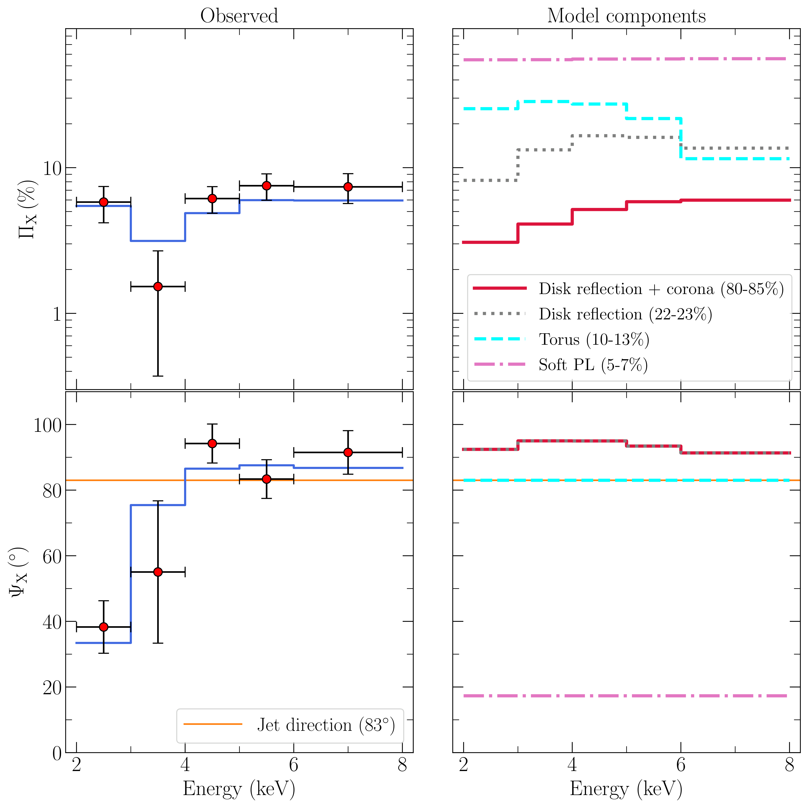
图注：Polarization degree and angle versus energy in \ngc\ (top and bottom panels, respectively). The left column shows the observed polarization parameters combining the two observations together with the best-fit model (blue lines), and assuming $\rm PA=83\degr$ (horizontal dashed line in the bottom panels) and a spin parameter $a^\ast = 0.75$. The right column shows the individual best-fit model components (see text for details). The percentages listed in parentheses show the contribution of each component to the total observed flux.
对应解读：对应“IXPE 分能段偏振度和偏振角图”以及关键图表导读中的图 2。
入选理由：这张图直接展示偏振度和偏振角随能量的变化，并叠加最佳拟合模型及各模型成分通量占比，是检验硬段 4 keV 以上约 6%–7% 偏振、低能段偏振角不同、以及软偏振成分存在性的核心图。它比单纯能谱图更直接支撑论文关于多偏振成分和盘反射起源的主要结论。
来源与置信度：\(arxiv_source\)；high；\(arxiv_source\) / ngc4151.tex:figure[2]
Fig05
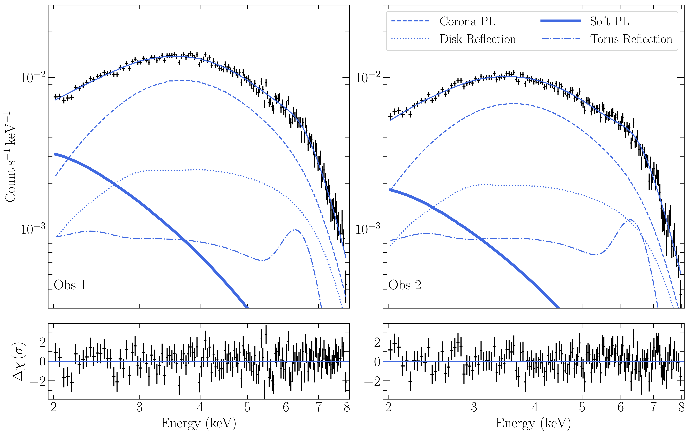
图注：Time-integrated \ixpe\ energy spectra obtained from Obs\,1 (left) and Obs\,2 (right) are shown in the top panel. We show the best-fit model as described in Sect.\,\(\ref{sec:ixpespec}.\) The dashed lines correspond to the coronal power-law component. The dotted lines correspond to the disk reflection. The dash-dotted lines correspond to the torus emission. The thick solid lines correspond to the additional power-law component required to model the polarization signal below 4\,keV. The corresponding residuals are shown in the bottom panel.
对应解读：对应“模型成分分解图”、Stokes/IXPE 谱拟合诊断以及关键图表导读中的图 4 类内容。
入选理由：该图给出两次 IXPE 观测的能谱、最佳拟合模型、各成分分解和残差，包括日冕幂律、盘反射、环面发射和额外软幂律成分。它最适合检查盘反射在 2–8 keV 中虽非通量主导但参与偏振解释，以及软偏振成分如何改善低能段拟合。
来源与置信度：\(arxiv_source\)；high；\(arxiv_source\) / ngc4151.tex:figure[5]
Fig04
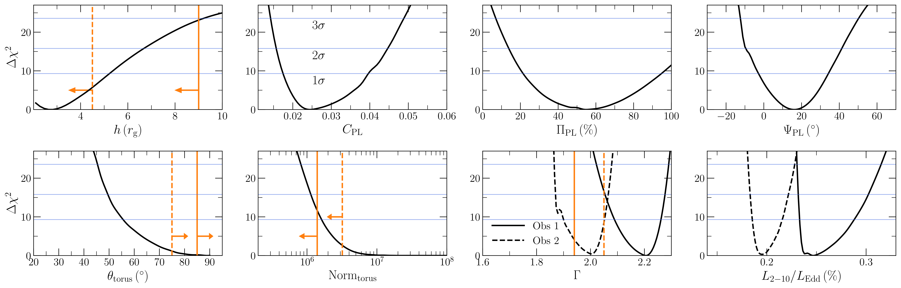
图注：Plots of $\Delta \chi^2$ as a function of each of the free parameters. Solid and dashed lines correspond to Obs\,1 and Obs\,2, respectively. Parameters with a single solid line were assumed to be constant between observations. The horizontal lines show the $1\sigma, 2\sigma,$ and $3\sigma$ confidence levels for 8 free parameters. The vertical orange lines correspond to the best-fit values obtained by modeling the \xmm\ and \nustar\ spectra.
对应解读：对应“参数置信区间图”和模型拟合段落中关于灯柱高度、环面开口角及参数退化的讨论。
入选理由：该图以 Δχ² 展示各自由参数的约束，并区分 Obs 1 与 Obs 2，是判断 h<9 Rg、环面开口角等关键参数是否稳健的主要图。相比只显示最佳拟合谱的图，它更能支撑日报中关于置信水平、边界约束和不同观测纪元参数一致性的解读。
来源与置信度：\(arxiv_source\)；high；\(arxiv_source\) / ngc4151.tex:figure[4]
Fig06
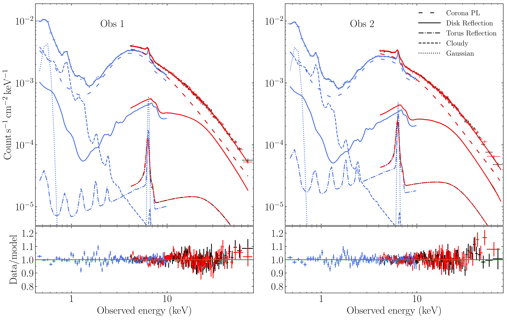
图注：Best-fit model to the XMM-Newton (blue) and NuSTAR/FPMA and FPMB (black and red, respectively) assuming disk reflection for Obs\,1 and Obs\,2 (left and right, respectively). The spectra are re-binned for visual purposes.
对应解读：对应“宽带能谱及残差图”和模型拟合段落中 XMM-Newton/NuSTAR 0.4–79 keV 联合约束的讨论。
入选理由：这张图展示 XMM-Newton 与 NuSTAR 在两个观测纪元中的宽带最佳拟合结果，是检验同一盘反射方案是否也能解释常规能谱的关键证据。虽然候选图说明未强调残差细节，但它仍是支撑联合能谱-偏振拟合可信度的必要图。
来源与置信度：\(arxiv_source\)；high；\(arxiv_source\) / ngc4151.tex:figure[6]
Fig01
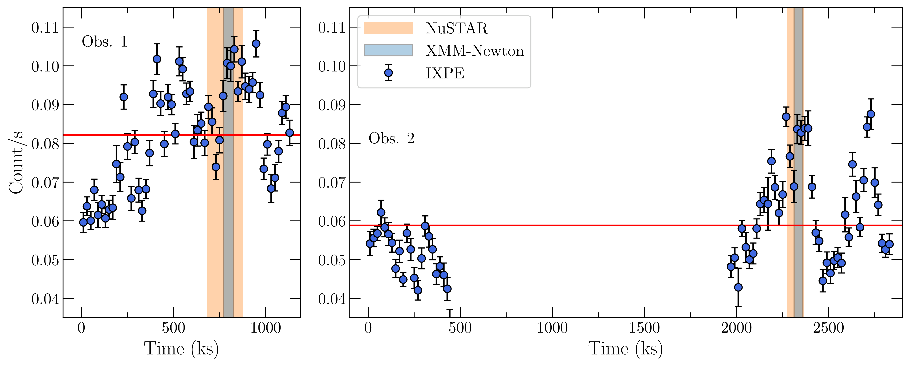
图注：The \ixpe\ $2-8$\,keV band light curve of \ngc\ for Obs\,1 and Obs\,2 (left and right panels, respectively), with a time bin of 20\,ks. For clarity, we show the light curves for DU1 only. The light curves of DU2 and DU3 are consistent with the ones shown in this figure. The horizontal lines indicate the average count rate in each of the observations. The shaded blue and orange regions show the periods when the XMM-Newton and NuSTAR observations took place, respectively.
对应解读：对应“不同观测纪元对比图”和关键图表导读中的图 1，即观测时段与源状态概览。
入选理由：该图显示两次 IXPE 观测的 2–8 keV 光变，并标出 XMM-Newton 与 NuSTAR 同时观测区间，有助于判断多仪器数据的同时性和源状态是否可比。对于 NGC 4151 这种复杂变源，这是避免把时间变化误解为固定几何特征的重要背景图。
来源与置信度：\(arxiv_source\)；high；\(arxiv_source\) / ngc4151.tex:figure[1]
Fig03
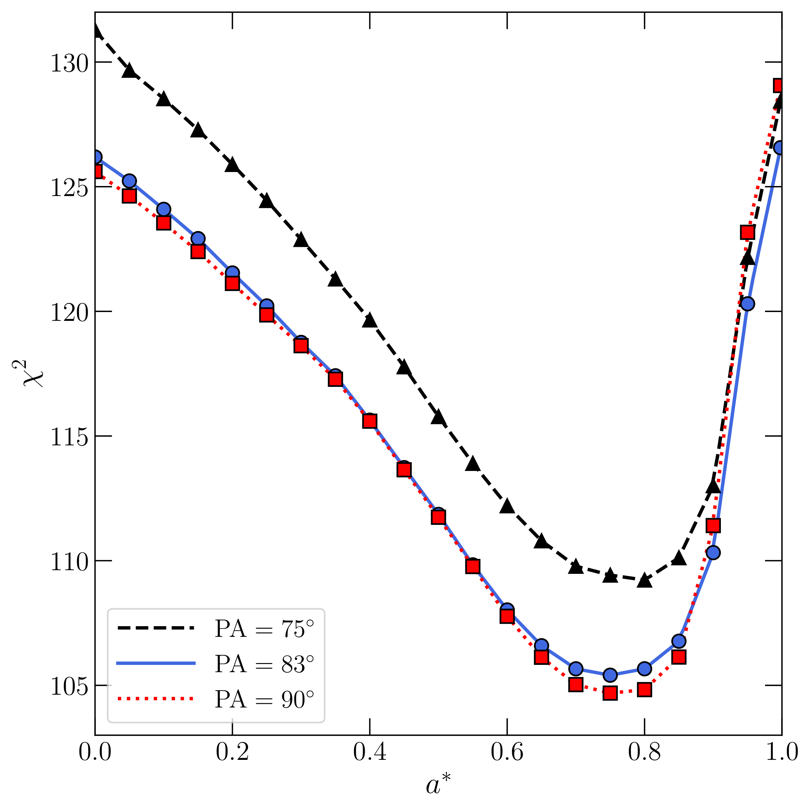
图注：Distribution of $\chi^2$ as a function of spin obtained by fitting the Stokes parameters assuming a PA of $75\degr, 83\degr,$ and $90\degr$ (black, blue, red, respectively).
对应解读：对应模型拟合段落中关于自旋、系统轴位置角和模型假设敏感性的讨论。
入选理由：该图展示不同系统位置角假设下 χ² 随黑洞自旋的变化，可用于评估偏振反射模型对固定或假设参数的敏感性。它不是日报最核心的诊断图，但能补充说明模型结论并非只由单一位置角或自旋选择任意决定。
来源与置信度：\(arxiv_source\)；high；\(arxiv_source\) / ngc4151.tex:figure[3]
强相关工作
这篇工作直接关联 IXPE 对 Seyfert 星系的早期偏振结果，尤其是 NGC 4151 的硬 X 射线高偏振解释。相似工作通常围绕“延展日冕还是紧凑灯柱”“盘反射能否主导偏振”“偏振角与射电喷流方向关系”展开。建议检索关键词包括：\(\rm IXPE\ NGC\ 4151\ X-ray\ polarization\)、\(\rm AGN\ corona\ geometry\ polarization\)、\(\rm relativistic\ reflection\ polarimetry\)、\(\rm lamp-post\ corona\ Seyfert\) 和 \(\rm Stokes\ spectral\ fitting\)；这些关键词能找到观测论文、模型论文和后续评论。
基础理论上，本文建立在 X 射线反射谱、相对论光线追踪和散射偏振理论之上。需要把 George 与 Fabian 类型的冷盘反射、Laor/Kerr 线轮廓、现代 xillver/relxill 反射模型，以及 Dovčiak 等关于强引力偏振传输的工作放在一起读。相反观点或张力主要来自延展板状日冕解释：如果硬段偏振由日冕直接 Compton 化产生，那么盘反射只需是次要修正；而本文认为盘反射虽然通量占比有限，但偏振权重足够大。这一张力未来可通过更精细的能量依赖偏振和时间滞后-偏振联合分析检验。
相似工作：
- https://arxiv.org/abs/2606.08862
- https://ui.adsabs.harvard.edu/search/q=IXPE%20NGC%204151%20X-ray%20polarization
- https://ui.adsabs.harvard.edu/search/q=AGN%20X-ray%20polarimetry%20Seyfert%20IXPE
基础理论 / 方法工作：
- https://ui.adsabs.harvard.edu/abs/1991MNRAS.249..352G/abstract
- https://ui.adsabs.harvard.edu/abs/1991ApJ...376...90L/abstract
- https://ui.adsabs.harvard.edu/search/q=relxill%20xillver%20reflection%20model
- https://ui.adsabs.harvard.edu/search/q=general%20relativistic%20polarization%20ray%20tracing%20accretion%20disk
相反观点 / 张力线索：
- https://ui.adsabs.harvard.edu/search/q=NGC%204151%20IXPE%20extended%20corona%20slab
- https://ui.adsabs.harvard.edu/search/q=AGN%20slab%20corona%20X-ray%20polarization
- https://ui.adsabs.harvard.edu/search/q=lamp-post%20versus%20extended%20corona%20AGN%20polarimetry
8. Post-Merger Gravitational-Wave Uncertainties of Binary Neutron Stars under Multi-Messenger EOS Constraints
- 来源：arXiv / astro-ph.HE
- 链接：https://arxiv.org/abs/2606.08522v1
- 作者：Yong-Jia Huang, Luca Baiotti
- 评分：novelty 7/10，importance 8/10，relevance 8/10，final 8.70/10
- 推荐理由：双中子星并合后高频引力波与多信使EOS约束，属于致密星/多信使高能天体物理；结果给出约100 Hz级残余不确定度，对未来探测解释有参考价值。
中文题目：多信使 EOS 约束下双中子星并合后引力波频率的不确定性
做了什么：这篇文章问了一个很具体但关键的问题：在现有多信使观测已经排除大量极端冷物质状态方程之后，双中子星并合后主导高频引力波峰值频率 \(f_{2,\rm mean}\) 还剩多大理论不确定性？作者从受潮汐形变、NICER 质量半径、重脉冲星质量、手征有效场论和渐近高密度 \(\rm pQCD\) 共同约束的冷 EOS 后验中选取最软和最硬代表模型，进行全广义相对论流体数值模拟，并与文献中共 \(82\) 个 EOS 模型比较。核心结论是：一旦固定双星总质量和一个紧致度指标，如潮汐形变率 \(\Lambda\) 或半径 \(R\)，当前允许的冷 EOS 对 \(f_{2,\rm mean}\) 只留下约 \(100\,{\rm Hz}\) 的残余散布，远小于包含已被观测排斥 EOS 时的 \(\gtrsim 500\,{\rm Hz}\) 范围。也就是说，未来若在高频后并合信号中看到明显偏离这条冷物质校准关系的 \(f_2\)，它很可能不是普通冷 EOS 不确定性，而是在指向有限温度相变等额外物理。
为什么重要：后并合引力波位于 \({\rm kHz}\) 频段，携带的是热的、差分旋转的、超核密度物质信息，比并合前潮汐信号更接近中子星物质相图的未知区域。过去常说 \(f_2\) 可约束 EOS，但如果不同 EOS 本身给出几百赫兹散布，那么一次观测很难判断偏差来自冷 EOS、热效应还是相变。本文的重要性在于把“当前观测已经允许的冷 EOS 空间”与“后并合频率预测的不确定性”直接连起来，说明冷物质基线已经相当窄，未来高频探测的异常会更有诊断力。
理论 / 观测 / 仪器方法价值：对理论而言，它给出了受多信使约束后的 \(f_{2,\rm mean}\) 冷物质基准和残余系统误差，可作为检验有限温度强子到夸克相变、异常热压或输运效应的零假设。对观测而言，它说明第三代引力波探测器或专门高频增强探测方案需要达到怎样的频率测量精度，才可能把 \(\sim 100\,{\rm Hz}\) 级冷 EOS 残差与新物理偏差区分开。对方法而言，它强调在比较后并合频率时必须控制双星质量和紧致度变量，否则用宽泛 EOS 集合得到的散布会高估真实不确定性。
为什么应该关注：如果你关心中子星 EOS、后并合引力波或多信使约束，这篇文章值得看，因为它把一个常被模糊表述的问题量化了：当前数据到底把后并合频率预测收紧到什么程度。它不是又给出一条经验拟合关系而已，而是在告诉读者，未来 \(f_2\) 的大偏差可能直接成为热相变或非冷 EOS 物理的证据。对于准备设计高频探测策略、做 EOS 反演或构造相变判据的人，这相当于给出了一个可操作的误差预算。
展开详细解读：文章讲解、背景、理论、重点章节、图表与相关工作
文章详细讲解
科学问题：双中子星并合后的短寿命或长寿命残骸会发出高频引力波，其功率谱中最突出的峰通常记作 \(f_2\) 或平均主峰 \(f_{2,\rm mean}\)。这个频率主要反映残骸的平均密度、旋转结构、热压和 EOS 刚度。传统上，研究者用大量候选 EOS 做数值模拟，发现不同 EOS 可让 \(f_2\) 相差数百赫兹，于是 \(f_2\) 被视为 EOS 探针。但问题是，其中许多 EOS 已经被 GW170817 潮汐形变、NICER 半径、重脉冲星质量以及核物理约束排斥。本文要回答的是：若只考虑当前多信使数据仍允许的冷 EOS，后并合频率的“普通 EOS 不确定性”究竟还有多大。
作者怎么做：他们采用一组被多信使约束的冷状态方程后验，约束来源包括并合前潮汐形变率、NICER 质量半径测量、大质量脉冲星给出的最大质量下限、低密度手征有效场论，以及极高密度的微扰 \(\rm QCD\) 极限。对每个选定双星质量，作者在这个后验中挑出最软和最硬的代表模型，并使用全广义相对论流体模拟追踪双中子星从并合到后并合残骸的动力学和引力波发射。为了将新结果放到更宽背景中，他们还与文献中广泛 EOS 模拟结果合并，形成总计 \(82\) 个 EOS 的比较集。
关键结果：如果不加区分地使用宽泛 EOS 集合，\(f_{2,\rm mean}\) 的范围可以超过 \(500\,{\rm Hz}\)，这和早期文献中的直觉一致。但一旦固定双星质量，并同时固定一个描述冷星紧致性的量，如潮汐形变率 \(\Lambda\) 或半径 \(R\)，多信使允许 EOS 的残余频率散布只有约 \(100\,{\rm Hz}\)。这说明，当前多信使观测已经把冷物质基准校准得足够紧。文章还确认了一个有用的准普适关系：次级谱峰 \(f_1\) 和 \(f_3\) 的平均值近似等于 \(f_{2,\rm mean}\)，即 \((f_1+f_3)/2\approx f_{2,\rm mean}\)，偏差约 \(116\,{\rm Hz}\)。这为在主峰受噪声或模式混合影响时估计 \(f_2\) 提供了替代诊断。
局限和下一步：本文的关键基准是冷 EOS 加上数值模拟中采用的热处理和微物理设定，因此它并不声称完全解决有限温度、成分变化、中微子输运、磁场和粘滞等问题。相反，它的价值在于把这些因素从“冷 EOS 不确定性”中分离出来。下一步自然是把同样的多信使冷 EOS 后验与更真实的有限温度 EOS、相变模型和不同质量比系统结合，检验 \(\sim 100\,{\rm Hz}\) 的冷基线是否在更大参数空间中保持稳定。另一个重要方向是把频率校准与探测器噪声曲线、贝叶斯后并合参数估计和模型选择直接耦合，判断实际观测能否分辨相变偏差。
背景知识
研究对象是双中子星并合后的残骸。并合前阶段的引力波主要由轨道运动决定，潮汐效应在晚期进入相位，提供冷中子星结构的信息；并合后阶段则进入毫秒级、高温、强差分旋转和强非线性广义相对论流体区间。若残骸没有立即坍缩成黑洞，它会在几千赫兹频段发出准周期引力波，功率谱中主峰 \(f_2\) 与残骸平均密度和 EOS 刚度密切相关。
历史上，后并合频率被视为 EOS 的强探针。许多数值模拟显示，较软 EOS 产生更紧致的残骸，通常对应更高的 \(f_2\)；较硬 EOS 产生较大的半径和较低的振荡频率。但早期 EOS 集合往往非常宽泛，既包含现在看来半径过大或最大质量不足的模型，也包含与核物理低密度约束不兼容的模型。因此，过去得到的 \(f_2\) 分散度混合了两件事：真实未定的高密度物理，以及已经被观测基本排除的冷 EOS 差异。
现在值得重新看这个问题，是因为多信使约束已经显著进步。GW170817 和后续引力波事件约束了潮汐形变；NICER 通过脉冲轮廓建模给出若干中子星的质量半径后验；\(2\,M_\odot\) 以上脉冲星要求 EOS 足够硬以支撑大质量；手征有效场论约束低于或接近核饱和密度几倍的冷核物质；微扰 \(\rm QCD\) 则为极高重子化学势提供渐近边界。把这些信息放在一起后，冷 EOS 的允许空间比十年前窄得多。
一个常见误区是把后并合 \(f_2\) 的大散布直接理解为“未来很难从后并合信号中识别新物理”。本文指出这可能过于悲观，因为大散布的一部分来自已不再可信的 EOS。另一个误区是把所有 \(f_2\) 偏差都归因于冷 EOS 半径差异，而忽略有限温度相变、热压不足、成分冻结、中微子冷却和磁流体效应也会改变残骸频谱。本文的逻辑是：先把冷 EOS 基线压窄，未来偏离才更容易被解释为额外物理。
基础理论 / 方法脉络
从基本物理图像看，双中子星并合后的主峰频率近似对应一个自引力流体残骸的全局振荡频率。若把残骸粗略看成质量为 \(M\)、半径为 \(R\) 的自引力体，动力学频率随平均密度 \(\bar\rho\) 标度为 \(\sqrt{G\bar\rho}\)。因此更紧致、更高平均密度的残骸通常有更高的 \(f_2\)。这个简单标度不是精确理论，因为真实残骸有差分旋转、非轴对称、冲击加热和强相对论修正，但它解释了为什么 \(f_2\) 与冷星半径、潮汐形变率和紧致度存在准普适关系。
并合前的关键结构量是紧致度 \(C=GM/(Rc^2)\) 和无量纲潮汐形变率 \(\Lambda\)。\(\Lambda\) 近似随 \(C^{-5}\) 变化，还依赖 Love 数 \(k_2\)。因此，测得并合前潮汐相位可以间接限制中子星半径和 EOS 刚度。本文使用 \(\Lambda\) 或 \(R\) 作为控制变量，是因为它们能把冷 EOS 在并合前可观测结构上的差异投影出来。若在固定质量和固定 \(\Lambda\) 的情况下 \(f_2\) 仍分散很大，说明后并合对更高密度或热物理特别敏感；若分散很小，则说明冷 EOS 基线已经被紧致度基本决定。
本文使用的是全广义相对论流体模拟，而不是牛顿近似或简单经验模型。模拟需要求解爱因斯坦方程与相对论流体方程，输入为冷 EOS 以及热处理方案，输出为时域引力波 \(h(t)\)。再通过傅里叶变换得到频谱，识别主峰 \(f_2\) 和次级峰 \(f_1\)、\(f_3\)。这里的 \(f_{2,\rm mean}\) 代表对主峰频率的平均或稳健定义，用来降低具体峰识别方法、时间窗和噪声的影响。
主要退化关系来自质量、半径、潮汐形变和热物理之间的耦合。增加总质量通常会提高残骸平均密度，从而提高 \(f_2\)；减小冷星半径也会提高 \(f_2\)。若不固定质量，EOS 效应和质量效应会混在一起。若不固定 \(\Lambda\) 或 \(R\)，则已被观测排除的极端软硬 EOS 会人为放大频率范围。系统误差还包括数值分辨率、有限模拟时长、谱峰提取窗口、热压近似、中微子与磁场缺失，以及文献 EOS 集合之间模拟设置不一致。
公式与推导
第一步是用平均密度给出后并合主频的物理标度。对质量为 \(M_{\rm rem}\)、特征半径为 \(R_{\rm rem}\) 的残骸，平均密度为
自引力流体的动力学角频率满足
这里 \(G\) 是引力常数。\(f_2\) 不是严格等于 \(f_{\rm dyn}\)，但这个关系说明为什么更紧致的残骸对应更高的主峰频率。
第二步把冷星结构与潮汐观测连接起来。单星紧致度定义为
其中 \(M\) 和 \(R\) 是孤立冷中子星的引力质量和半径，\(c\) 是光速。无量纲潮汐形变率可写为
其中 \(k_2\) 是二阶潮汐 Love 数。由于 \(C^{-5}\) 的强依赖，\(\Lambda\) 对半径非常敏感，这也是本文用 \(\Lambda\) 或 \(R\) 控制 EOS 差异的原因。
第三步写出双星潮汐相位中常用的质量加权潮汐量。对两颗星质量 \(m_1\)、\(m_2\)，潮汐形变率 \(\Lambda_1\)、\(\Lambda_2\)，有效潮汐形变率为
\(\tilde\Lambda\) 是并合前引力波最直接约束的组合之一，它把 EOS 信息投影到可观测相位修正中。
第四步给出经验校准的形式。固定总质量 \(M_{\rm tot}\) 后，后并合频率常被拟合为冷星半径或潮汐量的函数，例如
其中 \(X\) 可取 \(R_{1.6}\)、\(R_{1.4}\)、\(\Lambda\) 或 \(\tilde\Lambda\) 的某种变换，\(a_i\) 是拟合系数，\(\epsilon\) 是残差。本文关心的核心不是某个多项式形式本身，而是多信使允许 EOS 在固定 \(M_{\rm tot}\) 和固定 \(X\) 后的 \(\epsilon\) 是否很小。
第五步把频率散布量化为残差标准差或范围。若第 \(i\) 个 EOS 的模拟频率为 \(f_{2,i}\)，拟合预测为 \(\hat f_{2,i}\)，则残差为
残余散布可用
描述，其中 \(N\) 是 EOS 或模拟数量，\(\overline{\Delta f}\) 是残差均值。本文结论可理解为：受当前多信使约束的冷 EOS 子空间中，\(\sigma_f\) 或等效频率范围约为 \(100\,{\rm Hz}\) 量级。
第六步说明从时域波形到谱峰的观测量。若后并合波形为 \(h(t)\)，加窗函数 \(w(t)\) 后的傅里叶变换为
功率谱峰位置可由 \(|\tilde h(f)|^2\) 的局部极大值确定，主峰为 \(f_2\)，次级峰为 \(f_1\) 和 \(f_3\)。窗口 \(w(t)\)、模拟时长和信噪比会影响峰宽和峰位，是读图时必须注意的系统误差来源。
第七步写出本文确认的准普适峰关系：
若 \(|\delta f|\lesssim116\,{\rm Hz}\)，则两个次级峰可提供对主峰的近似交叉检验。物理上，这提示几个谱峰可能来自同一差分旋转残骸中相互耦合的振荡模式或调制频率。
第八步把未来探测显著性写成简单判据。若观测得到 \(f_{2,\rm obs}\)，冷 EOS 基线预测为 \(f_{2,\rm cold}\)，观测误差为 \(\sigma_{\rm obs}\)，理论残差为 \(\sigma_{\rm th}\)，则异常显著性可估计为
本文把 \(\sigma_{\rm th}\) 压到 \(\sim100\,{\rm Hz}\) 量级的含义是：只要仪器能把 \(\sigma_{\rm obs}\) 控制在相近或更低水平，有限温度相变等新物理造成的几百赫兹偏移就可能被统计地区分。
模型拟合 / 应用方法
这类工作的拟合对象主要是后并合频率与冷星结构量之间的关系。输入量通常包括双星总质量 \(M_{\rm tot}\)、质量比 \(q\)、单星或质量加权潮汐形变率 \(\Lambda\)、\(\tilde\Lambda\)、参考质量半径 \(R_{1.4}\) 或 \(R_{1.6}\)，输出量是从模拟波形功率谱中提取的 \(f_{2,\rm mean}\)。拟合可以使用线性、多项式或分段经验关系；更复杂的做法可引入高斯过程或层级贝叶斯模型，把 EOS 后验直接传播到频率预测后验。
似然层面，若模拟频率误差近似高斯，可把残差写入 \(\chi^2\) 或高斯似然。对真实观测，则还需加入探测器噪声功率谱 \(S_n(f)\)，用频域波形匹配或峰位提取似然估计 \(f_2\)。本文的重点并非给出完整观测贝叶斯反演，而是量化 EOS 样本在受约束后验中的频率分散；因此读者应把 \(\sim100\,{\rm Hz}\) 看成冷 EOS 先验传播后的理论误差，而不是某台探测器的测量误差。
参数退化很重要。\(M_{\rm tot}\) 增大、\(R\) 减小、\(\Lambda\) 减小都可能提高 \(f_2\)，如果样本中质量不同却放在同一张图上，会产生虚假的 EOS 散布。质量比 \(q\) 也可能影响残骸角动量、盘质量和模式激发强度。热处理参数会改变残骸压力支撑，从而移动峰值。若使用文献中不同数值代码和不同热 EOS 处理的结果，代码间系统误差也会进入残差。
残差诊断应重点看两件事：第一，受多信使约束的最软和最硬 EOS 是否确实落在同一条 \(f_2\)-\(\Lambda\) 或 \(f_2\)-\(R\) 校准关系附近；第二，宽泛 \(82\) 个 EOS 集合中那些造成 \(\gtrsim500\,{\rm Hz}\) 散布的模型是否多数已被当前数据排除。若残差呈现随 \(\Lambda\)、质量或 EOS 类别的系统趋势，说明单变量校准还不够，需要引入额外高密度结构指标。
模型可能失败的场景包括：并合后立即坍缩，导致没有清晰 \(f_2\)；有限温度一阶相变使残骸内部出现不同相结构，打破冷星 \(R\) 或 \(\Lambda\) 与热残骸密度结构之间的对应；强磁场或粘滞在较长时间尺度上改变角动量分布；中微子输运改变热压和成分。本文最有用的实际应用正是在这些失败场景中：把冷 EOS 残差作为零假设误差，一旦观测偏差明显超过该误差，就可进入新物理模型比较。
重点章节 / 结果段落怎么读
数据和 EOS 样本部分应首先阅读。重点是作者如何定义“多信使允许”的冷 EOS 后验，以及如何从中为每个双星质量挑选最软和最硬模型。读者需要确认这些约束具体包括潮汐形变、NICER、最大质量、手征有效场论和 \(\rm pQCD\)，并理解“最软”和“最硬”是在什么变量或密度范围内定义的。
数值模拟方法部分应关注广义相对论流体设置。需要看初始双星质量、质量比、网格分辨率、冷 EOS 与热处理方式、模拟持续时间、波形提取半径和后并合频谱计算方法。这些设置决定 \(f_{2,\rm mean}\) 的系统误差下限。
主结果部分应重点读 \(f_{2,\rm mean}\) 与 \(\Lambda\) 或 \(R\) 的关系图。这里是论文核心：宽泛 EOS 集合显示大范围散布，而多信使允许子集在固定质量和紧致度后只有约 \(100\,{\rm Hz}\) 残差。读者应区分“总体范围”与“条件化后的残余散布”。
谱峰关系部分应关注 \((f_1+f_3)/2\approx f_{2,\rm mean}\) 的验证。这个结果对观测很实用，因为实际数据中主峰、次峰和模式混合可能受信噪比影响。若次峰平均能稳定重构主峰，它可以作为独立交叉检查。
讨论和结论部分应关注作者如何解释偏离冷基线的物理含义。尤其要看他们对有限温度强子到夸克相变的表述：这不是本文直接模拟确认相变，而是说当前冷 EOS 不确定性已足够小，未来若出现显著偏离，将更自然地指向冷 EOS 之外的物理。
建议重点查看的图表
-
EOS 后验或质量半径关系图：检查多信使允许模型相对于文献宽泛 EOS 的位置，特别是 \(M\)-\(R\) 曲线是否满足大质量脉冲星和 NICER 区间。
-
潮汐形变或半径分布图：看允许 EOS 在 \(\Lambda\) 或 \(R\) 上的范围是否明显收窄，以及最软、最硬代表模型是否覆盖后验边界。
-
后并合波形与功率谱图：看 \(f_2\)、\(f_1\)、\(f_3\) 的峰是否清晰，峰宽是否足以支持 \(\sim100\,{\rm Hz}\) 级判断，注意窗口函数和模拟时长造成的频率分辨率。
-
\(f_{2,\rm mean}\) 对 \(\Lambda\) 或 \(R\) 的散点图：这是最关键结果。检查受约束 EOS 子集与全部 \(82\) 个 EOS 的散布差异，以及固定质量序列是否分开绘制。
-
残差图或误差条图：看拟合关系扣除后，残差是否随机分布，是否存在随软硬、质量或紧致度变化的系统趋势。
-
\((f_1+f_3)/2\) 与 \(f_{2,\rm mean}\) 的比较图：检查点是否沿一比一直线分布，\(\sim116\,{\rm Hz}\) 偏差是最大偏差、均方差还是某种置信范围。
-
表格中的模拟清单：确认每个 EOS 的双星质量、是否发生快速坍缩、提取到的峰值频率和数值分辨率，避免把不同物理情形混入同一比较。
关键图表逐图导读
图 1：如果论文给出 EOS 或质量半径曲线，横轴通常是半径 \(R\) 或中心密度，纵轴是质量 \(M\)、压力或能量密度。数据点或阴影区可能表示 NICER、重脉冲星和核物理约束。读图时要看多信使允许的最软和最硬模型是否确实包住后验边界，而不是只选了两个任意代表。陷阱是不要把半径范围宽窄直接等同于后并合频率范围；后者还受总质量和热残骸结构影响。
图 2：若展示后并合波形或频谱，横轴可能是时间 \(t\) 或频率 \(f\)，纵轴是应变 \(h(t)\)、频谱幅度 \(|\tilde h(f)|\) 或功率。主峰 \(f_2\) 应是最高或最稳健的 \({\rm kHz}\) 峰，\(f_1\) 和 \(f_3\) 是低、高频次峰。读者应检查峰是否受有限时间窗影响而变宽，尤其当两个模型的峰位差只有 \(100\,{\rm Hz}\) 量级时，频率分辨率和峰拟合方法很关键。
图 3：核心散点图通常是 \(f_{2,\rm mean}\) 对 \(\Lambda\)、\(\tilde\Lambda\) 或 \(R\)。横轴若为 \(\Lambda\)，因其与紧致度关系非线性，点的间距不一定直观；横轴若为半径，较软 EOS 常在较小半径处。模型线表示经验拟合或校准关系。主要结论应是：全部 EOS 的点云很宽，但当前约束允许的点在固定质量线上贴得更紧。陷阱是混合不同总质量会制造额外散布。
图 4：残差图若存在，横轴可能是 \(\Lambda\)、\(R\)、总质量或 EOS 标签，纵轴是 \(\Delta f=f_{2}-\hat f_{2}\)。这张图比主散点图更能说明校准质量。应看残差中心是否接近零、受约束 EOS 的残差是否约为 \(100\,{\rm Hz}\)、是否有某类 EOS 系统偏高或偏低。若残差随横轴单调变化，说明拟合变量选择不足。
图 5：关于 \((f_1+f_3)/2\) 与 \(f_{2,\rm mean}\) 的图，横轴可为 \(f_{2,\rm mean}\)，纵轴为 \((f_1+f_3)/2\)，一比一直线是关键参照。数据点越贴近该线，准普适关系越好。读图陷阱是次峰提取通常比主峰更依赖信噪比和模式识别，真实观测中 \(f_1\) 或 \(f_3\) 可能并不总是可测。
图 6：若有表格或附录稳健性图，应查看不同数值分辨率、不同频谱窗口、不同 EOS 子集选择下 \(f_{2,\rm mean}\) 的变化。若这些技术变化已经接近 \(100\,{\rm Hz}\)，则理论残差与数值系统误差需要合并解释。
论文原图 / 可嵌入图片
Fig07
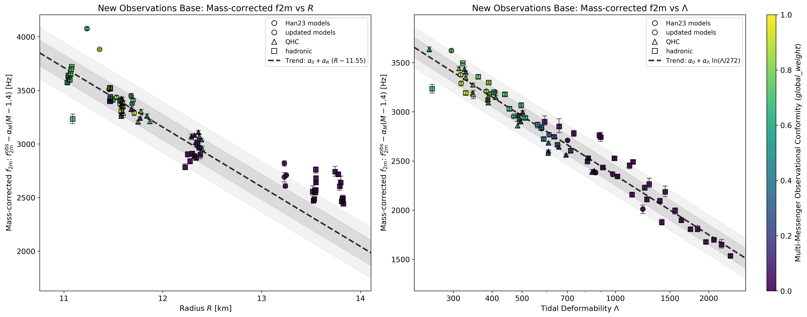
图注：As in Fig.~\(\ref{fig:detrended_old},\) but for the updated baseline. The high-weight (observationally favored) models cluster tightly within $\pm\sigma_{f_2}$ of the trend, whereas the low-weight models, corresponding to very stiff ($R\gtrsim12.5\,{\rm km}$) or very soft ($R\lesssim11\,{\rm km}$) EOSs now disfavored by multi-messenger data, deviate by more than $500\,{\rm Hz}$, visualizing the reduction of the plausible $f_{2,\rm mean}$ range from $\gtrsim500\,{\rm Hz}$ to $\sim100\,{\rm Hz}$.
对应解读：建议重点查看的图表第4、5项；关键图表逐图导读图3、图4；模型拟合段落关于固定质量并用 R 或 Λ 校准 f2 的核心结论。
入选理由：这是最直接支撑论文主结论的图：质量修正后的 \(f_{2,mean}\) 分别对半径 R 和潮汐形变 Λ 作图，并明确显示高权重、多信使允许模型聚集在约 ±σ_{f2} 内，而已被数据排斥的过软或过硬 EOS 可偏离超过 500 Hz。它同时呈现坐标轴诊断量、拟合趋势、灰色误差带和受约束/非受约束 EOS 的散布差异，最适合解释“冷 EOS 不确定性从 ≳500 Hz 收窄到 ∼100 Hz”。
来源与置信度：\(arxiv_source\)；high；\(arxiv_source\) / main.tex:figure[7]
Fig05
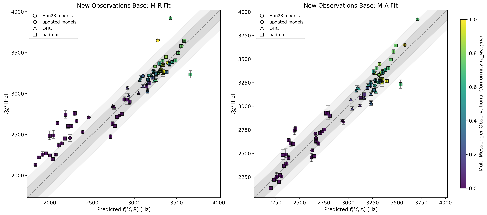
图注：As in Fig.~\(\ref{fig:fundamental_old},\) but anchored to the updated baseline ($R_{1.4}=11.55^{+0.50}_{-0.39}\,{\rm km}$, $\Lambda_{1.4}=272^{+96}_{-55}$), using Eqs.~(\ref{eq:new_R}) (left) and~(\ref{eq:new_L}) (right). The weighted dispersion about the relation is $\sigma_{f_2}=119.2\,{\rm Hz}$ ($M$--$R$) and $102.3\,{\rm Hz}$ ($M$--$\ln\Lambda$).
对应解读：建议重点查看的图表第4、5项；关键图表逐图导读图3、图4；模型拟合段落中关于更新多信使基线下 f2 预测关系和残差宽度的讨论。
入选理由：该图比较模拟得到的 \(f_{2,mean}\) 与由更新后的 \(R_{1.4}\)、Λ_{1.4} 基线预测的准普适关系，包含一比一虚线、±σ 和 ±2σ 置信带，并给出 M-R 与 M-lnΛ 两种表示下约 119 Hz 和 102 Hz 的加权离散度。它比一般频谱图更能直接检验模型拟合是否达到约 100 Hz 精度。
来源与置信度：\(arxiv_source\)；high；\(arxiv_source\) / main.tex:figure[5]
Fig08
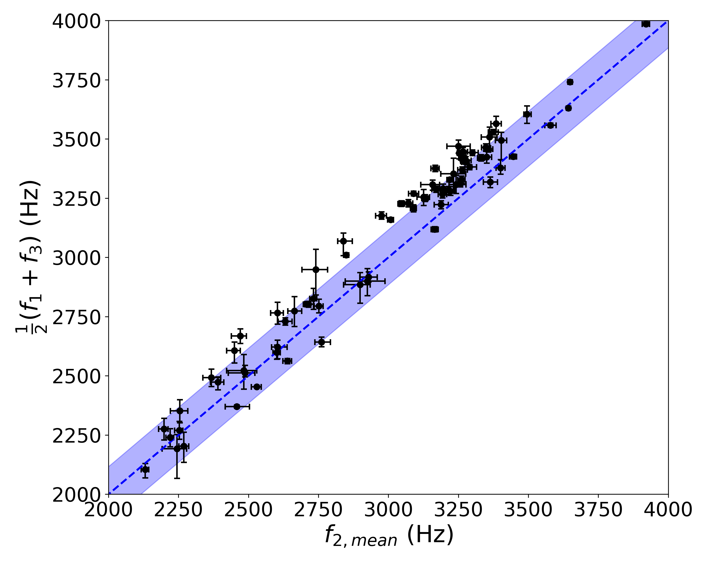
图注：Half-sum of the secondary post-merger peaks, $(f_1+f_3)/2$, versus the dominant peak $f_{2,\rm mean}$ for all primary-sample models in which $f_1$ and $f_3$ can be unambiguously identified. The dashed line is the identity relation $(f_1+f_3)/2=f_{2,\rm mean}$ expected from the quasi-linear coupling $f_{1,3}\approx f_{2,\rm mean}\mp f_0$, and the blue band marks its root-mean-square deviation $\sigma_{\rm couple}=116.0\,{\rm Hz}$. Error bars denote the 68\% confidence intervals of the extracted frequencies.
对应解读：建议重点查看的图表第6项；关键图表逐图导读图5；详细解读中关于 (f1+f3)/2≈\(f_{2,mean}\) 的准普适关系。
入选理由：该图正是次级峰半和与主峰 \(f_{2,mean}\) 的比较，包含一比一直线、116 Hz 均方根偏差带以及频率提取的 68% 置信区间。它直接支撑论文第二个关键结果，即可用 f1 和 f3 的平均估计主峰频率，并能检查该偏差的统计含义。
来源与置信度：\(arxiv_source\)；high；\(arxiv_source\) / main.tex:figure[8]
Fig01
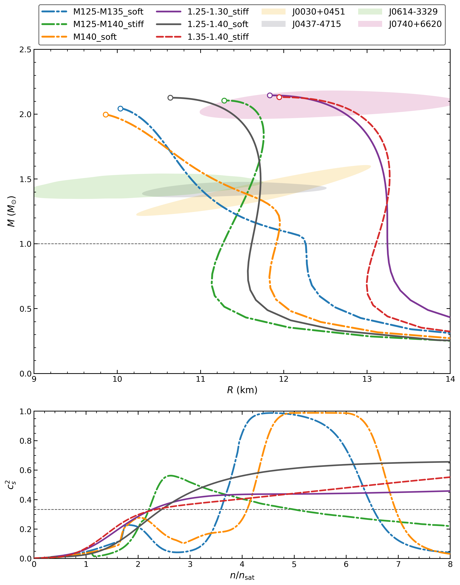
图注：Mass-radius relations and squared sound speed ($c_s^2$) for statistical EOS models. Models from the FFNN construction are selected if their radius at a given mass falls within the 90\% credible region, while models from~\(\citep{Huang:2026jgl}\) (which incorporate additional information from PSR~J0437$-$4715 and PSR~J0614$-$3329) are selected using the 68\% highest posterior density interval of the joint posterior.
对应解读：建议重点查看的图表第1、2项；关键图表逐图导读图1；详细解读中关于多信使 EOS 后验、质量半径约束和最软/最硬代表模型选择的背景。
入选理由：这张图展示统计 EOS 模型的质量-半径关系和声速平方，并标明 FFNN 与更新多信使后验模型的选择准则。它为后续 f2 校准提供冷 EOS 先验背景，可帮助读者判断多信使允许模型在 M-R 空间中的范围是否确实收窄。
来源与置信度：\(arxiv_source\)；high；\(arxiv_source\) / main.tex:figure[1]
Fig06
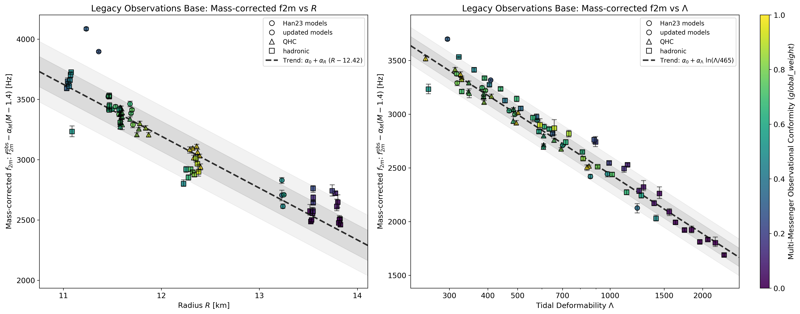
图注：Mass-corrected dominant post-merger frequency $\delta f_2\equiv f_{2,\rm mean}-\alpha_M\,(M-1.4\,M_\odot)$ as a function of stellar radius $R$ (left) and tidal deformability $\Lambda$ (right) for the Han23 baseline. Removing the leading mass dependence isolates the influence of the pre-merger compactness and of the supranuclear EOS. Marker shapes, color scale, and gray bands are as in Fig.~\(\ref{fig:fundamental_old}\); the dashed line is the best-fit trend.
对应解读：建议重点查看的图表第4、5项；关键图表逐图导读图3、图4；模型拟合段落关于去除质量依赖后考察 R 和 Λ 对 f2 的影响。
入选理由：该图是 Han23 基线下的质量修正频率 δf2 对 R 和 Λ 的关系图，清楚分离总质量主导趋势后剩余的紧致度/EOS 影响。它与 Fig07 形成旧基线和更新基线的对照，有助于说明结论不是单一后验选择的偶然结果。
来源与置信度：\(arxiv_source\)；high；\(arxiv_source\) / main.tex:figure[6]
Fig03
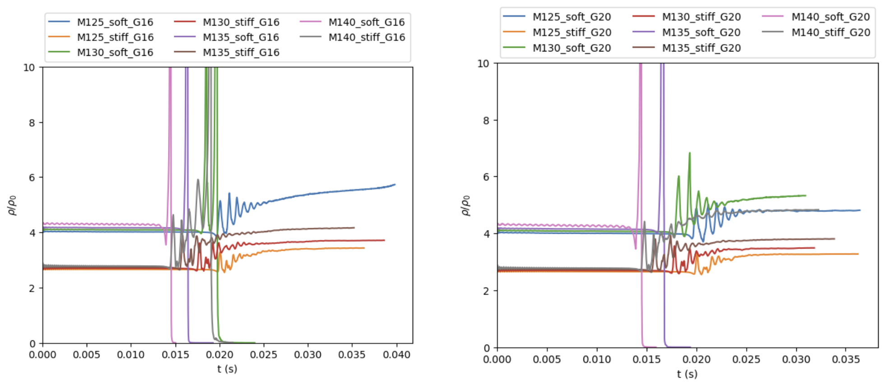
图注：As in Fig.~\(\ref{fig:rho_max_old},\) but for the updated configurations~\(\citep{Huang:2026jgl}\) evolved with thermal index $\Gamma_{\rm th}=1.6$ (left) and $\Gamma_{\rm th}=2.0$ (right). The stiff updated EOS produces a stable remnant at every mass considered here and for both thermal prescriptions, whereas the soft updated EOS causes collapse to a black hole (this is signalled by the abrupt drop of $\rho_{\rm max}$ to zero following a transient spike) at a certain threshold binary mass, which is smaller for smaller $\Gamma_{\rm th}$. In particular, the $M_{\rm NS}=1.30\,M_\odot$ soft model survives only for $\Gamma_{\rm th}=2.0$, illustrating how the weaker thermal pressure support at lower $\Gamma_{\rm th}$ reduces the effective maximum mass of the hot remnant.
对应解读：建议重点查看的图表第3、7项；关键图表逐图导读图6；模型拟合段落中关于快速坍缩、热处理参数和数值系统误差的失败场景讨论。
入选理由：该图给出更新 EOS 在 Γ_th=1.6 和 2.0 下最大密度随时间演化，显示软 EOS 在一定质量阈值以上会坍缩而硬 EOS 保持稳定。它不直接给出 f2 拟合，但对判断哪些模拟有清晰后并合频率、热压支撑如何影响残骸和频率样本选择非常关键。
来源与置信度：\(arxiv_source\)；high；\(arxiv_source\) / main.tex:figure[3]
强相关工作
这篇工作与双中子星后并合频率的准普适关系文献直接相连。早期研究常以大量冷 EOS 数值模拟建立 \(f_2\) 与半径、潮汐形变率或最大质量之间的经验关系，代表性检索关键词包括“binary neutron star post-merger \(f_2\) equation of state”、“Bauswein Stergioulas postmerger frequency radius relation”、“Takami Rezzolla Baiotti post-merger spectra”。本文的推进点不是发现 \(f_2\) 依赖 EOS，而是把 EOS 集合更新为受现代多信使约束的后验，并量化条件化后的残余不确定性。
它也与相变导致后并合频率异常的研究形成互补。若强子到夸克的一阶相变在并合残骸有限温度和高密度下发生，\(f_2\) 可能相对纯强子冷 EOS 基线发生显著偏移。相关检索关键词包括“hadron quark phase transition binary neutron star postmerger”、“Most Bauswein quark matter postmerger gravitational waves”、“finite temperature EOS neutron star merger”。潜在张力在于：有些模型把偏差解释为相变，有些则强调热压、质量比、磁场或数值系统误差；本文提供的窄冷基线有助于把这些解释放到统一误差预算中。
还应把本文放在多信使 EOS 反演的背景中阅读。GW170817、NICER 和重脉冲星共同约束冷 EOS，但不同群体对先验、核物理输入、相变参数化和 \(\rm pQCD\) 连接方式的处理不同。检索关键词可用“multimessenger neutron star equation of state posterior chiral EFT pQCD NICER GW170817”。读者在比较本文与其他 EOS 后验时，应特别注意先验体积效应和低高密度连接方式是否相同。
相似工作：
- https://arxiv.org/abs/1606.04855
- https://arxiv.org/abs/1403.5301
- https://arxiv.org/abs/1412.3243
基础理论 / 方法工作：
- https://arxiv.org/abs/1710.05832
- https://arxiv.org/abs/1805.11581
- https://arxiv.org/abs/2105.06981
- https://arxiv.org/abs/2006.04947
相反观点 / 张力线索：
- https://arxiv.org/abs/1809.01116
- https://arxiv.org/abs/1904.01306
9. The Effects of Cosmic Ray Protons on Galactic Nonthermal Filaments
- 来源：arXiv / astro-ph.HE
- 链接：https://arxiv.org/abs/2606.07733v1
- 作者：Mohan Richter-Addo, Roark Habegger, Ellen Zweibel, Dylan M. Paré, David T. Chuss
- 评分：novelty 7/10，importance 7/10，relevance 9/10，final 8.70/10
- 推荐理由：研究银河中心非热丝状体中的宇宙线质子/轻子传播、同步辐射和MHD影响，直接涉及宇宙线与银河中心非热现象，值得关注。
中文题目：宇宙线质子如何影响银河系中心非热丝状体
做了什么：这篇文章用改造过的磁流体力学代码 Athena++ 模拟银河系中心非热射电丝状体中宇宙线的传播，重点比较两类供能图像：由脉冲星风云喷流注入、以轻子为主的模型，以及由星际激波加速、以质子为主的模型。作者把电子、正电子和质子宇宙线的扩散、辐射损失、碰撞损失和对等离子体的加热放进同一套模拟，扫描磁场强度、气体密度和扩散系数等银河系中心可能取值。主要结论是：仅靠丝状体的同步辐射形态和亮度，很难清楚地区分质子主导和轻子主导注入；与实际观测性质比较后，作者认为还应认真考虑第三种可能，即非热丝状体可能不是单个源持续注入的“管道”，而是银河系中心湍流中间歇出现的磁化结构被宇宙线照亮。
为什么重要：银河系中心非热丝状体是研究强磁场、宇宙线输运和中心分子区湍流的少数可空间分辨实验场。它们几十秒差距长、很窄、偏振强，但起源长期不清楚。如果不同注入机制在可观测射电性质上几乎不可分，这意味着过去把某一条丝状体直接解释为脉冲星喷流或激波加速遗迹可能过于乐观，也提示需要联合谱指数、偏振、法拉第旋转、气体环境和高能伽马射线约束。
理论 / 观测 / 仪器方法价值：方法上，这项工作把多组分宇宙线流体、同步辐射冷却、库仑和强子碰撞损失以及 MHD 背景演化结合起来，给出了一个可扩展的数值框架。理论价值在于它说明了质子宇宙线虽可通过碰撞加热气体、影响流场，但并不必然留下简单、唯一的射电形态诊断。观测价值在于它把哪些量有判别力、哪些量容易退化讲得更清楚：单频亮度图不够，频谱老化、宽度随频率变化、环境密度、磁场几何和偏振结构更关键。
为什么应该关注：如果你关心银河系中心磁场、宇宙线压力、中心分子区能量收支或非热射电结构，这篇文章值得看，因为它直接挑战了“看到细长同步辐射丝就能反推出单一注入源”的简单图像。它提醒我们：非热丝状体可能更多是湍流磁场和宇宙线背景共同选择出来的可见结构，而不一定是某个源沿磁力线稳定输运的示踪线。
展开详细解读：文章讲解、背景、理论、重点章节、图表与相关工作
文章详细讲解
科学问题：银河系中心有大量非热射电丝状体，典型长度为数十秒差距、宽度远小于长度，呈强同步辐射和明显线偏振。核心问题不是它们是否含有相对论电子——同步辐射已经要求这一点——而是这些电子和可能伴随的质子从哪里来、如何沿磁场传播，以及丝状体本身是源的产物还是环境结构的产物。文章集中比较两种常见机制：脉冲星风云或喷流类源注入轻子，使丝状体成为轻子主导的非热结构；星际激波或云云碰撞加速大量质子，使丝状体成为质子主导的宇宙线通道。
作者怎么做：作者使用 Athena++ 进行磁流体力学模拟，并在代码中加入多种宇宙线组分和能量损失过程。轻子组分主要影响同步辐射可见性，并受到同步辐射和可能的碰撞损失限制；质子组分辐射损失较慢，但可通过库仑、强子碰撞等过程向热气体沉积能量，并改变局部压力梯度和等离子体流动。文章扫描了磁场强度、背景等离子体密度、宇宙线扩散系数等参数，因为这些量在银河系中心都存在大范围不确定性，而且它们共同决定宇宙线能否在丝状体寿命内传播到几十秒差距尺度。
关键结果：模拟显示，质子主导和轻子主导模型在许多射电可观测量上并不容易区分。原因是射电同步辐射最终主要由相对论轻子决定；即便质子携带了大部分非热能量，只要少量次级或伴随轻子产生相似的空间分布，射电图像就会出现高度退化。质子模型更容易通过碰撞损失加热气体并驱动局部流动，但这些动力学差异未必直接转化为当前射电观测可清楚识别的特征。把模型和已知丝状体长度、亮度、寿命、可能的环境条件比较后，作者认为单源持续注入图像面临限制，银河系中心湍流中间歇形成的强磁化细丝可能是更自然的候选框架。
局限和下一步：这类模拟不可避免依赖简化几何、有限动态范围和参数化的扩散系数。真实银河系中心的磁场拓扑、湍流各向异性、源分布、云-云碰撞历史和辐射场都更复杂。论文的结论不是说质子或轻子模型被排除，而是说现有射电形态和亮度诊断不足以单独区分它们。下一步应把频率依赖的谱指数图、偏振和法拉第旋转测量、热气体线宽和温度、伽马射线或中微子上限，以及三维湍流背景中的宇宙线输运统一起来检验。
背景知识
银河系中心非热丝状体是在射电波段发现的一类长而窄的同步辐射结构，集中分布在中心数百秒差距区域。它们通常比普通超新星遗迹壳层或 HII 区边界更细长，许多还显示高线偏振，说明辐射来自有序磁场中的相对论电子。早期研究常把这些结构视为银河系中心强大、垂直于银盘的大尺度磁场的证据，但后来的高分辨率巡天显示丝状体方向、长度、曲率和环境关联比单一全局磁场图像复杂得多。
历史上的主要争论有两类。第一类关心“粒子从哪里来”：可能是附近脉冲星风云、恒星团风、超新星遗迹激波、云云碰撞激波，或更弥散的银河系中心宇宙线海。第二类关心“丝为什么是丝”：可能是磁场本身形成细长通道，也可能是粒子注入被局限在细长区域，或者是湍流和磁重联在局部增强了可见同步辐射。不同图像对磁场强度、宇宙线能量密度和中心分子区反馈都有不同含义。
观测背景正在快速变化。MeerKAT、VLA 和其他射电阵列对银河系中心给出了前所未有的连续谱、偏振和多频图像，使得大量新丝状体被编目。与此同时，X 射线、红外和毫米波数据改善了我们对热等离子体、分子云、恒星形成和激波环境的认识。正因为数据变多，过去依赖个别明亮丝状体的解释开始显得不够稳健，需要用数值模拟把不同物理过程放在同一框架下比较。
这个问题现在值得重新看的原因还包括宇宙线输运理论本身的进展。银河系中心的磁场可能强、湍流强、密度高、辐射场强，这些条件都不同于银河盘平均环境。宇宙线沿磁场各向异性扩散、自激发波散射、流体不稳定性和碰撞损失都可能改变经典扩散图像。若把本地银河宇宙线传播参数直接套到银河系中心，可能会严重误判丝状体寿命和供能需求。
一个常见误区是把非热射电亮度直接等同于总宇宙线能量。实际上同步辐射主要看相对论轻子和磁场，质子即使携带大部分能量也可以在射电上“隐身”。另一个误区是把细长形态自动解释为粒子从端点源注入后沿磁力线传播；同样细长的亮度结构也可能来自预先存在的磁场增强、局部扩散系数降低或背景宇宙线被湍流结构调制。
基础理论 / 方法脉络
最基本的物理图像是：相对论带电粒子在磁场中螺旋运动并发出同步辐射。对给定频率的射电观测，主要贡献来自某一能量范围的电子或正电子；磁场越强，同样频率对应的电子能量越低，但同步冷却也越快。因此，丝状体的长度、宽度和频谱并不只由注入源决定，而是由粒子能量、磁场强度、扩散或平流速度以及损失时间共同决定。
宇宙线质子和轻子在这里的差异很关键。电子和正电子能直接产生射电同步辐射，并在强磁场中迅速冷却；质子辐射效率低得多，但寿命长、能携带大量压力，并能通过库仑相互作用和强子碰撞加热气体、产生次级粒子和伽马射线。若丝状体是质子主导的，射电图像仍可能由少量伴随轻子或次级轻子控制，所以射电形态未必能揭示能量主导组分。
本文采用的模型思想是把宇宙线作为与热等离子体耦合的流体或近似流体组分处理，而不是逐粒子追踪。宇宙线能量密度在磁场中扩散，也可随等离子体平流，并通过损失项减少。热气体则受到磁压力、气体压力、宇宙线压力梯度和能量沉积的影响。这样的 MHD 框架适合探索几十秒差距尺度的整体传播和反馈，但不能解析微观波粒相互作用。
观测上，模拟结果需要转化为同步辐射表面亮度、谱指数、宽度和长度等量。最直接的诊断是某一频率下的亮度沿丝状体轴向如何衰减，以及不同频率的亮度比如何变化。如果高能电子在传播途中冷却，应出现谱指数沿传播方向变陡或高频长度变短；如果结构主要由磁场间歇增强决定，则亮度增强可能不伴随简单的冷却梯度。
主要退化来自磁场和电子归一化之间的耦合：同步辐射亮度随电子数密度和磁场强度共同变化，单频数据很难把二者分开。扩散系数、注入年龄和损失率之间也有退化；较快扩散、较年轻年龄和较弱冷却都能产生较长丝状体。此外，银河系中心前景背景复杂，缺失短基线、去背景方式和热射电污染都会改变丝状体表面亮度与宽度测量。
公式与推导
第一步从相对论粒子在磁场中的同步辐射特征频率开始。对洛伦兹因子为 \(\gamma\) 的电子，在垂直磁场分量 \(B_\perp\) 中的特征频率近似为
其中 \(e\) 是元电荷，\(m_e\) 是电子质量，\(c\) 是光速。这个式子告诉我们给定观测频率 \(\nu\) 时主要看到哪一能量的轻子，也说明磁场越强，同频率辐射所需的 \(\gamma\) 越低。
第二步写出单个电子的同步辐射损失率。在各向同性 pitch angle 近似下，
其中 \(\sigma_T\) 是 Thomson 截面，\(U_B\) 是磁能密度，\(E_e=\gamma m_e c^2\)。由此得到同步冷却时间
这个时间尺度与传播时间比较，决定是否应在丝状体中看到谱老化。
第三步把粒子谱连接到射电发射率。若轻子能谱近似为幂律 \(N_e(E)dE=K_e E^{-p}dE\)，则体发射率可写成标度关系
这里 \(K_e\) 是轻子谱归一化，\(p\) 是能谱指数。观测谱指数 \(\alpha\) 满足 \(I_\nu\propto \nu^{-\alpha}\)，理想情况下 \(\alpha=(p-1)/2\)。这也展示了 \(K_e\) 与 \(B\) 的强退化。
第四步描述宇宙线能量密度的输运。对某一宇宙线组分 \(i\)，一维近似下可写为
其中 \(e_{{\rm cr},i}\) 是宇宙线能量密度，\(P_{{\rm cr},i}\) 是宇宙线压力，\({\bf u}\) 是气体速度，\(\kappa_i\) 是扩散系数，\(\Lambda_i\) 是损失率，\(Q_i\) 是注入项。本文比较的轻子主导和质子主导模型，本质上是在改变 \(Q_i\)、\(\kappa_i\) 和 \(\Lambda_i\) 的组合。
第五步给出传播长度的最简估计。若扩散占主导，粒子在时间 \(t\) 内的典型传播尺度为
若平流占主导，则
把 \(t\) 取为 \(t_{\rm syn}\) 或碰撞损失时间，就能快速判断电子能否在冷却前跑完整条几十秒差距的丝状体；质子由于损失时间长，通常更容易传播得远。
第六步写出质子碰撞损失的量级。高能质子与气体发生非弹性 \(pp\) 碰撞的时间尺度可近似为
其中 \(n\) 是气体数密度，\(\sigma_{pp}\) 是非弹性碰撞截面，\(k_{pp}\) 是非弹性能量损失比例。这个式子说明高密度环境会强化质子能量沉积和次级粒子产生，但低密度丝状体中质子可能几乎无辐射地穿过。
第七步把模拟量转成表面亮度。沿视线 \(s\) 积分有
若考虑仪器波束，还需与点扩散函数 \({\cal B}\) 卷积：
这里 \(I_{\nu}^{\rm bg}\) 表示背景和前景成分。这个关系解释了为什么细丝宽度、边缘梯度和低亮度延伸会受分辨率与背景扣除影响。
第八步给出比较模型与观测的常用统计量。若每个像素或径向 bin 的测量为 \(D_k\)，模型为 \(M_k(\boldsymbol{\theta})\)，误差为 \(\sigma_k\)，可用
或相应的高斯似然 \({\cal L}\propto \exp[-\chi^2/2]\)。参数 \(\boldsymbol{\theta}\) 可包括 \(B\)、\(n\)、\(\kappa\)、注入功率和年龄。若不同 \(\boldsymbol{\theta}\) 给出相近 \(\chi^2\)，就体现了论文强调的可观测退化。
模型拟合 / 应用方法
这篇文章更接近参数扫描和物理判别，而不是对某一条丝状体做全贝叶斯反演。实际可拟合的量包括丝状体长度、横向宽度、峰值表面亮度、沿轴向的亮度衰减、谱指数分布、偏振方向以及可能的热气体响应。模型参数则包括磁场强度 \(B\)、气体密度 \(n\)、宇宙线扩散系数 \(\kappa\)、注入能量、注入持续时间、轻子与质子的能量比例，以及背景流速和磁场几何。
若把模拟结果与观测图像比较，最自然的似然来自图像像素、纵向剖面或横向剖面的残差。但银河系中心射电图像存在强相关噪声和复杂背景，不能简单把每个像素当作独立高斯测量。更稳健的做法是压缩为物理摘要量：例如半高宽、长度、总通量、谱指数梯度、偏振分数和法拉第旋转梯度，再为这些摘要量建立协方差矩阵。
参数退化非常强。同步亮度中的 \(K_e\) 与 \(B\) 退化最直接；扩散系数 \(\kappa\) 与年龄 \(t\) 通过 \(\ell\sim (\kappa t)^{1/2}\) 退化；注入功率与填充因子退化；气体密度 \(n\) 与质子碰撞损失和加热效率退化。质子主导模型还可能通过次级轻子产生射电，但次级产生率又依赖 \(n\)、质子谱和能量阈值，因此单靠射电亮度很难确定质子能量储量。
残差诊断应重点看模型是否系统性低估丝状体端部亮度、是否产生过强的中心集聚、是否预测了观测中没有的谱指数梯度，或是否要求不合理的磁场强度和注入功率。若一个模型在表面亮度上拟合良好，却需要远高于银河系中心可接受范围的宇宙线能量密度，物理上仍然不可取。反过来，湍流间歇结构模型可能更容易解释形态多样性，但必须证明它能在统计上产生足够多、足够窄、足够亮的同步辐射丝。
模型可能失败的地方包括：扩散系数被当作常数或简单各向异性参数，而真实输运可能由局部波湍流自洽调节；二维或理想化三维初始条件不能代表中心分子区复杂磁场；忽略或简化了再加速、磁重联、剪切和云体边界效应；以及没有同时拟合多频偏振数据。实际应用中，这项工作更适合作为判别哪些观测量值得投入的理论地图，而不是给出某条丝状体唯一的物理参数。
重点章节 / 结果段落怎么读
数据和科学动机部分应先读作者如何定义非热丝状体的典型观测约束：长度、宽度、同步辐射亮度、谱指数和银河系中心环境参数范围。这里的重点不是某个数值，而是作者选择哪些观测性质作为模型必须解释的基准。
方法部分是全文关键。读者应检查 Athena++ 中宇宙线组分如何实现，轻子和质子的损失项分别包括哪些物理过程，扩散是各向同性还是沿磁场优先，边界条件和注入几何如何设定。这些技术选择直接决定模拟能否代表脉冲星喷流、激波注入或湍流磁丝。
参数扫描结果部分要按物理量而不是按图号阅读：先看改变 \(B\) 对同步亮度和冷却长度的影响，再看改变 \(n\) 对质子碰撞加热的影响，最后看改变 \(\kappa\) 对丝状体长度和亮度分布的影响。这样能更清楚地理解退化关系。
比较轻子主导与质子主导模型的段落是论文的核心结论来源。读者应特别注意作者所谓“few observable differences”具体指哪些观测量相似、哪些量仍有潜在差异。不要把这个结论误读成两种模型物理上相同；它们的能量收支和气体反馈可能不同，只是当前射电可观测量不够敏感。
讨论部分提出第三种湍流间歇结构图像，是全文最值得延伸思考的地方。建议把它当成对前两类单源注入模型的压力测试：如果前两类模型需要精细调参才能解释群体性质，那么湍流统计模型是否能更自然地产生观测到的丝状体族群？
建议重点查看的图表
-
参数空间或初始条件示意图：看磁场、密度、扩散系数和注入方式的取值范围是否覆盖银河系中心的合理环境，而不是只展示少数有利案例。
-
宇宙线能量密度随时间演化图：比较轻子和质子在丝状体中的传播长度、能量保留和局部堆积位置，注意是否存在边界条件导致的人工反射或截断。
-
合成同步辐射图：看质子主导与轻子主导模型在表面亮度、宽度和端部形态上是否真的难分，尤其要关注是否做了相同波束卷积和动态范围限制。
-
沿丝状体轴向和横向的亮度剖面：这是连接模拟和观测的关键诊断。应看峰值位置、半高宽、指数衰减长度和低亮度翼部是否对参数敏感。
-
损失率或加热率分布图：对质子模型尤其重要。看能量沉积是否足以改变气体温度或速度，以及这种改变是否可能被 X 射线、毫米波谱线或射电自由-自由辐射约束。
-
参数扫描汇总表或相图：看哪些组合能产生观测长度和亮度，哪些组合被冷却、过强加热或能量预算排除。这里最能体现模型退化和可排除区域。
关键图表逐图导读
图 1：如果论文给出非热丝状体或模拟设置示意，横轴和纵轴通常对应空间坐标，颜色可能表示密度、磁场强度或宇宙线能量密度。读者应看注入区域相对于磁场方向的位置，以及边界离丝状体主体是否足够远。陷阱是把理想化直磁场几何误认为真实银河系中心磁场。
图 2：宇宙线传播演化图通常以时间序列展示 \(e_{\rm cr}\) 或压力分布。重点看轻子是否因同步冷却在源附近快速衰减，而质子是否更均匀延伸。若色标每一帧自动重标，视觉上的长度比较可能误导，需检查绝对归一化。
图 3：合成同步辐射表面亮度图的坐标轴应为空间位置，颜色为 \(I_\nu\) 或归一化亮度。模型线或不同面板可能对应轻子主导、质子主导和不同 \(B\)、\(n\)、\(\kappa\)。主要结论应从相同观测处理后的形态比较得出；若没有统一波束和背景，不能直接比较宽度与峰值。
图 4：亮度剖面或谱指数剖面应重点看纵向距离与 \(I_\nu\)、\(\alpha\) 的关系。若存在明显谱变陡，说明冷却或能量依赖输运重要；若不同模型剖面几乎重合，则支持作者关于射电诊断退化的结论。陷阱是谱指数受两个频段的背景扣除误差强烈影响。
图 5：气体加热、速度或温度响应图应关注质子模型相对于轻子模型的差异。坐标轴可能是位置或时间，颜色为加热率、温度或速度。若质子模型产生可观热响应，下一步就应寻找非射电约束；若响应很弱，则质子能量可能在射电上更难被识别。
图 6：参数扫描汇总图或表格应看观测允许区在 \(B\)-\(\kappa\)、\(n\)-\(\kappa\) 或注入功率-年龄平面上的形状。长条状置信区或多组离散可行区意味着退化严重。读图时不要只看最佳模型，还要看被排除模型为何失败。
论文原图 / 可嵌入图片
Fig04
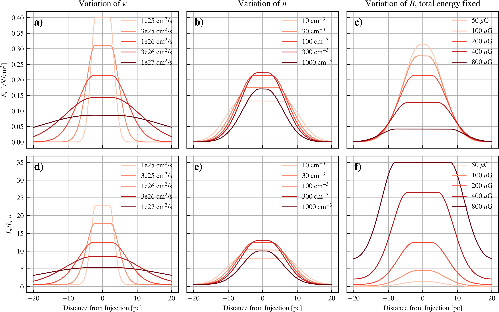
图注：Plots at $t=40 \kyr$ of the energy density (top row) and normalized luminosity per length (bottom row) within these lepton-only simulations. Left column, simulations
kvar[n]'': When changing the diffusion coefficient, the Gaussian wings get larger while the streaming length stays the same. Middle column, simulationsnvar[n]'': When changing the number density, the streaming length changes (as well as increases Coulomb losses), while the Gaussian wings stay the same. Right column, simulations ``Bvar_Econst[n]'': When changing the magnetic field, the streaming length changes and synchrotron losses increase, but here the luminosity is noticeably different as a result of forcing the critical synchrotron frequency to be constant, thus letting the luminosity probe lower-energy segments of the CR spectra. The $E_c$ plots for proton-included injections are roughly the same as these lepton-only simulations, though scaled up by approximately 100x. In parameter variations, variables not mentioned are held constant at the fiducial values.对应解读：建议重点查看的图表 3、4、6；关键图表逐图导读中的图 3/图 4；模型拟合段落关于长度、亮度剖面、B、n、κ 退化的讨论。
入选理由：这张图同时给出轻子模型在不同扩散系数、密度和磁场下的宇宙线能量密度与归一化单位长度亮度剖面，是连接模拟和观测的核心诊断。它直接展示传播宽度、流式传播长度、同步损失和亮度归一化如何随参数变化，比单纯的示意图更能支撑日报中关于轴向亮度剖面、参数退化和射电诊断难以唯一判别模型的解读。
来源与置信度：\(arxiv_source\)；high；\(arxiv_source\) / sample7.tex:figure[4]
Fig05
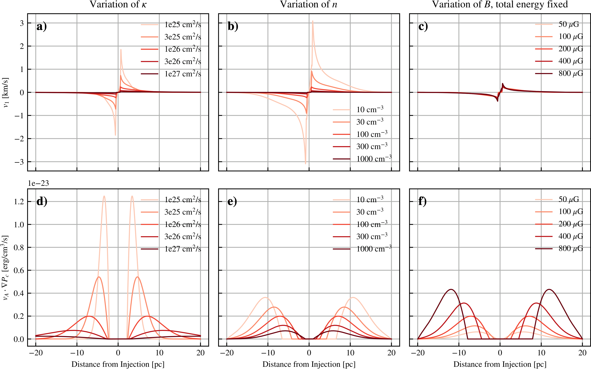
图注：Plots at $t=40 \kyr$ of the induced velocities and heating cause by streaming in the same simulations as Figure \(\ref{fig:EcLc},\) but now including protons. Left column, simulations
kvar[n]\_p'': When changing the diffusion coefficient, the energy gradient is sharper, which allows for more heating and induced flows. Middle column, simulationsnvar[n]_p'': As the number density lowers, the thermal pressure is lessened, which induces more flow in the background; the rise in heating comes from the dependence of $v_A$ on $n$. Right column, simulations ``Bvar_Econst[n]_p'': Changing the magnetic field does not affect the induced flow, but it does change $v_A$ which causes the heating to rise. The plots for lepton-only injections are roughly the same as these proton-included simulations, though scaled down by approximately 100x. In parameter variations, variables not mentioned are held constant at the fiducial values.对应解读：建议重点查看的图表 5；关键图表逐图导读中的图 5；详细解读中关于质子模型加热气体、驱动局部流动及非射电约束的段落。
入选理由：这张图专门展示含质子注入时由宇宙线 streaming 引起的速度和加热响应，并按 κ、n、B 参数扫描排列。它最直接支撑日报中质子主导模型是否会产生可观热响应、是否可由 X 射线或谱线观测约束的讨论，是区分射电形态退化之外物理效应的关键图。
来源与置信度：\(arxiv_source\)；high；\(arxiv_source\) / sample7.tex:figure[5]
Fig08
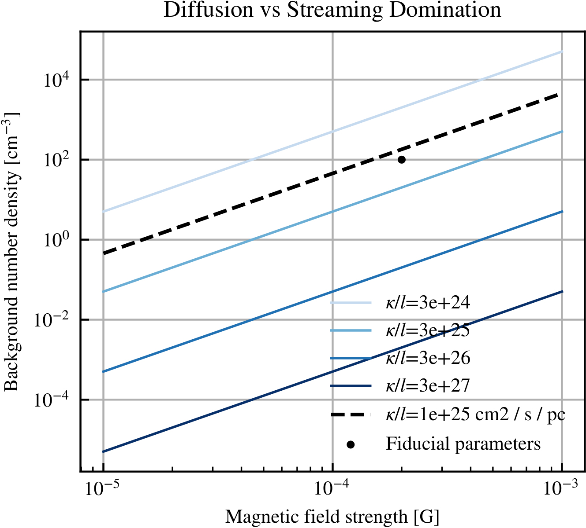
图注：Phase space of diffusion vs streaming domination given specific $B$ and $n_e$ values. Colored lines represent contours where diffusion and streaming have equal contributions: above these lines, diffusion dominates; below these lines, streaming dominates. These lines all follow the analytic form $v_A = \kappa/l$. The colored dot indicates our specific $(B,n_e)$ parameters for our simulation (which roughly corresponds to a $\kappa=10^{26}\cmcms$ if our filament is around 10pc long, unlike our initial choice of $\kappa=3\times10^{28}\cmcms$).
对应解读：建议重点查看的图表 1、6；关键图表逐图导读中的图 6；模型拟合段落关于 κ 与传播尺度、B 与 n 控制 Alfvén 速度的退化。
入选理由：这张相图给出扩散主导与 streaming 主导在 B、\(n_e\)、κ 和长度尺度上的分界，明确显示哪些参数组合对应不同输运机制。它比单个模拟快照更适合概括参数空间和可行区域，也能帮助读者判断论文采用的 κ 是否落在银河系中心非热丝状体的合理范围内。
来源与置信度：\(arxiv_source\)；high；\(arxiv_source\) / sample7.tex:figure[8]
Fig03
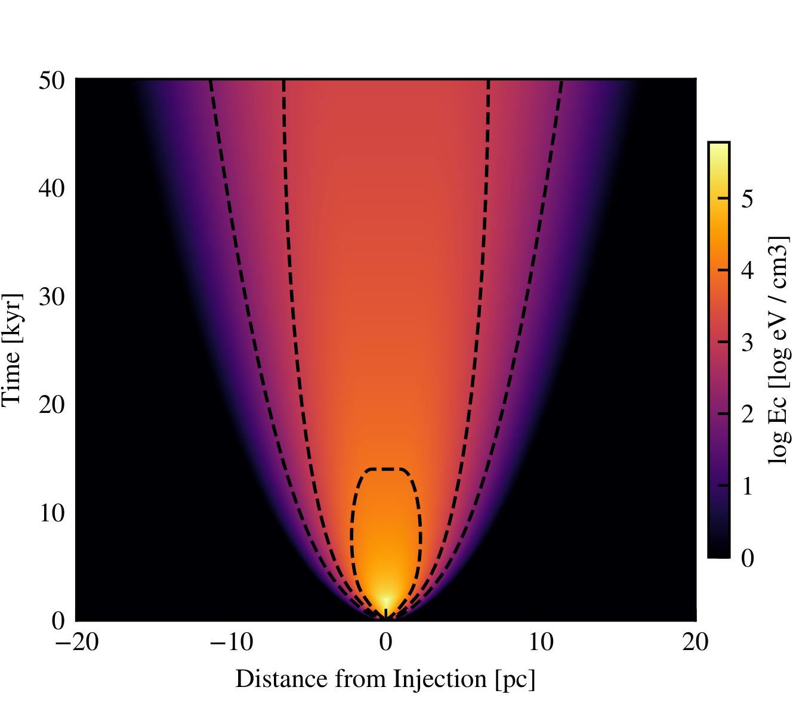
图注：Time evolution of the CR energy density in a 1D flux tube with $\kappa=10^{26}\cmcms$, $B=200\muG$, and $n_e=100\cm^{-3}$, in the case of a proton injection. We see a strong peak persist at the injection site for the duration of the injection which then diffuses and streams outward to overall double the background CR energy density at around 10kyr. Dotted contours trace lines of constant energy density, and are placed at {$10^2,10^3,10^4$} $\eVcm$.
对应解读：建议重点查看的图表 2；关键图表逐图导读中的图 2；详细解读中关于质子注入后能量保留、局部堆积和向外传播的讨论。
入选理由：这张时间演化图展示质子注入情况下 1D 磁通管内宇宙线能量密度如何从注入点峰值逐渐扩散和 streaming 到外侧，并带有等能量密度轮廓。它直接对应日报要求检查的宇宙线能量密度随时间演化、传播长度和源区堆积问题。
来源与置信度：\(arxiv_source\)；high；\(arxiv_source\) / sample7.tex:figure[3]
Fig02
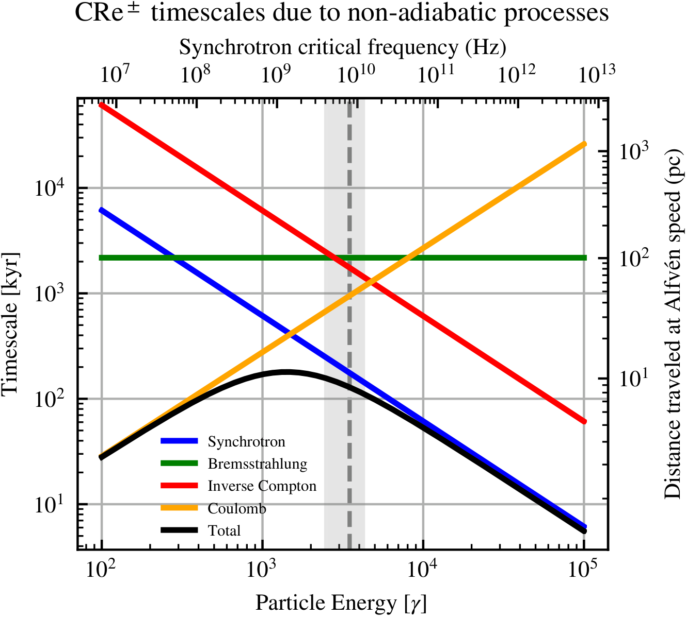
图注：Illustration of the loss timescales of CRe$^{\pm}$ through various processes as a function of the particle's $\gamma$. The blue line is the synchrotron timescale, the green line is the bremsstrahlung timescale, the red line is the inverse Compton timescale, and the orange line is the Coulomb timescale. The solid black line is the total loss timescale due to these combined processes. Both the top and right axes assume a magnetic field of $200\muG$, and the calculated lines additionally assume $n_p=100 \cm^{-3}$ and $U_{ph} = 100 \eVcm$. The gray region denotes the frequency range of 4--12 GHz as observed in the VLA C- and X- bands and the dotted gray line is at the median 8 GHz we assume \(\citep{Pare2022}.\)
对应解读：建议重点查看的图表 5；关键图表逐图导读中关于损失率和冷却诊断的内容；详细解读中关于轻子同步、逆康普顿、轫致辐射和库仑损失的物理基础。
入选理由：这张图系统比较相对论轻子的同步、轫致辐射、逆康普顿和库仑损失时间尺度，并标出 4–12 GHz 观测频段对应的粒子能量范围。它为理解为什么轻子会冷却、哪些能量段能产生 VLA 频段同步辐射、以及损失过程如何影响亮度和谱指数提供了必要物理基准。
来源与置信度：\(arxiv_source\)；high；\(arxiv_source\) / sample7.tex:figure[2]
Fig09
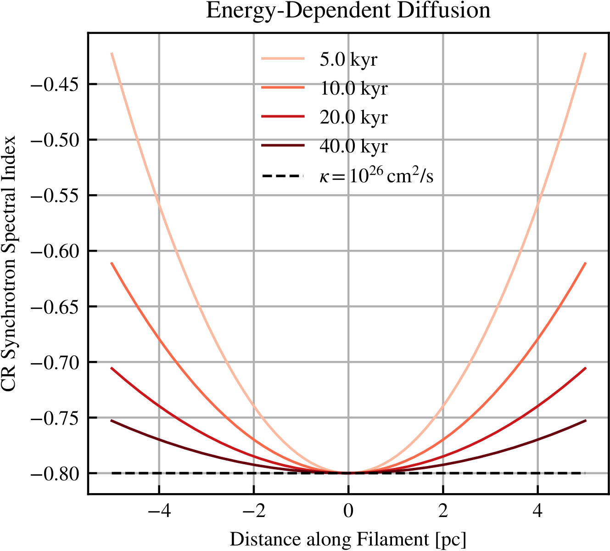
图注：Modeled spectral index due to energy-dependent diffusion at different ages with $\kappa=10^{26}\cmcms$ at this energy band. Here, we set the original power law spectrum to be $p=2.5$ and the energy-dependent diffusion index to be $q=0.2$ in order to get an equilibrium population index that matches 2.6, the power law index we assumed without energy-dependent diffusion.
对应解读：关键图表逐图导读中的图 4；模型拟合段落关于谱指数分布、能量依赖输运和背景扣除误差的讨论。
入选理由：这张图给出能量依赖扩散导致的谱指数随年龄变化，是少数直接对应多频射电可观测量的候选图。虽然它不如亮度剖面和加热图那样覆盖主要参数扫描，但能支撑日报中关于谱指数梯度是否可打破轻子/质子或输运退化的讨论。
来源与置信度：\(arxiv_source\)；high；\(arxiv_source\) / sample7.tex:figure[9]
强相关工作
这项工作与银河系中心非热丝状体的 MeerKAT 和 VLA 观测密切相关。相似观测工作通常关注丝状体目录、形态分类、谱指数、偏振和与分子云或恒星形成区的关联。建议检索关键词包括 “Galactic Center nonthermal filaments MeerKAT”、“radio filaments Galactic Center polarization”、“central molecular zone magnetic field”。这些观测提供本文模型需要解释的群体统计和个体剖面。
在理论上，它连接了宇宙线流体输运、同步辐射老化、质子碰撞损失和磁化湍流间歇性。相关基础文献可从宇宙线输运方程、同步辐射辐射机制、银河系中心磁场以及非热丝状体起源模型入手。建议检索 “cosmic ray transport MHD Athena++”、“synchrotron cooling radio filaments”、“cosmic ray protons Galactic Center heating”。
可能的相反观点包括：非热丝状体主要是大尺度有序磁场照亮的结构；主要由局部脉冲星风云或喷流驱动；主要由云-云碰撞或激波加速产生；或者只是背景宇宙线在湍流磁场增强区的可见投影。本文的贡献在于说明前两类注入成分在射电可观测上高度退化，并把湍流间歇结构提升为需要严肃检验的第三类解释。
相似工作：
- https://arxiv.org/abs/2606.07733
- https://ui.adsabs.harvard.edu/search/q=Galactic%20Center%20nonthermal%20filaments%20MeerKAT
- https://ui.adsabs.harvard.edu/search/q=radio%20filaments%20Galactic%20Center%20polarization
基础理论 / 方法工作：
- https://ui.adsabs.harvard.edu/search/q=synchrotron%20radiation%20cosmic%20ray%20electrons%20radio%20astronomy
- https://ui.adsabs.harvard.edu/search/q=cosmic%20ray%20transport%20magnetohydrodynamics
- https://ui.adsabs.harvard.edu/search/q=Galactic%20Center%20magnetic%20field%20nonthermal%20filaments
相反观点 / 张力线索：
- https://ui.adsabs.harvard.edu/search/q=Galactic%20Center%20nonthermal%20filaments%20pulsar%20wind%20nebula
- https://ui.adsabs.harvard.edu/search/q=Galactic%20Center%20radio%20filaments%20shock%20acceleration
- https://ui.adsabs.harvard.edu/search/q=Galactic%20Center%20radio%20filaments%20turbulence%20magnetic
10. PyCBC Live Search for Compact Binary Mergers in Advanced LIGO and Virgo's Fourth Observing Run
- 来源：arXiv / astro-ph.HE
- 链接：https://arxiv.org/abs/2606.07679v1
- 作者：Max Trevor, Gareth S. Cabourn Davies, Tito Dal Canton, Thomas Dent, Ian Harry, Stephanie Hoang, Arthur Tolley
- 评分：novelty 7/10，importance 8/10，relevance 8/10，final 8.70/10
- 推荐理由：PyCBC Live在LIGO/Virgo O4低延迟并合搜索中的改进，包含早期预警和电磁跟进触发；对GRB/多信使高能天文学有实用方法价值。
中文题目：PyCBC Live Search for Compact Binary Mergers in Advanced LIGO and Virgo's Fourth Observing Run
做了什么：本篇论文已通过推荐筛选，但自动详细解读生成失败。可先根据题目和摘要判断阅读优先级：PyCBC Live is a low-latency search pipeline that identifies gravitational waves from compact binary coalescences and provides alerts for electromagnetic follow-up. This paper presents improvements to PyCBC Live that were implemented for the fourth observing run (O4) of the LIGO-Virgo-KAGRA network, which operated from May 2023 to November 2025. The ranking statistic was enhanced to incorporate time-dependent background modeling using data quality streams and daily updates of the noise model. Follow-up capabilities were improved through refined probability of astrophysical origin calculations, optimized SNR recovery with reduced computational cost, and a method to incorporate Virgo as a sky-map-only detector. An Early Warning search was implemented to detect binary neutron star and neutron star-black hole systems before merger, providing pre-merger alerts with a pipeline latency of 2.5-3.5 seconds and warning times up to 60 seconds before coalescence. The autogating procedure was extended to apply to the full strain buffer rather than individual analysis segments, improving rejection of loud and rapidly successive glitches. Performance validation using the Mock Data Challenge showed sensitivity improvements of factors of 1.7 to 2.3 for the coincident search depending on source mass at an inverse false alarm rate of 10 years, and factors of 1.3 to 1.7 for the single-detector search. For injections in two-detector time, the O4 configuration identified 1979 of 2495 injections with a decisive SNR greater than 6 at a false alarm rate below one per year (79.3%), compared to 1262 (50.6%) with the O3 configuration. For injections in single-detector time, the O4 configuration identified 218 of 1174 injections (18.6%), compared to 170 (14.5%) with the O3 configuration. The search maintained a median latency of 15.94 seconds from merger to candidate upload.
为什么重要：这篇论文在今日候选中通过了本地推荐阈值，说明它与当前高能天体物理兴趣方向或质量标准较匹配；详细内容建议优先查看原文摘要、结论和图表。
理论 / 观测 / 仪器方法价值：由于 LLM 摘要 JSON 解析失败，本节保留为安全占位，不编造论文未确认的公式、图号或链接。
为什么应该关注：日报仍保留这篇论文，是为了避免单篇摘要失败导致整份日报缺失。请把它作为需要人工快速复核的高优先级候选。
展开详细解读：文章讲解、背景、理论、重点章节、图表与相关工作
文章详细讲解
本文的科学问题可以表述为：在 O4 的真实低延迟运行条件下，PyCBC Live 如何在不显著增加延迟的前提下提高 CBC 候选的发现效率、误报控制和随访可用性？这不是单纯提高模板数或降低 SNR 阈值的问题，因为低阈值会引入大量 glitch，模板库扩大也会增加试验因子。作者的策略是从候选排序、背景建模、数据质量利用、SNR 恢复、早预警和天空图生成多个环节同时修补。
方法层面，摘要说明排名统计量被增强为包含时间依赖背景模型，且噪声模型每日更新。这意味着候选的显著性不只由瞬时网络 SNR 决定，还要由候选出现时的探测器状态、数据质量流、模板区域背景以及近期噪声水平共同决定。若论文正文给出具体分箱、权重或背景更新公式，读者应检查这些选择是否有过拟合风险：例如每日更新是否会被少量 loud glitch 支配，数据质量流是否只在训练集有效，或者某些低占空比状态是否背景样本不足。
关键结果集中在 Mock Data Challenge 的注入恢复。摘要给出在 IFAR = 10 yr 处 coincident search 敏感体积提升因子约 1.7--2.3，single-detector search 提升约 1.3--1.7；两探测器时间内 O4 配置在 FAR < 1/yr 且 decisive SNR > 6 条件下找回 1979/2495 个注入，明显高于 O3 配置的 1262/2495；单探测器时间内为 218/1174，高于 170/1174。这里应重点核查分母的注入分布、质量和距离分布是否与真实宇宙先验一致，以及 decisive SNR > 6 是否用于排除边缘或定位不良候选。
低延迟性能由图 3 和图 4 支撑。图 3 给出 MDC 中 merger-to-upload latency 的累积分布，中位数 15.94 s，99.89% 事件在 50 s 内上传；这说明系统尾部延迟被控制在随访可接受范围内。图 4 则展示 SNR optimizer 相对原始上传的额外延迟和网络 SNR 改变量，均值额外延迟约 37 s、网络 SNR 平均增加约 1.64%。因此，SNR optimizer 更像是候选后续精炼步骤，而非首个低延迟告警的必要条件；读者需要区分“首次上传延迟”和“优化后更新延迟”。
局限性方面，摘要中的性能验证主要来自 MDC 和注入恢复，而真实 O4 数据中的 glitch 类型、非平稳性和数据质量标记覆盖率可能与 MDC 仍有差异。若论文给出 O4 实际告警统计，应检查真实候选分布是否与背景模型预测一致；若只给模拟挑战，则结论应限定为在该挑战数据和注入族上的相对改进。此外，Virgo 作为 sky-map-only detector 的处理方式可改善天空定位，但它对显著性和 \(p_ast\) 的贡献方式需要谨慎理解，不能简单等同于完整三探测器相干搜索。
下一步修复或扩展可以围绕三点展开：第一，用更长时间真实 O4 数据检验每日背景更新的校准度，尤其是 p-value 或 IFAR 的均匀性诊断；第二，将 early-warning 候选的实际天空面积、距离后验和源分类稳定性作为主要指标，而不只报告 warning time；第三，系统比较不同 glitch 门控策略对高质量 BBH、低质量 BNS 和边缘 NSBH 的注入损失，确认 autogating 的收益不是以牺牲罕见真实信号形态为代价。
背景知识
紧致双星并合（compact binary coalescence, CBC）低延迟搜索的核心目标，不是事后把所有可疑信号分析到最精确，而是在探测器数据到达后的几十秒内给出足够可靠的候选、显著性、源类型概率和天空定位，以便电磁望远镜或中微子设施开展随访。PyCBC Live 属于基于模板匹配的在线搜索管线，主要服务于双黑洞、双中子星和中子星—黑洞并合事件。它在历史上与 GstLAL、MBTA、SPIIR 等低延迟管线互补：不同管线在滤波实现、噪声背景估计、候选排序和质量控制上有所差异，多个管线并行有助于降低单一算法系统误差导致的漏报或误报。
本文研究对象是 Advanced LIGO、Virgo、KAGRA 网络第四轮观测运行 O4 中的 PyCBC Live 搜索配置。摘要给出的重点并非某一个单独天体事件，而是搜索管线本身的升级：时间依赖背景模型、每日噪声模型更新、改进的天体起源概率、SNR 优化器、Virgo 作为“仅天空图”探测器的并入方式、早预警搜索，以及更强的 autogating 瞬态噪声抑制。阅读时应把它当作一篇仪器/数据分析方法论文，而不是传统天体物理参数测量论文；最重要的结果是灵敏度、误报率、延迟和鲁棒性诊断。
低延迟 CBC 搜索的困难来自两个事实。第一，引力波干涉仪噪声强烈非平稳，短时 glitch、散射光、校准或数据质量问题会让“高 SNR”不等于“高可信度”。第二，电磁随访要求很快，尤其是 BNS/NSBH 早预警需要在并合前几十秒给出候选；但越早截断波形，可用的高频信息越少，天空定位和质量分类也更不稳定。因此，O4 版本的改进需要同时回答两个问题：在固定误报率下能否找到更多真实注入信号，以及在更严格的低延迟约束下是否仍能保持可用的显著性和上传稳定性。
一个常见误区是把摘要中的“灵敏度提升因子 1.7 到 2.3”理解为所有源的探测距离都按该因子增加。论文图 2 的量是 sensitive volume ratio，即在给定 IFAR 阈值下 O4 与 O3 排名统计量对应的敏感体积比；若空间均匀且选择函数简单，距离尺度约按体积比的三次方根增长。另一个误区是把 \(p_ast\) 当作单个候选为真实天体事件的绝对真理。实际上 \(p_ast\) 依赖背景模型、天体发生率先验、模板族分箱和候选排名统计量；它是低延迟告警分发中的实用概率量，而不是独立于模型假设的观测事实。
这篇论文的动机还包括 O4 数据环境与 O3 不同：探测器灵敏度、运行占空比、Virgo/KAGRA 加入方式、数据质量流和低延迟告警基础设施均可能变化。若仍使用 O3 的静态或较粗糙背景估计，就可能在噪声较差时低估误报、在噪声较好时低估灵敏度。本文强调“time-dependent background modeling”和“daily updates of the noise model”，说明作者把非平稳噪声看作 O4 在线搜索的主要限制因素之一。
基础理论 / 方法脉络
CBC 模板匹配的基础图像是：广义相对论给出双星并合波形族，探测器记录的应变数据可近似写成噪声加信号。若噪声是平稳、高斯且功率谱密度已知，最优线性检验就是把数据同噪声加权后的模板做内积，得到匹配滤波 SNR。真实 LIGO/Virgo 数据并不满足理想高斯假设，因此低延迟搜索必须在匹配滤波之外加入一致性检验、数据质量 veto、时间滑移背景或经验背景模型。
对于多探测器网络，真实天体信号应在不同探测器中以符合光行时、天线响应和相位关系的方式出现。PyCBC Live 的 coincident search 将单探测器触发组合成网络候选，再按排名统计量估计其显著性。这里的“显著性”通常用 false alarm rate 或 inverse false alarm rate 表达：在纯噪声假设下，达到或超过该候选排名统计量的背景事件预期多久出现一次。O4 改进的关键之一是让背景估计随时间和数据质量状态变化，而不是把整个观测期当作同一噪声过程。
BNS/NSBH 早预警搜索与常规并合后搜索有不同的信号处理问题。低质量双星在探测器频带中停留时间长，低频段已经携带可检测相位演化；在并合前截断模板可以提前触发，但代价是积累的 SNR 下降、质量和并合时间估计更不稳定、天空定位退化。本文摘要中提到早预警 pipeline latency 约 2.5--3.5 s、warning time 可达 60 s，应理解为管线内部从数据到候选的处理速度与物理上离并合尚有的时间共同决定最终可用预警。
自门控 autogating 处理的是另一类实际问题：短时大幅 glitch 会污染匹配滤波输出，并可能在多个模板或相邻分析段中制造一串触发。O4 将 autogating 扩展到完整 strain buffer 而不是单个 analysis segment，目标是避免 glitch 恰好跨段或快速连续 glitch 被局部处理遗漏。阅读时应重点看这种修改是否只降低误报，还是会误伤真实高质量并合信号；理想诊断是注入恢复率、背景尾部分布和被门控数据比例随时间的变化。
本文还涉及天体起源概率 \(p_ast\)。直观上，如果候选排名统计量很高并处在历史上真实事件多、背景少的参数区域，\(p_ast\) 应提高；如果该区域模板数量巨大、背景触发多或数据质量差，则 \(p_ast\) 应降低。图 1 中按啁啾质量分箱的模板数和 O1--O3 探测计数，就是把历史先验与当前候选排序连接起来的线索。需要注意的是，模板数多并不必然意味着天体率高，它也可能只是覆盖参数空间所需的计算离散化更密。
公式与推导
可从单探测器数据模型开始理解本文的搜索统计量。设探测器应变为
其中 \(i\) 标记探测器，\(n_i\) 是噪声，\(h_i\) 是由源参数 \(\theta\) 决定的模板波形。理想情况下噪声平稳且可由单边功率谱密度 \(S_{n,i}(f)\) 描述；本文的 O4 改进正是针对真实数据偏离这一理想条件时的背景和数据质量修正。
噪声加权内积定义为
在高斯噪声假设下，匹配滤波 SNR 为
这里 \(t_c\) 是并合时间或模板参考时间。每日更新噪声模型可理解为更新 \(S_{n,i}(f,t)\)，从而改变内积权重和触发 SNR 的校准。
多探测器候选常用近似网络 SNR 表示为
但实际排名统计量还需包含相位、时间一致性、模板参数、数据质量和噪声背景。可抽象写成
其中 \(q_{\rm DQ}\) 表示数据质量状态，\(t\) 表示噪声随时间变化。本文的 time-dependent background modeling 就是让同一 \(R\) 在不同噪声状态下对应不同的误报预期。
若背景事件的排名统计量分布为 \(N_{\rm bg}(>R)\)，有效背景时间为 \(T_{\rm bg}\)，则误报率可估计为
在时间依赖背景中，更合理的写法是对状态 \(s\) 分箱：
然后按候选所在状态或状态后验加权。读图 2 时，横轴 IFAR 就是由这类背景校准得到的显著性尺度。
灵敏体积可由注入恢复估计。对注入集合 \(k\)，若第 \(k\) 个注入代表体积权重 \(w_k\)，并在阈值 \(R_*\) 或 IFAR 阈值下被找回，则
其中 \(I\) 是指示函数。论文图 2 的比值可写成
若源在欧氏空间均匀分布且选择函数只由距离决定，则距离尺度提升近似为 \(\mathcal{G}^{1/3}\)，这有助于避免把体积比误读为距离比。
早预警搜索依赖并合前已积累的 SNR。截断到当前最高频率 \(f_{\rm cut} 牛顿阶啁啾时间与频率关系为 其中 \(\mathcal{M}_c=(m_1m_2)^{3/5}(m_1+m_2)^{-1/5}\) 是啁啾质量。该式解释了为什么低质量 BNS 可以在并合前更早进入可探测频段。 天体起源概率可用信号和噪声事件率的混合模型表达： 这里 \(\Lambda_s\) 和 \(\Lambda_n\) 是信号与噪声率，\(p_s,p_n\) 是在排名统计量和模板参数空间中的概率密度。图 1 中模板数和历史探测计数可以看作构造 \(\theta\) 相关先验或经验率估计的输入之一。适用条件是历史样本、当前模板族和 O4 选择效应之间没有严重错配；否则 \(p_ast\) 需要重新校准。 本文的“拟合”不一定表现为传统天体物理参数后验图，而更多是搜索统计量和噪声背景模型的校准。核心拟合量包括：单探测器和网络 SNR、候选 ranking statistic、FAR/IFAR、\(p_ast\)、敏感体积、注入恢复率以及上传延迟分布。若论文正文给出参数化背景模型，应把数据质量状态、时间分箱、模板分箱和噪声 PSD 更新看作模型参数或超参数。 似然/后验层面，可以把候选排序理解为信号模型与噪声模型的似然比近似。理想形式是 \(\Lambda(x)=p(x|\mathrm{signal})/p(x|\mathrm{noise})\)，其中 \(x\) 包含 SNR、一致性检验、模板参数和探测器组合。\(p_ast\) 则是在似然比之外再乘以天体发生率先验或历史经验率。阅读时应核查作者是否显式区分训练背景、验证背景和最终评估数据；如果同一 MDC 数据既用于调参又用于报告性能，提升幅度可能偏乐观。 残差诊断应围绕“背景模型是否校准”展开。可检查不同时间段、不同数据质量状态、不同质量 bin、不同探测器组合中的背景触发是否在统一 FAR 尺度下表现一致。理想情况下，在纯噪声样本中，按模型计算的 p-value 应近似均匀；IFAR 阈值为 1 yr 的事件数应与背景时间一致。若某些状态下候选显著性系统偏高，说明 time-dependent background 没有完全吸收非平稳噪声。 参数退化主要来自 SNR、质量分箱、模板数量和数据质量之间的耦合。高质量 BBH 波形短，更容易与短时 glitch 混淆；低质量 BNS 波形长，早预警时只积累部分 SNR；单探测器时间缺乏多站一致性，只能更依赖背景和形态检验。因此同一 ranking statistic 改进可能对不同源类产生不同收益。图 2 按啁啾质量分箱正是为了暴露这种退化，不能只引用总体提升因子。 系统误差包括校准误差、PSD 估计偏差、模板波形不完备、自旋/偏心率覆盖不足、数据质量标记漏报、注入分布与真实宇宙不符，以及 MDC glitch 族与真实 O4 glitch 族不一致。对 Virgo 作为 sky-map-only detector 的处理，还应检查它是否只影响定位后验，还是间接影响候选优先级和随访策略。若论文没有给出这些系统误差的定量预算，读者应在复现或后续工作中用分层注入、留一时间段交叉验证和真实 O4 背景回放来补充。 模型可能失败的场景包括：长时间噪声状态突变导致每日更新太慢；罕见 loud glitch 进入高 IFAR 尾部而背景样本不足；autogating 在强真实信号附近误触发；early-warning 因低频噪声异常产生大量低 SNR 假触发；SNR optimizer 只提高少数事件而增加整体计算负担。判断这些失败模式是否严重，需要看尾部分布、失败案例表和按源类/探测器组合拆分的恢复率，而不是只看平均性能。 引言和 O4 运行背景：应先明确本文相对 O3 PyCBC Live 的增量是什么，而不是把所有低延迟 CBC 搜索知识都归于本文。重点标记作者列出的 O4 新需求：非平稳噪声、数据质量流、低延迟告警、早预警、Virgo/KAGRA 网络角色和 MDC 验证框架。 Ranking statistic 与 time-dependent background 部分：这是方法核心。阅读时要找出候选排序量包含哪些输入，背景如何分箱或更新，每日噪声模型如何进入 FAR/IFAR 估计。若正文有伪代码或公式，应检查状态变量是否足够解释 O4 噪声变化，以及是否存在小样本背景导致的高 IFAR 外推。 \(p_ast/Past\) 与源分类部分：结合图 1 阅读。重点看作者如何使用模板数、历史 O1--O3 探测计数和当前候选参数来估计天体概率。需要区分“事件是真实天体的概率”“事件属于 BNS/NSBH/BBH 的概率”和“适合电磁随访的概率”，这三者在告警系统中常被并列展示但含义不同。 Early Warning search 部分：应关注模板截断、触发阈值、预警时间定义和 pipeline latency 的拆分。摘要中的 2.5--3.5 s 是管线处理延迟，最多 60 s 是相对并合的预警时间，两者不是同一个量。还要看早预警是否只针对低质量系统，以及误报率控制是否与常规搜索一致。 Autogating 与数据质量处理部分：应检查门控窗口、触发条件、作用于 full strain buffer 的实现细节，以及对连续 glitch 和跨段 glitch 的改善证据。最好的阅读方式是把门控看作一种影响选择函数的预处理：它会降低噪声背景，也可能改变真实信号附近的数据。 MDC 性能验证与结果图表：最后集中阅读图 2、图 3、图 4 和注入恢复统计。要把 sensitive volume ratio、恢复数、FAR/IFAR 阈值、decisive SNR、上传延迟放在同一框架下判断。若某个指标提升而另一个指标恶化，例如 SNR optimizer 增加延迟或单探测器恢复率仍偏低，应在笔记中单独记录。 模板数与历史探测计数图：重点看按啁啾质量分箱后，模板数量和 O1--O3 探测计数是否在同一质量区间有明显不匹配。该图用于理解 \(p_ast\) 或 Past 估计的先验来源，不能只看历史探测多的 bin，还要看模板试验因子是否同步增加。 敏感体积比—IFAR 阈值图：这是验证 O4 相对 O3 排名统计量提升的核心图。应检查横轴 IFAR 阈值从低到高时曲线是否稳定高于 1，是否只在少数阈值处提升；还要区分 coincident search 与 single-detector search，以及不同啁啾质量区间的提升是否一致。 注入恢复率表或柱状诊断：摘要给出两探测器时间和单探测器时间的恢复数，应检查这些数是否按 FAR、SNR、质量、距离或源类型分解。若只给总数，可能掩盖某些子类源变差而总体变好的情况。 latency 累积分布：图 3 的 merger-to-upload latency CDF 应看中位数、90%/99% 分位数和尾部异常点。低延迟管线最怕少数事件因计算拥塞或数据质量处理滞后而错过随访窗口，因此尾部比均值更关键。 SNR optimizer 性能图：图 4 应同时看额外上传延迟和网络 SNR 变化。若 SNR 增益集中在少数高 SNR 事件，平均 +1.64% 可能对总体显著性提升有限；若延迟尾部很长，则该步骤更适合作为更新告警而不是初始告警。 early-warning 触发诊断：若正文有预警时间、预并合 SNR、天空定位面积或源分类概率随截断频率变化的图，应检查 warning time 与误报率之间的折中。预警越早通常 SNR 越低，不能只报告最大 60 s。 背景/排名统计量校准图：应寻找 noise background、ranking statistic、IFAR 或 FAR 的分布诊断。理想图应显示真实或模拟背景事件尾部、候选位置以及 O3/O4 排名统计量的差异，用于判断提升是否来自更好建模而非阈值选择。 autogating 或数据质量 veto 诊断：若有门控前后触发率、loud glitch 案例或被移除数据比例图，应检查门控是否在 glitch 丰富时显著降低背景，同时不在注入附近系统性削弱真实信号。 图 1：该图展示按啁啾质量 bin 划分的模板数量和 O1--O3 探测计数，用于计算 Past 或 \(p_ast\) 相关估计。读上半部分时，横轴应是啁啾质量区间，纵轴为每个区间模板数量；模板多的区域意味着试验因子更大，也可能对应参数空间覆盖更细。读下半部分时，纵轴为历史探测计数，代表经验上的天体事件分布线索。陷阱是把探测计数直接当作宇宙真实发生率：历史探测计数已经被 O1--O3 选择函数、探测距离和 pipeline 灵敏度过滤，不能脱离选择效应使用。 图 2：这是全文最关键的性能图，标题说明它给出 O4 相对 O3 ranking statistic 的 sensitive volume ratio 随 IFAR threshold 的变化。上面板为 coincident search，分成六个啁啾质量区间；下面板为 single-detector BNS/NSBH search，分成三个啁啾质量区间。横轴 IFAR 越大，代表越严格的显著性要求；纵轴大于 1 表示 O4 配置在同一阈值下更敏感。应检查曲线在 IFAR = 10 yr 附近是否与摘要中的 1.7--2.3 和 1.3--1.7 一致，以及高 IFAR 端误差是否因背景样本不足而变大。陷阱是忽略质量分箱：总体提升可能由某些质量段主导。 图 3：该图是 MDC 中 merger-to-upload latency 的累积分布。横轴为从并合到候选上传的延迟秒数，纵轴为累计比例；中位数标为 15.94 s，图注还说明 99.89% 事件在 50 s 内。读这类 CDF 时，不应只看中位数，还要看曲线尾部何时接近 1，因为电磁随访对最晚告警有强约束。若曲线在 20--30 s 后仍有长尾，应检查这些事件是否来自特定源类、特定探测器组合或计算节点拥塞。 图 4：该图分析 SNR optimizer 在 MDC 上的性能。上面板给出相对原始 PyCBC Live upload 的额外上传延迟，均值约 37 s；下面板给出优化后网络 SNR 改变量，均值约 +1.64%。读图时要把两部分合起来：SNR 增益是否足以让边缘候选跨过显著性阈值？额外延迟是否仍满足随访更新需求？陷阱是把 optimizer 的延迟误认为首次告警延迟；它更可能影响后续更新候选的质量，而图 3 才对应初始上传的总体低延迟表现。 若正文还有 early-warning 图，应按“预警时间—误报率—定位面积”三角关系阅读。横轴若是 warning time 或截断频率，纵轴可能是 SNR、恢复率或天空面积；模型线通常显示更早触发会降低 SNR 或增大定位区域。最重要的残差/偏差诊断是：早预警候选是否集中在最优取向、近距离 BNS 注入上，是否对 NSBH 质量比和自旋更敏感。 若正文有背景分布或 ranking statistic 校准图，应看背景尾部是否平滑、O4 与 O3 曲线在哪些排名统计量范围分离、真实/注入候选是否位于预期高显著性区域。尾部台阶、少数 loud glitch 主导或某一数据质量状态贡献过多背景，都会削弱 IFAR 外推的可信度。 Fig02 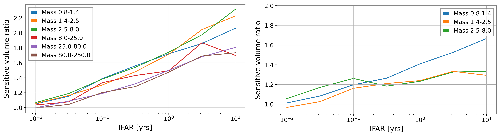 Fig03 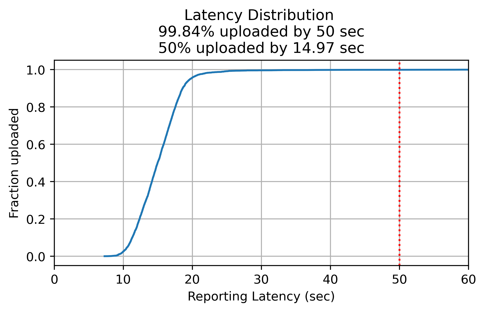 Fig04 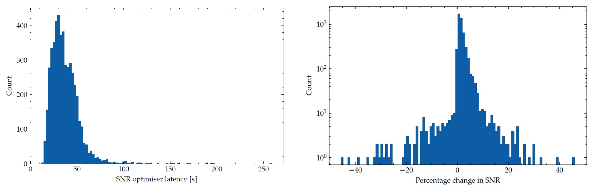 Fig01 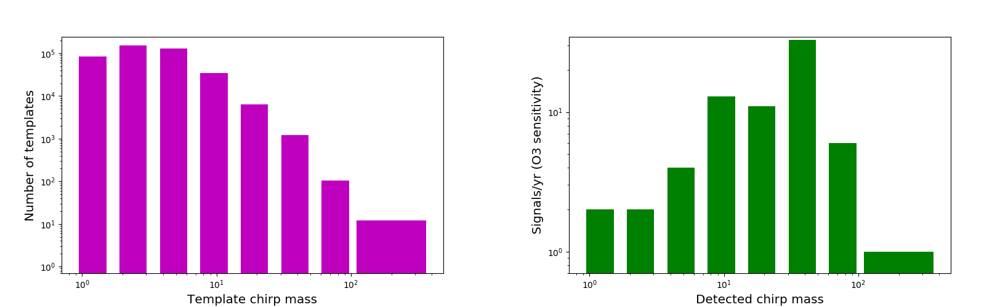 相关工作应沿三条线索检索。第一是 PyCBC 离线和低延迟搜索系列论文，包括 PyCBC matched-filter 方法、PyCBC Live 在早期观测运行中的实现、O3 搜索配置以及事件目录中的 PyCBC 结果。检索关键词可用“PyCBC Live low latency compact binary coalescence search”“PyCBC O3 ranking statistic”“matched-filter gravitational-wave search background estimation”。这些工作提供本文 O4 改进的基线，尤其是 O3 排名统计量、背景估计和单探测器搜索处理方式。 第二是其他低延迟 CBC 管线和 LVK 告警基础设施，例如 GstLAL、MBTA、SPIIR、BAYESTAR 天空定位、GraceDB/Superevent 系统和 LVK public alerts 相关论文。它们与本文构成方法对照：有的强调相干或似然比框架，有的强调快速滤波实现，有的在天空定位和告警合并上更关键。比较时应关注同一 MDC 或同一观测运行中的 FAR、latency、\(p_ast\) 和 sky localization，而不是跨不同数据集直接比较单个灵敏度数字。 第三是噪声非平稳性、glitch 缓解和数据质量 veto 研究，包括 LIGO detector characterization、gating、iDQ、scattering glitches、blip glitches 以及机器学习数据质量分类等方向。本文的 time-dependent background 和 full-buffer autogating 与这些工作密切相关。若要追踪张力线索，应查找门控是否可能削弱真实信号、数据质量标记是否引入选择偏差、以及高 IFAR 尾部背景外推在真实观测期中是否被后验验证。 早预警方面，应检索 BNS pre-merger detection、early warning gravitational-wave alerts、pre-merger localization、multimessenger follow-up readiness 等关键词。基础问题是：在并合前多少秒可以达到可接受 FAR，天空定位面积是否小到电磁望远镜可覆盖，源分类和距离估计是否稳定。本文摘要中的 60 s 最大 warning time 和 2.5--3.5 s pipeline latency 应放在这些工作中比较，尤其要区分模拟注入的理想表现与真实公共告警中的可操作表现。 相似工作： 基础理论 / 方法工作： 相反观点 / 张力线索： 评分由 LLM 给出初评，再由本地阈值策略过滤；IACT、TeV 伽马射线和高能中微子天文学按重点方向处理。模型拟合 / 应用方法
重点章节 / 结果段落怎么读
建议重点查看的图表
关键图表逐图导读
论文原图 / 可嵌入图片
图注：Sensitive volume ratio (O4 vs.\ O3 ranking statistic) as a function of \(\IFAR\) threshold; values above unity indicate improved sensitivity. (Top) Coincident search, for six chirp mass ranges ($M_\odot$). (Bottom) Single-detector \(\BNS\) and \(\NSBH\) search, for three chirp mass ranges ($M_\odot$).
对应解读：对应“建议检查主要数据、模型比较、灵敏度预测的图表”，也是摘要中O4相对O3灵敏度提升因子与IFAR阈值关系的核心结果图。
入选理由：该图直接展示O4与O3排名统计量的敏感体积比，横轴为IFAR阈值，并区分并合搜索与单探测器BNS/NSBH搜索及不同啁啾质量区间，是验证论文最关键性能提升结论的首选图。
来源与置信度：\(arxiv_source\)；high；\(arxiv_source\) / paper.tex:figure[2]
图注：Cumulative distribution of merger-to-upload latencies on the MDC. Median: 15.94\,s; $99.89\%$ of events within 50\,s.
对应解读：对应“建议检查主要数据”和低延迟告警性能段落，支撑摘要中从并合到候选上传的中位延迟15.94秒等结论。
入选理由：该图给出MDC中merger-to-upload latency的累积分布，直接量化低延迟搜索管线是否满足电磁随访需求；相比单个数值，分布图还能显示尾部延迟和99.89%事件在50秒内上传的稳定性。
来源与置信度：\(arxiv_source\)；high；\(arxiv_source\) / paper.tex:figure[3]
图注：\(\SNR\) optimizer performance on the MDC~\(\cite{Tolley:2025}.\) (Top) Additional upload latency relative to the original PyCBC Live upload (mean: 37\,s). (Bottom) Network \(\SNR\) change after optimization (mean: $+1.64\%$).
对应解读：对应“模型拟合/残差诊断或系统性能检查”中关于SNR优化与计算成本、上传延迟权衡的内容。
入选理由：该图同时给出SNR optimizer带来的额外上传延迟和网络SNR变化，能够评估优化步骤是否以可接受延迟换取探测统计量改善，是理解O4后处理改进的重要诊断图。
来源与置信度：\(arxiv_source\)；high；\(arxiv_source\) / paper.tex:figure[4]
图注：Template counts (top) and O1--O3 detection counts (bottom) per chirp mass bin ($M_\odot$), used to compute the $\past$ estimates.
对应解读：对应“建议检查模型比较、参数与系统误差”的背景建模/天体起源概率相关部分，展示用于计算Past估计的模板数和O1--O3探测计数。
入选理由：该图解释了按啁啾质量分箱的模板数量与历史探测计数，是理解p_ast估计和排名统计量先验信息来源的基础图；虽然不如灵敏度与延迟图直接支撑主要性能结论，但对方法学可信度很重要。
来源与置信度：\(arxiv_source\)；high；\(arxiv_source\) / paper.tex:figure[1]
强相关工作
（未提供）
（未提供）
（未提供）说明